Anmerkungen zur Transkription:
Die Rechtschreibung und Zeichensetzung des Originals wurde weitgehend übernommen, lediglich offensichtliche Druckfehler wurden korrigiert. Die Originalvorlage ist in Fraktur gedruckt; Textpassagen, die im Original in Antiqua gedruckt sind, wurden hier kursiv dargestellt. Gesperrt gedruckter Text erscheint je nach den Möglichkeiten des Lesegeräts gesperrt oder auch anders. Am Ende des Textes befindet sich eine Liste korrigierter Druckfehler.
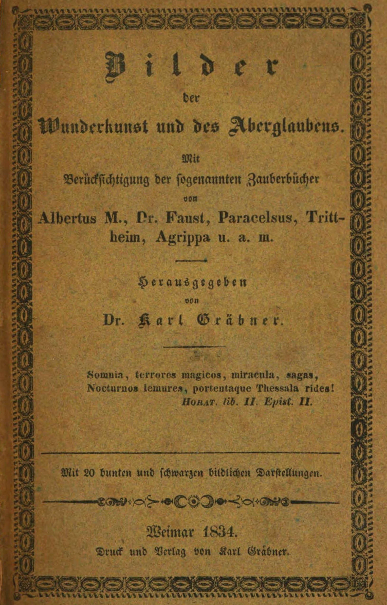
Mit
Berücksichtigung der sogenannten Zauberbücher
von
Albertus M., Dr. Faust, Paracelsus,
Trittheim, Agrippa u. a. m.
Herausgegeben
von
Dr. Karl Gräbner.
Somnia, terrores magicos, miracula, sagas,
Nocturnos lemures, portentaque Thessala rides!
Horat. lib. II. Epist. II.
Mit 20 bunten und schwarzen bildlichen Darstellungen.
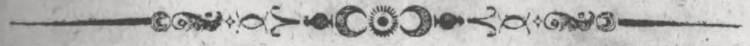
Weimar 1834.
Druck und Verlag von Karl Gräbner.
[S. iii]
Erste Abtheilung.
Wunderkunst.
| Seite | |
| Einleitung | 1 |
| Von den Gespenstern | 11 |
| Der Astral-Geist | 12 |
| Die Necromantie | 16 |
| Von der sogenannten Hexerei | 18 |
| Der Hexen-Sabbath | 21 |
| Von Elben, Holder und Hulderchen | 29 |
| Vom Wind- und Wettermachen | 31 |
| Hexen-Salbe | 31 |
| Von Entzauberung und Amuletten | 32 |
| Von den Siegeln der Planeten | 35 |
| Das Siegel des Saturns | 35 |
| " " " Jupiters | 37 |
| " " " Mars | 38 |
| " " " Sonne | 38 |
| " " " Venus | 39 |
| " " " Merkur | 40 |
| " " " Mondes | 41 |
| [S. iv]Der Heckethaler | 42 |
| Vom Wehrwolf | 43 |
| Vom Bannen und Festmachen | 45 |
| Einen stehend zu machen | 45 |
| Wider die Feuersbrunst | 47 |
| Der Feuersegen | 47 |
| Ein Segenspruch, womit man das Blut stillen kann | 48 |
| Ein Segenspruch gegen den Wurm am Finger | 48 |
| Vom Bannen des Wildes | 49 |
| Die Frei-Schützenkunst | 50 |
| Das Noth-Hemd | 51 |
| Von der Waffensalbe | 51 |
| Von der Wünschelruthe | 53 |
| Die Springwurzel | 55 |
| Die Alraunwurzel | 55 |
| Das Sieblaufen, (Oscinomantia) | 57 |
| Speculum Salomonis, oder der Spiegel Salomons | 58 |
| Vom Unsichtbarmachen | 61 |
| Von der Chiromantie | 64 |
| Von der Geomantie | 71 |
| Von der Onomantie oder Weissagung aus den Namen | 71 |
| Von den Geistern | 76 |
| Die Berggeister | 77 |
| Der Kobold | 78 |
| Wassergeister | 79 |
| Das wüthende Heer | 80 |
| Vom Bannen der Geister | 81 |
| Der Zauberkreis | 83 |
| [S. v]Beschwörungen | 86 |
| Die Mantelfahrt | 95 |
| Schatzgräberei | 97 |
Zweite Abtheilung.
Vom Aberglauben.
| Seite | |
| Acker, wer darauf säen will | 116 |
| Ahnung beim Scharfrichter | 121 |
| Alpdrücken | 128 |
| Basilisk, der | 122 |
| Bibel befragen | 127 |
| Blei gießen in der Christnacht | 114 |
| Christnacht, helle und finstere | 115 |
| Dreifuß, keinen leeren auf dem Feuer stehen lassen | 107 |
| Eisenkraut öffnet verschlossene Thüren | 120 |
| Exorcismus | 125 |
| Finger, mit diesem soll man nicht nach dem Himmel zeigen | 106 |
| Fistel-Heilung | 129 |
| Gevattern, wenn sie über ein Wasser kommen | 109 |
| Guckuk, im Frühjahre schreien hören | 105 |
| Haase, wenn er über den Weg läuft | 113 |
| Haselstock thut Wunder | 128 |
| Jäger-Kunststückchen | 112 |
| Jüdel, das | 119 |
| Johanniskraut, dessen Kraft | 113 |
| [S. vi]Kehrig, über dasselbe gehen | 106 |
| Kinder leicht reden zu lehren | 117 |
| Kinderspiele auf den Straßen | 110 |
| Kleeblatt, vierblätteriges | 110 |
| Kopf, ohne, in der Christnacht | 112 |
| Köpfe, drei, an den Menschen zu machen | 111 |
| Korn, dessen jährlichen Preis zu erfahren | 117 |
| Kröpfe zu heilen | 108 |
| Lichter, wenn sie auf dem Altar auslöschen | 112 |
| Mann, ob die Mädchen in diesem Jahre einen erhalten | 110 |
| Mutisheer, das | 127 |
| Nasenbluten zu stillen | 128 |
| Osterwasser holen | 120 |
| Schuhwerfen, das | 108 |
| Spiegel, in diesen soll man des Nachts nicht sehen | 111 |
| Stube, in derselben soll man sich niedersetzen | 117 |
| Sympathie zwischen Todten und Lebendigen | 116 |
| Todte, welche schmatzen | 124 |
| Todtenuhr, die | 123 |
| Umkehren, das, ist nicht gut | 114 |
| Vampyr, der | 125 |
| Vieh beschreien | 126 |
| Weib, ein altes, wenn es einem begegnet | 114 |
| Worte, gefrorne und eingeschlossene | 121 |
| Zahl 13, die ominöse | 125 |
[S. vii]
Dritte Abtheilung.
Erzählungen von Geister- und Gespenster-Erscheinungen, mit hie und da eingestreuten natürlichen Erklärungen.
| Seite | |
| Anzeigen des Todes | 134 |
| Behexte, die | 197 |
| Bezauberung des Viehes | 200 |
| Doppelsehen, das | 144 |
| Entdeckung der Geisterbeschwörer im 19. Jahrhundert | 218 |
| Freischütz, der | 206 |
| Frei-Schützenkunst | 205 |
| Gespenster-Geschichten | 172 |
| Gespenst, das, im Hause | 133 |
| Glockengeläute, das | 170 |
| Hexe, die | 190 |
| Hexenprozeß | 193 |
| Hexenmeister, der | 195 |
| Hexe, die gerettete | 196 |
| Hexenwaage, die | 197 |
| Hexenfahrt, die | 203 |
| Kobold, der | 214 |
| Necromantisten, die | 183 |
| Prediger, der gläubige | 204 |
| Poltergeist, der | 147 |
| Schatzgräberei | 215 |
| Sehen seiner selbst | 141 |
| Schwedenborg’s Betrügerei | 188 |
| [S. viii]Wahrsagerin, die | 213 |
| Wind machen | 201 |
| Wünschelruthe, die | 211 |
Fragmente
über politisch-religiöse Sekten und Mystiker.
| Seite | |
| Ueber Sekten überhaupt | 229 |
| Jesuiten | 231 |
| Illuminaten | 232 |
| Rosenkreuzer | 235 |
| Schröpfer | 236 |
| Cagliostro | 237 |
| Die Seherin von Prevorst | 239 |
| Der Wunderdoktor | 257 |
| Prinz von Hohenlohe | 258 |
Erste Abtheilung.
[S. 1]
Die jetzt immer fortschreitende tiefe Kenntniß der Natur, wodurch man die verborgenen Geheimnisse derselben untersucht, zu ergründen strebt, um dadurch einen allgemeinen Nutzen zu schaffen, gehört in die Naturlehre, und heißt die Wissenschaft der natürlichen Wunderkunst, oder Magie – Eine sogenannte Zauberkunst, wobei Geisterbeschwörungen, Charaktere und andere übernatürliche Dinge vorkommen, giebt es nicht!
Die unzähligen wundervollen Erscheinungen von Sympathie und Antipathie, deren Unerklärliches, auf einer gewissen Stufe der Cultur, erzeugte den Aberglauben. So auch die Begierde, in die Zukunft zu schauen, um sich solche nach Willkühr anzueignen, und endlich das Bestreben,[S. 2] höhere Wesen (wenn der Mensch sie ahnet) in seine Leidenschaften, Plane und Verhältnisse hineinzuziehen, um durch diese zu erlangen, was man durch eigne Kraft nicht möglich machen kann – Das sind wohl die ergiebigen Quellen des Aberglaubens und der nächste Ursprung des Zauber-Aberglaubens alter und neuer Zeiten gewesen.
Bei allen Völkern gab es sogenannte Magi oder Weise: die Griechen und Römer nannten sie Philosophen, die Indier Braminen, die Celten und Gallier Druiden, Barden; bei den Aegyptiern waren es die Priester, bei den Juden die Cabbalisten und Propheten. Noch finden wir Verehrer der Magie: den Angekok in Grönland, den Schaman in Sibirien, den tibetanischen Geisterbeschwörer, den Wogulitze, und den Abipone in Paraguay; in Canada, Mexiko, die Jongleurs, auf den Caraiben die Playen, in Afrika bei den Kafern und Hottentoten die Gangas oder Fetischirer, die Singhilis der Gager, die Mirabus in Madagaskar u. s. w. Aber Allen liegt nur eine Hauptidee zum Grund, welche Alle leitet und beherrscht. –
Der berühmte, auch marktschreiersche Theoph. Paracelsus sagt von der Magie überhaupt: »Sie ist eine behende, reine Kunst ohne Ceremonie, Beschwörungen,[S. 3] Kreuzwege, Kreise, Schwerter, Kleider, Kerzen, Licht, Wasser, Oel, Feuer, Räucherwerk, Charakter, Stiften, Bücher, ohne die Pentacula, die Sigilla Salomonis, ohne Krone, Scepter, Gürtel, Ring u. s. w. Nur die Necromantie hat mit diesen Dingen zu thun. Die Magie gebraucht allein den Glauben, der Berge versetzt. Aber wenn sie gemißbraucht wird, mag auch Zauberei daraus geboren werden.« – Gleich darauf theilt er aber seine Magie in 6 Species ein:
1) Magica artis, Auslegung übernatürlicher Dinge.
2) M. Transfigurativa, Transformirung von einem Leib in den andern, wie es zu Mosis Zeiten geschehen ist.
3) M. Characteralis lehrt Wörter machen, welche so viel wirken als des Arztes Arzenei.
4) Gamaheos, welches thut, was natürliche Instrumente thun, z. B. ein Schlüssel öffnet ein Schloß, ein Schwert schlägt Wunden u. s. w. Sie macht also dasjenige unsichtbar, was die Natur sichtbar macht.
5) Altera in Altera, Bilder zu machen, welche andern Menschen gleichen. Durch diese Bilder[S. 4] kann man demjenigen, den es vorstellt, alles anthun, ohne ihn zu berühren.
6) Ars Cabalistica. Z. B. es kann Einer im Occident mit einem Andern im Orient reden; denn was die Natur 100 Schritte zu hören vermag, das kann diese Kunst 100 Meilen.
Ist unser Paracelsus hier nicht über die Grenze der Natur geschritten, wo ihm sein Glaube gewiß nichts helfen wird! – In seiner Necromantie lehrt er sogar die Menschen Geister unterthänig zu machen, aber von Allem sagt er nicht, ob er eigne Versuche gemacht habe.
Tharsander, in seiner Magia Naturalis, sagt: die Magie soll eine Wissenschaft geheimer Dinge und der verborgenen Kräfte in der Natur sein, wodurch man viel Wunderbares und Seltsames ausrichten, und solche Wirkungen hervorbringen kann, welche übernatürlich zu sein scheinen. Sie wird eingetheilt in die Teuflische und Natürliche.
Die Teuflische, welche auch ceremonialis[1] genannt wird, ist eine geheime Wissenschaft, sich mit den Geistern bekannt zu machen und durch deren[S. 5] Beihilfe große und wunderbare Dinge zu verrichten. Sie führt sonst den Namen Zauberei.
Die natürliche Magie[2] ist eine Wissenschaft der natürlichen Dinge und ihrer verborgenen, theils wider einander streitenden Kräfte und Eigenschaften, welche nicht jedermann bekannt sind, derer man sich also zu bedienen weiß, daß, indem man sie mit einander absondert, daraus bewundrungswürdige und erstaunende Wirkungen entstehen. Durch die übereinstimmenden und wider einander streitenden Kräfte und Eigenschaften versteht man die sogenannte Sympathie und Antipathie.
Die natürliche Magie wird ferner eingetheilt in eine schlechterdings natürliche, wo die Natur für sich selbst wirkt, z. B. wenn der Magnet das Eisen an sich zieht – oder in eine künstliche, da man durch Hilfe der mathematischen Wissenschaften wunderbare Wirkungen hervorbringt, z. B. die Zauberlaterne – Diese natürliche Magie wird auch noch eingetheilt in die weissagende und würkende. Die erste geht mit Anzeigung verborgener und Vorhersagung zukünftiger[S. 6] Dinge um; in der zweiten aber wird Geschicklichkeit und Kunst mit den geheimen Wissenschaften verbunden, und dadurch etwas Wunderbares bewerkstelligt, z. B. (wie der Abergläubische meint) wenn das Eisen, womit jemand verwundet worden, mit einer gewissen Salbe gestrichen, auf solche Art die Wunde heilt. –
Wir wollen endlich noch zu unserer Einleitung einige gelehrte und weise Männer anführen, die theils durch ihre Gelehrsamkeit, theils durch eigene und untergeschobene Schriften in den Ruf der Zauberei gerathen sind.
Der weise Salomo selbst konnte nicht dem Verdacht der Zauberei entgehen. Die große Anzahl magischer Bücher aber, die ihm zugeschrieben werden, beweisen schon ihre Unächtheit. Nur einige davon: 1) Clavicula Salomonis; 2) das Buch Lamene; 3) das Buch Pentaculorum; 4) das Buch de officiis Spirituum; 5) das Buch Razziel; 6) Speculum Salomonis u. s. w.
Der Bischof Albertus Magnus von Regensburg, war ein großer Gelehrter, Philosoph und Theolog, daher der Beiname des Großen. Er fiel in den Verdacht der Zauberei, da er ein Automat, einen redenden Kopf, verfertigt haben soll. Einige[S. 7] Bücher über Magie, die aber untergeschoben worden sind, machten ihn noch verdächtiger.
Dr. Ioh. Faust, der allbekannte Zauberer, dessen Leben idealisch aufgefaßt, aber geschichtlich unbekannt sein mag. Er soll ein fahrender Schüler und nicht jener Faust, der die Buchdruckerkunst mit erfand, gewesen sein. Eben so ist auch sein Buch: »Dr. Faust Höllenzwang,« wie sein Leben, erdichtet.
Theophrastus Bombastus Paracelsus von Hohenheim (gest. 1541), den wir schon oben kennen gelernt haben, hat sowohl in der Philosophie, als auch in der Arzneikunst und Religion eine auffallende Rolle gespielt, und wird noch jetzt von Alchymisten hochverehrt. Seine Schriften über Magie hatten ihn verdächtig gemacht, allein die Neuheit seiner Ideen, die Undeutlichkeit seiner Schreibart und die Dunkelheit einer Menge Wörter machten es zweifelhaft, was er damit wollte, denn er selbst hat sich niemals seiner großen Geheimnisse, die er sich rühmte, bedient.
Ioh. Trittheim, Abt im Kloster Sponheim, war ein geschickter Mathematiker, Geschichtschreiber, Redner und Theolog, und wurde besonders von seinen Mönchen, weil er strenge Disciplin übte, der[S. 8] Zauberei beschuldigt. Er soll einen Geist um sich gehabt haben, der ihm Alles eröffnete – Das war freilich sein Verstand! – Sein Werk: de Steganographia, von verborgenen Schriften, welches aber untergeschoben sein soll, machte ihn der Hexerei verdächtig.
Heinr. Cornelius Agrippa, ein Schüler des Trittheim, war ein sehr gelehrter Mann. Seiner Philosophia occulta wurde ein viertes Buch voller magischen Ceremonien und abergläubischen Gebräuchen angehängt, daher dieser vortreffliche Mann auch in den Verdacht der Zauberei kam, obgleich er in seinem Buche de vanitate scientiarum seine Verachtung dagegen gezeigt hat.
So viel von den Berühmtesten, wenn diese als Zauberer nicht gelten, so werden die kleinen, die Betrüger und Taschenspieler von selbst wegfallen.
Die neuern, als Schwedenborg, Schrepfer, Saint Germain, Gassner, Messmer, Cagliostro, die Wunderheilungen des Fürsten Hohenlohe, des Bauers Martin Michel u. a. m. wollen wir jetzt mit Stillschweigen übergehen.
[S. 9]In den frühesten Zeiten machten schon die Menschen bei geringen Entdeckungen natürlicher Dinge große Geheimnisse daraus, und setzten das unwissende Volk in Verwunderung, und auf diese Weise erhielten sie einen Wundernamen. In der Folge gaben sie vor, geheime Künste zu besitzen, die aber nichts waren. Die natürliche Magie ist aber nichts anders, als was die Naturlehre uns bietet, und alle sogenannten Wunderkünste sind natürlich.
Die Magie wird also immer demjenigen eine geheime Wissenschaft bleiben, welcher die Kräfte der Natur nicht kennt, dem Wissenden bleibt sie ein Theil der Naturlehre. Es giebt zwar und wird immer noch viele neue Entdeckungen in der Natur geben, aber deswegen ist es und bleibt Alles nichts Uebernatürliches.
Wir werden nun unsern neugierigen und gelehrigen Lesern und Leserinnen nach und nach die alte versteckte Zauberei, womit so Viele geprahlt, aber selbst keine streng untersuchte Beweise gefunden haben, zu Tage fördern, nicht um die Dinge nach zu machen, sondern von der Entdeckung die Wahrheit zu erhalten: daß Unkenntniß der Natur, Leichtgläubigkeit und Betrügerei der Zauberei und Hexerei Nahrung geben.
[S. 10]Denn eine gewisse Classe von Menschen in Städten und Dörfern legt jetzt noch einen großen Werth auf Zauberbücher, und kauft sie sehr theuer, wenn sie dieselben nicht als ein Erbstück erhalten hat. Handschriften sind es gemeiniglich, die unter ihnen circuliren, und sie glauben, daß solche Bücher nicht gedruckt oder doch in wenigen Händen zu finden sind. –
Wir werden daher auch aus mehrern Handschriften, die sich in Criminalprocessen von Geisterbannern und Schatzgräbern vorgefunden haben, Auszüge (durch freundliche Mittheilung) mit wunderlichen Figuren geben können – Das ganze Werkchen zerfällt in 3 Abtheilungen: die erste handelt von der Zauberei, die zweite vom Aberglauben, die dritte giebt Erzählungen, welche auf die erste Abtheilung Bezug haben.
Jedoch werden wir auch, nach unserm vorgesetzten Plane, viele Abscheuligkeiten, wobei Gottes Name zu sehr von Vorwitz, Unverstand, Leichtsinn und bösen Willen gemißbraucht wird, unterdrücken.
So möge nun die Zauberei oder Hexerei anfangen, und, nach unserm Plane, recht viel Gutes stiften!
[1] Oder die schwarze Magie, davon Schwarzkunst und Schwarzkünstler.
D. H.
[2] Auch die weiße Magie genannt.
[S. 11]
Furcht und Einbildung erzeugten schon im grauen Alterthum den Glauben an Gespenster, denn die Phantasie ist von so grenzenlosem Umfange, sagt ein neuer Schriftsteller, daß sie sogar das bloße Beisammensein mehrerer Dinge zu einem Subjecte umbildet, und eine Eigenschaft der einen Sache zur Eigenschaft der andern macht. Es kann kommen, wenn man eine Stimme aus der Ferne hört, daß der Eine sie für die des Freundes, den er erwartet, der Andere für die des Feindes, den er fürchtet, und der Diener die Stimme für die seines Herrn hält.
Kinder, welchen Gespensterhistörchen erzählt werden, behalten die Furcht, und die Nacht, den Kopf mit Gespenstern angefüllt, erzeugt Phantome, die nicht sind. Klosterwunder, Vapeurs und hypochondrische[S. 12] Dünste brachten das Spuken und die Gespenster hervor. Die Bewohner der Klöster fanden ihre Rechnung dabei, um ihr Fegfeuer als eine Wahrheit zu vertheidigen, und dem gemeinen Haufen den Gespensterglauben nicht nur zu lassen, sondern auch zu verstärken.
Was soll aber nun ein Gespenst sein? Es soll eine geistige Substanz sein, die einen Körper angenommen, und darin sich sehen, hören und fühlen läßt, kurz, der Geist des Verstorbenen.
Dieser Geist, welchen Einige den Astral-Geist oder Sternen-Geist nennen, soll sich nebst der Seele im Menschen befinden. Der Mensch bestände nämlich aus drei wesentlichen Stücken: dem irdischen Leib, der unsterblichen Seele, und einem Mittelding zwischen diesen beiden, dem Astralgeist. Diese Lehre der Trialisten hat schon Plato angeführt, dann kam sie in die Alexandrinische Schule, und so unter die Christen. Herr Paracelsus ist vom Astralgeist eingenommen und sagt: »der Mensch besteht aus drei großen Substanzen, die erste ist die Seele, von Gott kommend und nach dem Tode wieder dahin zurückkehrend; die andere der Geist, der aus dem Firmamente kommt, und aus Feuer und Luft besteht, auch endlich in der Luft sein Grab oder seine Zerstörung[S. 13] findet; die dritte Substanz ist der grobe Leib, welcher aus Erde und Wasser besteht, und wieder zur Erde werden muß.«
Da die Seele und der Körper des Menschen von ganz verschiedener Natur und verschiedenen Wesen sind, so kann man schwer begreifen, worin das Band und die genaue Vereinigung derselben besteht, daher bei diesen zwei Extremen, die gegen einander sind, nicht anders als durch ein Mittelding, welches in seiner Natur dem einen sowohl, als dem andern näher kommt, verbunden und vereinigt werden können. Dieses Mittelding sei zwar kein Geist, oder ein ganz unkörperliches Wesen, sondern eine sehr reine und subtile Materie, die wegen der Subtilität der Seele näher komme, als der grobe Leib des materiellen Wesens wegen dem Körper näher sei, als die ganz unmaterielle Seele. Um die Existenz eines solchen Mitteldings zu beweisen, nimmt man den Streit zu Hilfe, der sich oft bei den Menschen zwischen dem Verstand und den sinnlichen Begierden findet. Die Phantasie und die sinnlichen Begierden sollen Kräfte des Astralgeistes, aber Verstand und Wille, Kräfte der Seele sein.
Dieser Astralgeist, sagt Paracelsus, erscheint nach dem Tode des Menschen noch eine Zeitlang, da er[S. 14] das Vermögen, die Gedanken, Einbildungen und Begierden, welche er beim Abschied vom Körper empfängt, und die ihn stark eingedrückt werden, noch eine geraume Zeit zu behalten u. s. w.
Doch genug von dieser wunderlichen Einbildung, die sich von selbst und mit wenigen Worten widerlegt! Kann die Seele auf den Körper nicht wirken, so kann sie es auch nicht auf den Astralgeist, weil er ja auch materiell ist, er mag noch so subtil sein. Alle Dinge in der Natur sind entweder einfach oder zusammengesetzt, ein Drittes giebt es nicht, also woher ein Mittelding zwischen Seele und Leib!
Mit diesem sogenannten Astralgeiste wollen Viele, namentlich Paracelsus, das Spuken der Verstorbenen und das Erscheinen nach dem Tode erklären. Aber gewiß! weder sie noch wir haben den Geist eines Verstorbenen gesehen.
Eben so wenig kann sich die Seele wie von einem Verstorbenen, auch von einem Lebenden trennen und einem andern erscheinen – denn ist diese einmal vom Körper, kehrt sie nie wieder zu ihm zurück[3] – Daher das Sehen seiner selbst, die[S. 15] vielfältige Gegenwart einer Person an verschiedenen und entfernten Orten, und das Doppelsehen gehört zu den Täuschungen, Fabeln und Betrügereien[4].
Betrüger[5], Diebe[6] und Verliebte haben stets die Rolle eines Gespenstes gespielt. So sagt noch ein altes französisches Sprichtwort von den Verliebten:
[3] S. dritte Abtheilung. Das Gespenst im Hause. Anzeige des Todes.
[4] S. dritte Abtheilung. Sehen seiner selbst. Das Doppelsehen.
[5] S. dritte Abtheilung. Der Poltergeist. Glockengeläute.
[6] S. dritte Abtheilung. Gespenstergeschichte.
[S. 16]
Durch diese Wunderkunst ruft man die Todten aus ihren Gräbern, wenn man von ihnen geheime und künftige Dinge erfahren will. C. Agrippa nennt zwei Arten dieser Zauberei: Necyomantie, wodurch man die verstorbenen Körper sogar wieder lebendig dargestellt, und Sciomantie, wenn blos ein Schattenbild des Verstorbenen erscheint – Die Necromantie ist sehr alt, denn die Betrügerin zu Endor ließ ja den Schatten (Können denn Schatten auch sprechen?) Samuels erscheinen. Im allgemeinen ist diese Kunst eine große Betrügerei[7]. Die Kunststücke mit dem sogenannten Zauberspiegel, wodurch man erstaunungswürdige Dinge produciren, so auch mit der Zauberlaterne, wodurch man[S. 17] Gestalten in freier Luft präsentiren kann – finden wir in Wiglebs natürl. Magie, Berlin und Stettin 1779, wohin ich die neugierigen Leser verweise.
Alle Necromantisten sind feine Betrüger. Schwedenborg, Schrepfer und Cagliostro waren solche Subjekte, und die größten Geisterbanner, die sogar hohe Personen und angesehene Gelehrte täuschten (S. Abth. III. Schwedenborg).
Den Schwachen geht es mit der Geisterseherei, wie jenen, als ein gewisser Engländer, Sawney, ein berüchtigter Seher und Wahrsager, große Gebäude, herrliche Tempel, mit kunstreichen Statüen u. s. w. erblickte, welche aber alle von – Eis und Schnee waren, und als die Sonne aufging, das Ganze zerschmolz, und die Neugierigen nichts sahen!
[7] S. dritte Abtheilung. Die Necromantisten.
[S. 18]
In allen Jahrhunderten, bei allen Nationen, findet man den Glauben an höhere, gute und böse Geister, und bei uns brachte man in der unglücklichen Zeit der Hexenprozesse – vom 13ten bis 17ten Jahrhundert – die Wunder des Teufels in ein System, behandelte sie wie andere natürliche Erscheinungen, indem man das Natürliche mit dem Uebernatürlichen durcheinander mischte. Von dieser Zeit an untersuchte man die Hexerei oder Zauberei, wie einen Mord, einen Diebstahl u. s. w., daher also die verwirrten Ideen in diesem Zeitalter bei allen Gelehrten und allen Klassen von Menschen. (S. Abth. III. die Hexe, der Hexenprozeß, der Hexenmeister.)
Ueberhaupt hat die Inquisition, da sie der Unglücklichen Güter einzog, erst die Hexerei bekannt gemacht. Im 15ten Jahrhundert stieg[S. 19] die Meinung der Zauberei aufs Höchste, namentlich durch die Bulle des Papstes Innocens VIII., den 4. December 1484. Diese Bulle brachte die Hexenprozesse in Gang, weil sie darin erst recht begründet und verbreitet wurden, und zwar durch Erklärungen über die Wirklichkeit von Teufelskünsten und Schilderungen ihrer Wirkungen. Um der Sache noch mehr Gewicht zu geben, erschien sogar zur Erläuterung das furchtbare Buch, der Hexenhammer, 1489.
In Teutschland brennten die Flammen, welche Unschuldige hinrichteten, und solche Tage, wo eine Hexe verbrannt wurde, waren Jubeltage des gemeinen Mannes. (S. Abth. III. die gerettete Hexe.)
Aber Teutsche waren es auch, die besonders und mit Gründen den allgemeinen Glauben an Zauberei und Hexerei zu bestreiten wagten. – Cornelius Loos, noch besonders ein Priester zu Mainz, war einer der ersten, welcher die Ungerechtigkeiten der Hexenprozesse zu zeigen sich erkühnte. Er mußte aber zweimal widerrufen, wenn er nicht auch verbrannt seyn wollte. Er starb 1593. – Auch die Jesuiten Adam Tanner (gest. 1632) und Friedr. Spee schrieben gegen[S. 20] die Hexenprozesse. – Endlich trat zu Anfang des 18ten Jahrhunderts ein kräftiger Mann auf: Christ. Thomasius, Lehrer der Rechtswissenschaft zu Halle, und kann als der eigentliche Zerstörer des Hexenprozesses betrachtet werden.
In der Folge wurde aller Zauberglauben durch die Naturwissenschaft vernichtet, doch ohne ihn gänzlich auszurotten; denn in gegenwärtiger Zeit publizirt man noch Berichte von Wunderkuren durch Zeitungen, wie der Hang zum Aberglauben sich bildet, und jetzt wieder besteht. –
Im Allgemeinen wird die Hexerei oder Zauberei folgendermaßen beschrieben:
Sie ist ein Verbrechen, wenn ein Mensch mit dem Teufel, welcher in einer menschlichen, thierischen oder andern Gestalt erscheint, einen Bund macht, darüber ein Instrument aufsetzet, und dasselbe mit seinem Blute unterschreibt, vermöge aber dessen Gott und die Religion verleugnet, und sich dem Teufel zu dienen verpflichtet, auch nach Verfließung einer bestimmten Zeit sich demselben mit Leib und Seele zu eigen übergiebt; wogegen der Teufel verspricht, einem solchen Menschen wiederum zu Willen zu seyn, und[S. 21] mancherlei Ergötzlichkeiten zu schaffen, ihm beizustehen, daß er große und wunderbare Dinge ausrichten, und andern Menschen nach Belieben Schaden zufügen könne, ihn auch zu gewisser Zeit abzuholen, und durch die Luft zu führen, wo der Teufel mit seinen Getreuen und Bundsgenossen die Versammlung hält, wo sie sich mit Singen, Tanzen, Fressen und Saufen u. s. w. recht lustig machen.
Im weitläufigen Sinn versteht man aber von Hexerei, wenn ein Mensch verschiedene ungewöhnliche und abergläubische Mittel und Ceremonien vornimmt, um Hilfe zu schaffen oder Schaden zu thun, ob er gleich nicht ausdrücklich mit dem Teufel einen Bund gemacht hat. Man muß aber die Magie der Alten von der heutigen Zauberei unterscheiden, welche letztere von der erstern entstanden ist.
Die Candidaten, besonders weiblichen Geschlechts, halten jährlich dreimal den sogenannten Hexensabbath. Der Ort der Versammlung heißt bei uns in Teutschland der Blocksberg, in Italien Noce di Benevento, in Schweden Blocula; in andern Ländern wird man vielleicht auch solche Versammlungsörter haben; sonst geschehen[S. 22] sie auch auf Kreuzwegen, unterm Galgen, auf Kirchhöfen, oder lieber bei einem See oder Sumpf, weil man das Wasser schlagen und dadurch Ungewitter erregen kann. An dem Ort, wo der Sabbath gehalten wird, soll nichts wachsen.
Ist nun die bestimmte Zeit da, so entkleiden sich die Zauberer und bestreichen sich mit einem Fett, welches ihnen jedesmal bei dem großen Sabbath ausgetheilt wird. Alsdann fahren sie zum Schornstein hinaus, an dessen Ende sie einen großen schwarzen Mann mit zwei Hörnern antreffen, der sie ergreift und nach dem Versammlungsort hin und zurück bringt. Sie bedienen sich zu ihrer Fahrt auch anderer Werkzeuge, als schwarze Böcke, Ziegen, Kälber, Wölfe, Katzen und Hunde, oder auch Ofengabeln, Spinnrocken und Besen, worauf sie durch die Luft fahren.
In der Versammlung erscheint nun der Teufel, als Vorsteher in mancherlei Gestalt, bisweilen wie ein Mensch, aber öfter als ein – Bock. So sitzt er auf einer schwarzen Kanzel, mit einer Krone von schwarzen Hörnern, zwei Hörner hinten und eins an der Stirn, mit welchem er der Versammlung leuchtet, mit zu Berge stehenden[S. 23] Haaren, mit blassem und verstörtem Gesicht, großen, runden, aufgesperrten, feurigen und häßlichen Augen, mit einem Ziegenbart, mit einem ungestalteten Hals, mit einem Leib, halb Mensch, halb Bock, mit Händen und Füßen, fast wie ein Mensch, außer daß die Finger alle gerade und spitz sind, und scharfe Nägel haben, seine Hände sind krumm, wie die Krallen der Raubvögel, die Füße so breit wie Gänsefüße; der Schwanz ist so lang, als an einem Esel. Er hat eine schreckliche Stimme, und ein melancholisch verdrüßliches Gesicht.
Sobald er sich gesetzt hat, küssen die Zauberer ein unter seinem Schwanze befindliches schwarzes Menschengesicht. Alsdann geht der Tanz an, und die Hexen singen:
Bisweilen tanzen auch Kröten vor ihnen her, und machen tausenderlei krumme Sprünge. Nach dem Tanze geht es zur Mahlzeit. Aber die aufgetragenen Gerichte sind ekelhaft, doch – der neugierige Leser muß alles wissen: – Sie bestehen aus Kröten, Aas, Leichnamen und ungetauften[S. 24] Kindern. Salz giebt es nicht, aber Brod von schwarzer Hirse.
Nach aufgehobener Tafel setzt sich der Teufel an einen Tisch und nimmt die Huldigung der Hexen an, die sie ihm, eine nach der andern, ablegen, indem sie alle angezündete schwarze Pechfackeln in Händen haben, die sie nach geendigter Ceremonie dem Teufel, den sie ihren Prinz nennen, wieder zustellen, der sie bis zur künftigen Versammlung aufhebt. Wenn dieses zu Ende, fragt er, was ihr Begehren sey? Was für Gift, den Menschen zu schaden, sie nöthig hätten? u. s. w. – und ertheilt ihnen Rath und Hilfe.
Eine jede Hexe bringt etwas auf den Sabbath mit, als Farrenkraut, Mistel, Wegerich, Kröten, Eidechsen, Schlangen und kleine Kinder, welches der Teufel in Stücken hackt, alles kochen läßt und von dem Fette die Salbe macht.
Genug sey es von dieser verwirrten Einbildungskraft, von der uns de Lancre Tableau de l’Inconstance des mauvais Anges et Demons erzählt hat.
Da wir aber einmal bei dem Teufel sind, so müssen wir doch noch etwas von seiner Person und seinen Umtrieben reden.
[S. 25]Agrippa in seiner occulta philosophia giebt von den bösen Dämonen neun Ordnungen an:
1) Diejenigen, welche man die falschen Götter nennt, die den Namen der Gottheit gleichsam usurpirt haben und als Götter verehrt seyn wollen. So wie jener, welcher Christus alle Schätze der Welt zeigte, und sie ihm verhieß, wenn er vor ihm niederfallen und ihn anbeten würde. Der Oberste dieser Dämonen wird Beelzebub genannt.
2) Die Lügner. Ein solcher war bei dem Propheten Achab, bei der Hexe von Endor und bei den Orakeln. Der Oberste dieser Teufel hieß Python.
3) Die Gefäße der Ungerechtigkeit und des Zornes Gottes. Sie sind die Erfinder allerlei Uebel. Der Oberste wird Belial genannt.
4) Die Rächer der Laster. Der Oberste heißt Asmodeus.
5) Weissager, Betrüger, Verblender, welche Mirakel nachahmen und Böses thun, wie die Schlange der Eva. Der Oberste heißt Satan.
[S. 26]
6) Wettermacher. Es sind ihrer vier, nach den vier Hauptwinden, und der Oberste heißt Merizim.
7) Furien, Stifter der Zwietracht und des Kriegs. Der Oberste heißt Abaddon.
8) Verläumder. Die Griechen nennen sie Diabolos, unsere Teufel. Der Oberste ist Astaroth.
9) Versucher, böse Geister. Der Oberste heißt Mammon (Begierde nach Reichtum).
Man hat sehr verschiedene Auslegungen des Namens Teufel. Einige sagen, das Wort Teufel bedeute einen Zerstörer; andere – einen Verführer; die Griechen nennen ihn Verläumder; daher kann auch das Wort nicht allein eine Person, sondern mehr Handlungen und Gewohnheiten bedeuten.
Wenn nun auch dieser Teufel in den Abgrund gestürzt und gebunden ist, so bleibt er doch in dem Munde des Volkes, und hat sogar noch manchen Gegenständen seinen Namen geliehen.
So giebt es unter vielen andern die Teufels-Inseln (die Bermuden), von den Spaniern zuerst entdeckt, welche sie wegen ihrer fürchterlichen Felsen los Diabolos nannten.
[S. 27]Der Blocksberg auf dem Harz, berüchtigt durch die Hexenversammlung.
Die Teufelshochzeit ist ein Berg in Ungarn, unweit dem Bergstädtchen Boza, und wird wegen der daselbst häufig aufsteigenden großen Gewitter so genannt.
Der Teufelsgrund ist ein tiefes Thal im Riesengebirge unweit Greifenberg.
Die Teufelsgrube wird eine Höhle in dem bei Goslar gelegenen Rummelsberge genannt, wo der Teufel ein Bergwerk gehabt haben soll.
Das Teufels-Mör ist eine Gegend bei Bremen, unweit der Weser, wo zwischen Moor eine Viehweide liegt.
Der Teufelsweg auf den Gebirgen, welche Savoyen von Piemont scheiden, ist unter mehreren Pässen einer, welcher le Pas de Diable heißt, wegen der Gefahr der Reisenden, in Abgründe zu stürzen.
Die Teufelskirche. In dem fürchterlichen Thale bei Altdorf, zwischen Weihofen und Grunsberg, ist eine große Tiefe oder Kluft am Fuße eines waldbewachsenen Berges, welche so genannt wird.
[S. 28]Die Teufelsleiter ist ein steiler Berg bei dem Flecken Lorch, wo ein steiler Weg hinauf geht.
Die Teufelsmauer. Sie ist ein Werk der Römer, welche einen Wall oder Pfahlhecke zur Sicherheit gegen die Teutschen erbauten. Noch kann man ihre Ruine sehen, welche bei Pföring an der Donau anfängt und bis an den Neckar läuft.
Auch wird ein Berg einige Stunden von Quedlinburg die Teufelsmauer genannt, weil er wie von über einander liegenden Steinen zusammengetragen erscheint.
Die Teufelsbrücke, am St. Gotthardsberge in der Schweiz.
Die Regensburger Brücke soll auch durch Beihülfe des Teufels erbaut worden seyn.
Der Teufelsthurm, ein auf einem Felsen stehender Thurm, unfern des Strudels in der Donau.
So giebt es auch Teufelsmühlen, z. B. zwischen Corvey und Hameln, wo ein starkes, aus einem Felsen strömendes Wasser ein Mühlrad treibt.
Teufelssteine nennt der gemeine Mann große Blöcke, weil er ihren Ursprung nicht kennt.
[S. 29]Sogar ein Fisch muß den Namen Teufel tragen – der Seeteufel.
Auch unter Vegetabilien finden wir den Namen Teufel, z. B.: Teufels-Abbiß (Morsus Diaboli), Teufels-Aepfel (Coloquinten), Teufels-Dreck (Assa foetida), Teufels-Ingber (Arum), Teufels-Scheu (Daemonum fuga, Johanniskraut) u. s. w.
Zuletzt müssen wir noch den Paracelsus hören, was er von der Erkennung einer Hexe sagt: Sie liebt ihren Mann nicht, feiert besonders den Samstag und den Freitag, hat besondere Zeichen an sich, als krumme Glieder, besonders eine krumme Nase, ist leicht am Gewicht u. s. w. Sie hängt auch Zaubereien an sich, kocht selten und wäscht sich nicht, kehrt in der Kirche rücklings um und will gern allein und für sich seyn. (S. Abth. III. die Hexenwage.)
Durch diese Dinger stifteten die Hexen Krankheiten und vielerlei Unfälle. Bei dem Teufelsbündniß[S. 30] erhielt jede Hexe ihren Geist, oder einen besondern Leibteufel. Im funfzehnten Jahrhundert war es nichts Ungewöhnliches, daß eine Hexe mit ihrem Geiste menschliche Kinder zeugte. Mit diesen Geschöpfen, welches gewöhnlich Würmer waren, stifteten sie das Unheil: z. B. das Anthun, Behexen (s. Abtheil. III. die Behexte, Bezauberung des Viehes), Krankmachen, sogar Tödten. Diese Geburten, Elben, Holder u. s. w., wurden pulverisirt, welches das Hexenpulver wurde.
Die Hexen konnten auch Menschen und Vieh krank machen:
1) durch bloße Worte, wenn sie z. B. die Kinder beschrieen. Man lobte die Kinder ohne Neid, setzte aber hinzu: Gott behüte es! – Die Hexen aber sagten: Ei, daß dich mein Gott behüte! Dadurch aber sollen sie nicht den wahren Gott, sondern den Satan verstehen.
2) Durch bloßes Anschauen, z. B. mit Triefaugen.
3) Durch zauberische Salben an die Hausthür und andere Orten geschmiert. Oder
4) durch Charaktere.
[S. 31]5) Durch etwas Vergraben unter die Thürschwelle.
Man eignet den Hexen zu, daß sie Blitz, Donner und Hagel machen könnten. Sie nehmen nämlich große Kieselsteine und werfen sie gegen Sonnenuntergang; Sand aus einem Bach stäuben sie gen Himmel, tauchen einen Besen ins Wasser und spritzen damit gen Himmel, machen eine Grube in die Erde, gießen Wasser hinein und rühren es mit dem Finger herum; sie sieden Schweinsborsten in einem Topfe, legen Balken oder Hölzer kreuzweise am Ufer eines Wassers u. s. w. (Wierus de Lamiis erzählt mehr davon.)
Wind haben die Hexen immer gemacht. (S. Abth. III. Windmachen.)
Die Hexen machten auch ihre Salbe selbst, und nahmen dazu gewisses Fleisch, kochten es in einem Kessel mit Wasser und nahmen das oben schwimmende Fett ab, das andere ließen sie stark einsieden. Hernach vermischten sie es mit Eppich,[S. 32] Wolfs-Wurzel, Pappelzweigen und Weihrauch. Oder sie nahmen Wasser-Mark, Acker-Wurz, Fünffinger-Kraut, Fledermausblut, Nachtschatten und Oel, und machten daraus eine Salbe. Damit schmierten sie sich und rieben die Glieder ein, worauf sie dieselben wieder mit Oel und Fett bestrichen.
Nun ist leicht zu erklären, da diese Salbe eine betäubende Kraft hat, daß sie die Hexen nicht allein in einen tiefen Schlaf versetzte, sondern davon auch mancherlei Gesichter im Traume hatten, von denen sie vorher eingenommen waren, und Selbstbetrogene wurden. (S. Abth. III. Hexenfahrt.)
In der Hexengeschichte, wo man den Menschen Qualen schuf, war man auch in Mitteln erfinderisch, solche zu heilen.
Nimm: Gottes Gnad, Herrgotts-Aepfel, Christwurzel, Cardobenedikten, Liebstöckelwurz, Mannstreu, Hilfswurz, bind dies mit Siebengezeit zusammen in Herzkraut, und trag es immer im Busen.
Ein Anderes:
[S. 33]Abbiß, Drachenwurz, Teufelskirschen, Haidekorn, Säwbrod, Tollkraut, Hundszung, Herzgesperr, Stolzheinrich, Bengelkraut, Kalbsaug, Bärenklau und Wolfsmilch. Binde dies alles in Lappenblätter mit Bettlerseil und Faulbaumrinden fein hart zusammen, und wirfs hinterwärts von dir an einen Ort, dahin du nicht mehr kommst. So weichen zur Stund alle Zauberer und Hexen von dir, und bist du wohl purgieret von ihrem Gifte.
Man hing auch Kräuter, Wurzeln, Steine und andere natürliche Dinge an den Hals, vorzüglich erhielten Amulette die Kinder, sie vor Hexerei zu bewahren. Man machte auch Kreuze über verschiedene Dinge. (S. Abth. III. der gläubige Prediger.) Man blieb aber nicht bei den natürlichen Dingen, sondern machte Buchstaben, Wörter, Zeichen oder Bilder auf Pergament, Papier oder andere Dinge, oder man grub es in Steine, Metalle. Diese Anhängsel wurden auch dem Vieh und leblosen Dingen angehängt. – Unter die künstlichen Amulette gehört zuerst das bekannte Abracadabra, welches zu den Zeiten des römischen Kaisers Severus und Caracalla von einem Arzt Sammonicus gekommen[S. 34] sein soll. Man schreibt es auf Papier, wie folgt:
| A | b | r | a | c | a | d | a | b | r | a | |||||||||||
| a | b | r | a | c | a | d | a | b | r | ||||||||||||
| a | b | r | a | c | a | d | a | b | |||||||||||||
| a | b | r | a | c | a | d | a | ||||||||||||||
| a | b | r | a | c | a | d | |||||||||||||||
| a | b | r | a | c | a | ||||||||||||||||
| a | b | r | a | c | |||||||||||||||||
| a | b | r | a | ||||||||||||||||||
| a | b | r | |||||||||||||||||||
| a | b | ||||||||||||||||||||
| a |
Dieses wird in Leinwand gewickelt und einem, der eine Krankheit hat, an den Hals gehängt.
Ein anderes Anhängsel beschreibt Agrippa im 4. Buche seiner Philosophia occulta: Es gleicht einem erwürgten Lamme, welches sieben Hörner und Augen, und unter den Füßen ein mit sieben Siegeln verschlossenes Buch hat, aus Offenb. Joh. 5. Darum wird der Vers geschrieben: Siehe, es hat überwunden der Löwe, der da ist vom Geschlecht Juda, die Wurzel David, aufzuthun das Buch, und zu brechen seine sieben Siegel. Alsdann der Vers: Ich sehe den Satan[S. 35] vom Himmel fallen, wie einen Blitz. Und diese Worte: Siehe, ich habe euch die Gewalt gegeben, zu treten auf Schlangen und Scorpionen, und über alle Gewalt der Feinde, und euch soll nichts schaden. Zuletzt schreibt man darauf die 10 Haupt-Namen Gottes: El, Elohim, Elohe, Zebaoth, Elion, Escerchie, Adonay, Jah, Tetragrammaton, Saday.
Dieses soll eine große Kraft besitzen, und zur Beschwörung der Geister höchst nützlich und nöthig sein.
Paracelsus und Trittheim lehren uns auch die Siegel der Planeten zu machen, welche große Kraft und Tugend haben sollen, wenn man sie nach himmlischem Lauf und zu rechter Stunde und Zeit mache und bereite, und – bei sich trage.
Dieses sind die Amulette oder Talismane, von denen die Alten und Neuen so viel gehalten haben:
Es wird vom feinem Blei gegossen, auf die eine Seite wird ein Quadrat, worin neun kleine Quadrate, gegraben, in jeder horizontalen und[S. 36] perpendikulären Linie, so wie über das Kreuz, muß die Zahl 15 addirt werden können. – Diese Zahlen, in allen folgenden Siegeln, sind in jedem Siegel heimlich verborgene Zahlen der andern Sterne, welche demselben Planeten unterworfen sind; denn ein Planet heißt ein vornehmer Stern, darum muß er auch andere Sterne unter sich haben und dieselben regieren. – Auf der andern Seite des Siegels soll das Bild des Planeten, ein alter Mann mit einem Barte, und mit einer Schaufel die Erde grabend, stehen; auf seinem Haupt soll er einen Stern und den Namen Saturn haben, nebst dem Planeten-Zeichen oder Charakter[8]. Wenn der Mond an einem Sonnabend im Stier oder Steinbock eintritt, und Saturn eines rechten Ganges und guten Wesens ist, so wird das Siegel in Schnelligkeit gestochen, und dasselbe in einem schwarzseidenen Tuche getragen. – Dieses Siegel ist gut für schwangere Weiber, dann mehrt sich alles bei dem Träger; und wenn der Reiter es im linken Stiefel trägt, wird sein Pferd keinen Schaden leiden.
[S. 37]Wird aber dieses Siegel gemacht, wenn Saturn in seinem Rückgang ist, an einem Samstag, und in seiner Stunde, so verhindert er alles Vornehmen, und wer es trägt, dem gelingt nichts, und nimmt alles ab.
Es wird von feinem englischen Zinn gegossen; auf der einen Seite das Quadrat mit 16 kleinen Quadraten gegraben, in den oben angeführten Linien muß die Zahl 34 addirt werden können. Auf der andern Seite soll ein Mann in ehrwürdiger Kleidung, in einem Buche lesend, stehen, auf dem Haupte einen Stern mit dem Namen Jupiter, dabei sein Zeichen oder Charakter[9]. Am Donnerstag, wenn der Mond in die Wage tritt, im ersten Grad, wird das Zinn in Schnelligkeit geprägt, und dasselbe in einem blauseidenen Tuche getragen. – Dieses Siegel giebt Liebe, Huld und Gunst von allen Menschen, und wer es bei sich trägt, bei dem mehrt es sich, und nimmt zu von Tag zu Tage, und macht seinen Träger glücklich in allen Handlungen.
[S. 38]
Dieses Siegel muß vom besten Eisen geschmiedet werden. Die eine Seite ist wieder quadrirt, und das Quadrat mit 5 multiplizirt, muß in den Linien die Summe 65 stehen. Auf der andern Seite steht das Bild des Planeten: ein gepanzerter Kriegsmann, in der Linken eine Tartsche, in der Rechten ein blankes Schwert haltend; auf seinem Haupt ein Stern, der Name des Mars und das Zeichen[10]. Dieses Siegel giebt Stärke und Sieg in jedem Kampf, überwindet die Feinde und giebt keinen Schaden. Wenn man dies Siegel in eine Festung eingräbt, so müssen die Feinde verlieren. Wenn man aber das Siegel, wie überhaupt alle andern, macht, wenn Mars zurückkehrt, und in einem unglücklichen Aspekt steht, so wird das Gegentheil: Krieg, Haß, Neid und alles Unglück.
Dieses wird vom feinsten Golde gemacht, das Quadrat wird mit 6 multiplizirt und in den Linien muß man die Zahl 111 addiren können.[S. 39] Auf der andern Seite muß das Bild des Planeten stehen: ein gekrönter König, auf einem Thron sitzend, ein Scepter in seiner Rechten, auf dem Haupte eine Sonne, und den Namen Sol und das Zeichen[11]; zu den Füßen liegt ein Löwe. Wenn am Sonntag der Mond im Löwen tritt, im ersten Grad etc., muß das Siegel gemacht werden, und dieses trägt man in einem gelbseidenen Tuche bei sich. Es giebt Gunst und Gnade vor allen Fürsten, und erhöht den Menschen täglich, daß er an Ehre und Gut zunimmt.
Dies wird von reinem Kupfer gemacht, auf der einen Seite quadrirt, das Quadrat mit 7 multiplizirt, daß in den Linien 175 gezählt werden kann. Auf der andern Seite steht das Bild des Planeten: ein Weib, in ihrer Linken eine Lyra haltend, auf dem Haupte hat sie einen Stern mit dem Namen Venus und dann das Zeichen[12]. Neben ihr steht ein Kind mit Bogen und Köcher. Dies Siegel wird an einem[S. 40] Freitag gemacht, wenn der Mond im Stier oder in die Jungfrau tritt, im ersten Grad, bei guten Aspekten, und trägt dasselbe in einem grünseidenen Tuche. – Es giebt Gunst und Liebe zwischen Mann und Frau, vertreibt alle Feindschaft und giebt Geschicklichkeit in der Musik.
Dieses muß von coagulirtem Quecksilber (oder auch vom Blei) gegossen werden. Die Form muß aus zwei Stücken bestehen; in das eine kommt die Zahl oder das Quadrat, in das Andere das Bild. Das Quadrat wird mit 8 multiplizirt, und muß in jeder Reihe 260 stehen. Das Bild des Planeten ist ein Mann mit Flügel auf dem Rücken und an den Füßen, einen Stab in der rechten Hand, woran zwei Schlangen sich winden, auf seinem Haupte ein Stern, dann der Name Mercurius und sein Zeichen[13]. Das Siegel wird gegossen, wenn der Merkur in Aspekt ist, an einem Mittwoch, wenn der Mond in den Zwilling oder Scorpion tritt. Man trägt es in einem purpurfarbenseidenem Tuche. Es[S. 41] giebt Gunst, Verstand zur Philosophie und allen natürlichen Künsten. Wer dieses Siegel beim Schlafengehen unter das Haupt legt, wird alles erfahren, was man wünscht.
Es wird von feinem Silber gegossen, auf der einen Seite das Quadrat, welches mit 9 multiplizirt wird und in jeder Linie 369 Zahlen stehen. Auf der andern Seite ist das Bild des Planeten: ein Weib mit einem umschwebenden Kleide, auf einem halben Mond stehend und einen halben Mond in der Rechten haltend; auf ihrem Haupte ein Stern und der Name Luna, mit dem Zeichen[14]. Wenn der Mond in gutem Aspekt an einem Montag, wenn er in den Steinbock oder in die Jungfrau eintritt, im ersten Grad, wird das Siegel gestempelt und dann in einem weißen Tuche bei sich getragen. Dieser Talisman schützt vor vielen Krankheiten, ist auch den Auswandernden gut, und denen, die viel Land bauen; es beschützt sie vor Mörder und Räuber und macht alle Dinge beständig.
[S. 42]
Darunter versteht man ein Stück Geld, welches, wenn es ausgegeben wird, jedesmal wieder in die Tasche zurückkehrt, oder sich immer vermehrt. Dieses Hexengeld zu erlangen, haben wir zwei Anweisungen; wenn also die eine nicht hilft, soll die andere helfen, woher schon das ganze Hexenstückchen verdächtig wird. Derjenige also, welcher das Heckegeld zu haben wünscht, soll sich in der Christnacht auf einen Kreuzweg setzen und einen Kreis von dem Gelde, welches man haben will, Groschen, Gulden, Thaler, Dukaten etc., um sich herum machen und sich nicht umsehen. Hierauf muß er das Geld vor- und rückwärts zählen, so oft es ihm beliebt, sich aber ja nicht irre machen lassen, denn unterm Zählen würden Gespenster und Larven ihn stören wollen. Endlich werde der Teufel erscheinen und auch ein Stück Geld von der Sorte, die man zählte, dazu legen. Dies sei das gewünschte Heckegeld.
Die zweite Anweisung lautet also: Derjenige, welcher solches Heckegeld wünschte, solle in der Christnacht eine schwarze Katze in einen Sack stecken und damit drei Mal um eine Kirche laufen. Wenn solches geschehen, müsse er die Katze[S. 43] dem Teufel, der sich in der Kirchthür sehen ließ, übergeben, wofür er alsbald ein Stück Geld empfing. Der Teufel riß sogleich die Katze in tausend Stücken, indeß müßte aber der Mensch eilen, daß er wieder unter einem Dache käme, ehe der Teufel mit der Katze fertig würde, sonst bräche er ihm den Hals.
Wie abgeschmackt, daß der Teufel sogar in die Kirchthür tritt, um eine Katze zu kaufen!
Schon in den ältesten Zeiten glaubte man, daß man durch Zauberei sich und andere in Thiere verwandeln und also in Wehrwölfe umschaffen könne. – Ein Wehrwolf ist dem Wesen nach ein Mensch, der von dem Teufel das Vermögen empfangen haben soll, thierische und andere Gestalten, bald einer Katze, bald eines Hundes, Pferdes, besonders aber eines Wolfes, nach Belieben anzunehmen oder andern zu geben. Zur Zeit der Hexenprozesse wurden auch vermeinte Wehrwölfe verbrannt. Bodinus, der Hexenrichter war, erzählt in seiner Dæmonomanie des forciers: daß ein gewisser Aegidius Garnier, welcher am Michaelistage, in der Gestalt[S. 44] eines Wehrwolfes, ein Mädchen von zwölf Jahren, ohnfern Dole, in einem Weinberg zerrissen, gefressen, und seiner Frau davon mit nach Hause gebracht, und noch mehrere solche Mordthaten verübt hatte, zu Dole den 18. Januar 1583 lebendig verbrannt wurde.
Eine schwarze Katze oder einen schwarzen Hund hält noch Mancher aus dem Pöbel für eine Hexe. Die Entstehung dieser Fabel aber ist daher gekommen, daß die alten Weisen ihre Lehren bildlich vortrugen, und ihre Lehren und Nachrichten in sinnliche Erzählungen einkleideten, die von dem größern Haufen buchstäblich verstanden wurden. Sie sagten z. B. ein Schwelger verwandle sich in ein Schwein; ein Unzüchtiger in einen Hund u. s. w. Da dieses nun durch menschliche Kräfte nicht möglich zu machen war, erdichtete man Zauberer, wie z. B. jene Circe, die die Menschen in Thiere verwandeln sollte, wie die Gefährden des Ulysses in Schweine.
[S. 45]
Die Zauberkunst, welche Etwas festmacht, daß es sich nicht von der Stelle bewegen kann, heißt bannen, z. B. Diebe, welche das Gestohlene nicht fortbringen können – daß das Feuer nicht weiter brenne u. s. w. Von diesen wollen wir einige Beispiele angeben.
Die christliche Magie hat dieses Kunststück erfunden. Folgendes ist die Formel; wer sie aber versuchen will, muß den Gegenstand festhalten, damit er nicht davon läuft.
So mit und wahr ich euch hier im Namen der heil. Dreifaltigkeit gebunden, so mit und wahr thu’ ich euch mit diesen Worten wieder auflösen. Im Namen des Vaters † † † Amen.
[S. 47]
Schon die Alten legten viel auf die Kraft der Worte, und die christliche Magie hat sie beibehalten.
Wer also das Feuer bannen will, soll an die Häuser die Worte: Arse Vorse schreiben, dann brennt es nicht weiter. Andere schreiben auf einen hölzernen Teller des Freitags bei abnehmendem Monde, zwischen 11 und 12 Uhr, mit frischer Tinte und einer neuen Feder die Figur 8. Bei einer Feuersbrunst werfen sie diesen Teller in das Feuer. Dies wird noch zwei Mal wiederholt, wenn es das erste Mal nicht hilft. Oder man schreibt auf die Unterrinde eines Brodes Aghela, oder auf einen Zettel, welchen man in das Brod bäckt und solches aufhebt, um es bei einem entstehenden Feuer mit einem Segenspruch zum Löschen ins Feuer zu werfen.
[S. 49]So soll man auch das Feuergewehr versagen können, daß es nicht losgehe, – Hunde besprechen, daß sie nicht bellen u. s. w.
Diese Kunststücke sind theils sehr alt. – Bei dem Bannen des Wildes verfährt man also:
Man mache aus Silber, Kupfer oder Zinn das Bild eines Mannes, der in der rechten Hand einen gespannten Bogen hält, worauf ein Pfeil liegt, – im Gießen und Stechen spricht man: durch dieses Bild binde ich alles Wild im Walde, Hirsche, Rehe, Hasen, Füchse u. s. w. – Wenn nun der dritte Grad des Löwen aufsteigt, so steche man auf ein gleiches Metall alle Arten Wild, und bei der Arbeit spreche man: durch dieses Bild binde ich alles Wild u. s. w. Hierauf werden beide Bilder so zusammengelegt, daß die Seiten, worauf gestochen, zusammenstoßen, und dann fest gebunden, und in ein grünseidenes Tuch gewickelt und bei sich getragen. Man darf aber zu keiner andern Zeit auf die Jagd gehen, als wenn der Mond im Widder, Löwen oder Schützen ist.
Ob wohl jemand, der nicht schießen kann, auch treffen wird!
[S. 50]Das eigentliche Festmachen, die Frei-Schützenkunst, ist eine Kunst, daß der Mensch mit keinem Gewehr verletzt werden kann. (S. Abth. III. Frei-Schützenkunst, der Freischütz.) Insgemein wird sie die Passauische Kunst genannt, weil sie im Jahr 1611, als um Passau ein Heer sich versammelte, bekannt wurde, indem der Scharfrichter zu Passau den größten Theil der teutschen Soldaten diese Kunst mitgetheilt haben soll, von wo sie weiter bekannt wurde. Er gab ihnen papierne Zettel mit Charakteren und Wörtern: Arios, Beji, Glaji, Alpke, nalat, nasala, eri lupie, bezeichnet, zu verschlucken.
Wenn damals diese Soldaten des Erzherzogs Matthias gut davon kamen, so war die Ursache, daß die schlecht bezahlten und mißvergnügten Gruppen Rudolphs II. gar keinen Widerstand leisteten. – Das beste Zettelchen wird wohl heißen: Hundsvott, wehre Dich!
Andere Abergläubige tragen auch die Länge Jesu bei sich, um gegen den Schuß sicher zu seyn. Es ist ein Riemen Papier, eine Hand breit und fünf Fuß lang; denn so groß soll Jesus gewesen seyn. Dies steht auf dem Riemen gedruckt. Man will diese Länge 1655 zu Jerusalem[S. 51] bei dem heiligen Grabe gefunden haben, und Papst Clemens VIII. soll nicht nur diese Nachricht, sondern auch die Gebete, die auf diesem Papier gedruckt stehen, und die für deren Anbetung verliehenen Gnaden gut geheißen und bestätigt haben.
Ein Mädchen von sieben Jahren muß das Garn spinnen, und aus demselben Leinwand würken, daraus ein Hemd gemacht, welches mit Kreuznähten zusammengesetzt wird, worauf heimlich drei Messer darüber gelegt und gestrichen werden. Dieses Hemd wird über das gewöhnliche angezogen. – Wenn es nun nicht gegen Schuß, Stich und Hieb hält, so ist die Ausrede, daß es nicht von dem Kinde allein gemacht worden sei u. s. w.
Das Lächerlichste ist schon, daß man sehr viele und verschiedene Rezepte von dieser wundervollen Salbe hat, um daran glauben zu können. Wir wollen eine anführen, und zwar nach Paracelsus:
[S. 52]
Rz. Moos von einer Menschenhirnschale, 2 Unzen, dessen Mumie 1 Unze, ½ Unze Leinöl, 2 Quart Rosenöl, armenisch bolus ana 1 Unze, untereinander gemischt, und eine Salbe daraus gemacht, wozu Andere noch 1 Unze Terpentin nehmen.
Die Behandlung dieser Salbe ist noch lächerlicher. Wenn einer gestochen, gehauen oder geschlagen worden, so nimm diese Salbe, und salbe die Wehr oder Waffe, damit er verwundet, aufwärts, den Schaden darfst du nicht damit binden. Nimm ein reines Tüchlein, binde den Schaden damit zu, und halte ihn rein, hebe die Waffe auf, thue sie nicht in Wind, sondern an einen heimlichen Ort, nicht zu warm, noch zu kalt, so heilt der Schade von sich selbst. Willst du wissen, wie sich der Patient hält, so schaue die Wehr an, hat sie rothe Flecklein, so hält er sich nicht. Willst du ihm wehe thun, so thue die Wehr in ein Kehrigt; willst du ihm wohl machen, so ziehe die Wehr durch ein frisches Feuer, mache sie aber nicht zu heiß. Also heilt einer, wenn er über 20 Meilen Weges über Land ist u. s. w.
[S. 53]
Diese Zauberruthe, bei Schatzgräber und Bergleuten bekannt, wird auch nach ihrer mannichfaltigen Anwendung Wendes-, Windes-, Wünschel-, Schlag-, Spring-, Gold-, Glücks- und Erlenruthe genannt, zuweilen auch die göttliche Ruthe – mit welcher, in vorigen Zeiten besonders, mancherlei Betrügereien wegen Aufsuchung edler Metalle getrieben worden sind. Sie wird von einer Haselstaude, auf Anhöhen, nicht an sumpfigen Orten, und zwar im Sommer, Mittags bei hellem Wetter, unterwärts gebrochen; sie muß zwei Zweige haben, wie eine Gabel, welche mit beiden fest zusammen gemachten Fäusten, daß die Finger in die Höhe zu stehen kommen, gefaßt werden, damit der Kopf, wo die beiden Zweige zusammen sitzen, oben kömmt. Hierauf muß der[S. 54] Sucher Schritt vor Schritt gehen und sich bisweilen bücken, damit die magnetische Kraft desto eher die Ruthe ergreife und bewege. Wenn nun der Fuß eine Metallader berührt, so dreht sich der Kopf von oben hernieder, gleichsam, als wenn das verborgene Metall die Ruthe an sich zöge, und – man findet das Silber – wenn welches verborgen liegt!
Zum Beweis der Kräfte dieser Ruthen sagt der Jesuit Athanasius Kircher in seinem dritten Buche de Art. Magnet.: Wenn eine Pflanze eine natürliche Neigung zu metallischen Oertern habe, so nehme sie die Natur und Eigenschaft desselben Metalls, über welchem sie wachse, an sich, indem sie die Nahrung, so aus dem metallischen Dunst oder Ausdämpfung der Atome per inspirationem insensibilem kommt, durch die Kraft eines natürlichen Appetits, als etwas, das mit ihr übereinkomme, an sich ziehe. Diese Sympathie sei gleich wie beim Magnet und Eisen.
Viele nehmen auch, nach Paracelsus, zu einem jeden Metall eine besondere Ruthe, da jedes Metall mit gewissen Bäumen in Verwandtschaft stehe: die Haselstaude gebrauchen sie auf Silber, die von Eschenholz auf Kupfer, die von[S. 55] Tannen auf Blei, auf Gold aber machen sie Ruthen von Eisen oder Kupfer.
Die Erlenruthe soll allein die Kraft haben, Quellen aufzusuchen.
Die ganze Hexerei oder Zauberei der Ruthengänger aber läuft auf Betrug oder Selbstbetrug hinaus. (S. Abth. III. Wünschelruthe.)
Sie soll die Kraft haben, nicht allein die Schlösser aufzusprengen, sondern auch große Ketten zu zerreißen, um Schätze damit aufzuschließen. Man soll sie auf folgende Weise finden. Wenn man das Nest eines Grünspechts, einer Elster oder eines Wiedehopfs mit einem Keil zumache, so holten sie ein gewisses Kraut oder eine Wurzel, welches den Keil heraussprenge. Wer nun ein rothes oder weißes Tuch unter dem Baum läge, darauf ließen die Vögel die Wurzel fallen.
Wer wohl die Probe gemacht haben mag?
Diese Pflanze (Atropa Mandragora) soll den Besitzer reich und glücklich machen; auch war[S. 56] sie schon unter dem Namen Circea, von der Zauberin Circe, bekannt, weil sie in der Zauberkunst von großem Nutzen sein sollte.
Da man diese Pflanze im Umkreis des Galgens finden soll, so wird sie auch Galgenmännlein genannt.
Sie wird auf folgende Weise gegraben. An einem Freitag vor Sonnenaufgang (Andere sagen in der Nacht von 11 bis 12 Uhr) soll man sich mit einem schwarzen Hunde an den Ort begeben, aber vorher seine Ohren mit Baumwolle oder Wachs verstopfen, weil die Wurzel, wenn sie aus der Erde gezogen wird, ein Geschrei macht, das dem Sucher Schaden bringen würde. Darauf werden an dem Orte, wo die Pflanze steht, drei Kreuze darüber gemacht, die Erde rings umher abgegraben, daß die Wurzel nur noch an wenig Fasern hängt. Endlich umfaßt man sie mit einem Stricke, bindet solchen den Hund an den Schwanz, hält demselben ein Stück Brod oder Fleisch vor, und läuft davon. Wenn nun der Hund nachfolgen will, reißt er die Wurzel aus der Erde und fällt todt nieder; dem Menschen aber geschieht kein Schaden. Nachdem man nun die Wurzel, welche eine menschenähnliche[S. 57] Gestalt haben soll, in seine Gewalt bekommen, muß man sie rein waschen, sie auch bekleiden, auf ein weiches Lager in ein Kästchen legen, zu gewissen Zeiten mit Wein baden, neu anziehen und fleißig warten. So hat man denn einen Schatz, der Glück bringt, das steinerne Herz bewegt, und legt man ein Stück Geld dabei, so hat man am Morgen zwei Stücke dafür.
Das Ganze, wie man merkt, läuft ebenfalls auf Betrügerei hinaus. Die Gefahr und Mühe des Grabens dieser Wurzel mußten sie als ein theures Ding erkaufen. – Die ganze Pflanze, die gar nichts menschenähnliches hat, wird zu den betäubenden gerechnet und in der Medizin nicht gebraucht.
Ein alter Aberglaube, wodurch man erforschen will, wer etwas gestohlen, oder sonst eine böse That begangen hat. Man macht es also: Man nimmt eine Zange oder Erbscheere, die so lang ist, daß man das Sieb zu beiden Seiten des Randes fassen kann, und hält dasselbe in die Höhe, daß es vertikal hängt. Darauf müssen zwei Personen die Zange mit ihrem[S. 58] Mittelfinger von beiden Seiten zusammen halten, und der Hexenmeister spricht folgende barbarische Worte:
Dann nennt er die Namen der verdächtigen Personen. So bald nun der Schuldige genannt wird, soll sich das Sieb drehen und ihn dadurch verrathen. – Wenn nun den Siebhaltern die Hände zittern, oder bei Nennung eines Namens, den man besonders in Verdacht hat, eine Bewegung geschieht – die natürlich geschehen wird – so wird und muß sich das Sieb drehen!
Denselben Aberglauben treibt man auch mit einer Erb-Bibel und einem Erb-Schlüssel.
In einem Manuscripte, welches obigen Titel führt, werden drei Spiegel beschrieben und jeder zu einem besondern Gebrauche bestimmt. Diese Spiegel sollen aus den sieben Metallen, das Quecksilber mit darunter gerechnet, gefertigt werden. Diese Metalle werden nach Vorschrift gereinigt; dann fängt man (in Gottes Namen)[S. 59] an, in der Stunde, wenn der Mond neu wird, und thut Gold und Eisen in einen neuen Tiegel, schmelzt es bei starkem Feuer; dann schreibt man die Worte mit Taubenblut auf Papier: Teonemanuel Iskiroh, und den Taufnamen desjenigen, für den der Spiegel bestimmt ist, wirft es hinein und läßt es mit verbrennen. Der Tiegel wird hierauf an einen sichern Ort gethan. Wenn der Mond voll wird, setzt man den Tiegel wieder aufs Feuer und wirft zu den vorigen zwei Metallen Kupfer hinein mit demselben Papiere. Auf gleiche Weise wartet man, bis der Mond wieder neu wird, setzt den Tiegel aufs Feuer und wirft Blei mit dem Zettel hinein. So wird es auch mit dem Silber und zuletzt mit dem Zinn und Quecksilber gemacht, wobei aber das Zettelchen mit den Charakteren und den Taufnamen nicht fehlen dürfen. Sind nun die sieben Metalle auf diese Weise zusammen geschmolzen, läßt man sie im Tiegel drei Tage nach dem neuen Mond stehen, dann in der Stunde, da vorher der Mond neu worden ist, schmelzt man die Materie und gießt die Spiegel in die Form. Bei Gießung des ersten Spiegels spricht man:
[S. 60]
| Aus Gott kömmt | 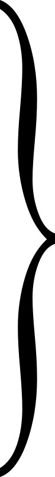 |
alle Weisheit. |
| In Gott ist | ||
| Bei Gott bestehet | ||
| Gott der Vater liebet |
Bei Gießung des andern Spiegels spricht man:
| Gott der Sohn erhält | alle Welt. | |
| Gott der Sohn erlöset | ||
| Gott der Sohn speiset |
Und bei Gießung des dritten Spiegels spricht man:
| Der heilige Geist erleuchtet | alle, die Wahrheit lieben. | |
| Der heilige Geist tröstet | ||
| Der heilige Geist stärket |
Sind die Spiegel fertig, so werden auf die Rückseite wunderliche Figuren und barbarische Wörter eingegraben; dann wird der Spiegel polirt.
Nachdem man die Spiegel, wenn der Mond neu wird, in einem Rahmen oder Kasten, ebenfalls mit Figuren umschrieben, gelegt hat, schreibt man eine Frage auf Papier, legt es unter dem Spiegel, und erfährt, was man will. Aber nur derjenige darf in den Spiegel schauen, für den er gemacht worden ist.
[S. 61]Im ersten Spiegel sieht man, was an allen Orten geredet und gehandelt wird, als: was macht der Kaiser von China? Die Antwort wird im Spiegel erscheinen. Auch erfährt man durch ihn, was in versiegelten Briefen steht.
Im zweiten Spiegel sieht man, was einem im Körper fehlt und wie ihm zu helfen sei. – Die Fragen werden aber mit des Fragers Urin geschrieben, und die Schrift mit Pulver von Vitriol und Galläpfeln bestreut, damit sie sichtbar werde. Man kann auch durch diesen Spiegel Andern die Nativität stellen.
Im dritten Spiegel sieht man alle Heimlichkeiten: Verbrechen, Diebstahl, Betrügerei etc.
Der geneigte Leser sieht nun, was er von dem berüchtigten Spiegel Salomons zu halten habe, und daß Alles auf Aberglauben, Mißbrauch des Namen Gottes und verwirrte Einbildungskraft ausgeht.
Diese vermeinte Wunderkunst hat schon im grauen Alterthum Anhänger gehabt, z. B. der Ring des Giges soll unsichtbar gemacht haben, und Apollonius von Thyana machte sich schnell[S. 62] unsichtbar, um dem Zorn des Kaiser Domitian zu entfliehen.
Viele suchen die Kraft in einem Steinchen, das sich in einem Zeisig-Neste befände, und man es durch den Schatten im Wasser, oder einen Spiegel entdecken solle. Andere suchen das Steinchen bei den Raben, wenn man nämlich einen jungen Raben aus dem Neste nimmt, ihn erwürgt, und bei dem Neste an einen Faden aufhängt; dann soll der alte Rabe wegfliegen, und das Steinchen der Unsichtbarkeit bringen, welches, wenn er es dem todten Raben in den Schnabel gesteckt hat, denselben unsichtbar mache. Deswegen soll man an den todten Raben einen langen rothen Faden binden, um ihn zu finden.
Dies ist eine unschuldige Zauberei; nicht so die folgende, auf andere Weise durch Beschwörungsformeln. – Man spricht:
Grüß euch Gott! Seyd ihr wohlgemuth?
Habt ihr getrunken des Herrn Christi Blut?
Gesegne mich Gott! Ich bin wohlgemuth,
Ich habe getrunken des Herrn Christi Blut.
Christus ist mein Mantel, Rock, Stock und Fuß. Seine heiligen fünf Wunden mich verbergen thun. Amen.
[S. 63]Gesegne mich Gott! Ich bin wohlgemuth,
Ich habe getrunken des Herrn Christi Blut.
Christus, der Herr, der die Blinden sehend gemacht und die Sehenden blind machen kann, wolle euch eure Augen ganz verdunkeln und verblenden, daß ihr mich gar nicht sehet noch merket, sondern eure Augen stets von mir abwenden müßt. Amen.
Gesegne mich Gott! Ich bin wohlgemuth!
Ich habe getrunken des Herrn Christi Blut!
Nun in Gottes Namen! ich bin in Christo reich,
Und was ich bet’ und will und greif’,
Dem bin ich in Christo gleich,
Als der Heilige im Himmelreich.
Im Namen Gottes † † †. Amen.
Hierauf bete fünf Vater Unser und den Glauben, so wirst du unsichtbar erfunden werden.
Hier ist jedoch von keinem Bösen die Rede, sondern christliche Magie, welche sich mit der kirchlichen Orthodoxie entwickelte, und zwar im 17. Jahrhunderte neben der entsetzlichsten Teufelszauberei.
[S. 64]
Sie ist eine Wissenschaft aus den Linien und Bergen der flachen Hand, ingleichen aus den Adern auf den Händen und den Nägeln an den Fingern, von des Menschen Leibes- und Gemüthsbeschaffenheit, Gesundheit und Krankheit zu urtheilen, und sein Glück oder Unglück, das ihm entweder schon begegnet oder begegnen wird, zu errathen und anzuzeigen. Sie wird eingetheilt in die physische und astrologische. Die erste hat allein mit der Beschaffenheit des Körpers und den damit verknüpften Gemüthsneigungen zu thun, die andere urtheilt von Glücks- und Unglücksfällen, Heirathen, Kindern, Freunden, Feinden u. s. w. – In der physischen Chiromantie betrachtet man die Linien in der Hand, ihre Länge, Züge, Lage, Gestalt, Abschnitte und [S. 65]Vermischungen mit einander. Auf gleiche Weise werden die Adern auf den Händen in Betrachtung gezogen. Bei den Nägeln bemerkt man ihre Länge, Breite, Farbe, Flecken u. s. w.
Der Wahrsager begründet seine Thorheit darauf, daß Gott und die Natur nichts umsonst gemacht habe, folglich müßten die Zeichen auch ihre gewisse Absicht und Bedeutung haben. – Da aber die Hände auf verschiedene Weise gebraucht werden, so erhalten sie auch verschiedene Linien. Aus der Lebenslinie urtheilt man unter andern, ob der Mensch kurz oder lange leben werde. Nun sterben aber viele Kinder bald nach der Geburt, in deren Händen sich dennoch die Lebenslinie befindet – also wozu diese Linie, wenn sie nichts andeutet?
Die astrologische Chiromantie wird daher so genannt, weil sie entweder verschiedene Dinge aus der Astrologie borgt, oder, wie diese, mit Vorhersagung zukünftiger Dinge sich beschäftiget. So giebt es nun, wie in der physischen, verschiedene Linien in der Hand, als: die Lebenslinie, Hauptlinie, Glückslinie, Tischlinie, der Liebesgürtel, die Ehrenlinie, Heirathslinie, Querlinie. – Dann giebt man Acht auf die in der[S. 66] Hand befindlichen Berge, deren man, nach den sieben Planeten, auch sieben zählt und einem jeden seinen eignen Planeten zueignet, wovon er auch den Namen führt. Dann hat man auch noch einige Flächen, die zwischen gewissen Linien eingeschlossen liegen und ihre besondern Namen haben. In der physischen Chiromantie urtheilt man hierdurch nur vom gegenwärtigen Zustande des Menschen; die astrologische allein von zukünftigen Dingen.
Was sollen nun, noch Einmal wiederholt, alle diese Linien u. s. w. gelten, wenn es Menschen giebt, welche die Heirathslinie besitzen und doch nicht geheiratet haben, Kinder, welche den Liebesgürtel haben, frühzeitig sterben, mit der Ehrenlinie der Verbrecher stirbt? – Des Spaßes wegen lasse man sich von zwei Chiromantisten aus der Hand wahrsagen, und man wird den Widerspruch und die Charlatanerie erfahren. (S. Abth. III. die Wahrsagerin.)
Wer nun noch Lust hat, ein Chiromantist zu werden, der siehe Fig. 9. und lese weiter.
Die Finger an der Hand haben ihre bestimmten Namen: der Daumen (Pulex), der Zeigefinger (Index seu demonstrativus), der[S. 67] Mittelfinger (Medius), der Goldfinger (Annularis) und der Ohrfinger (Auricularis).
Den Hügel oder Berg am Daumen nennt man Mons Veneris (♀), den Berg am Zeigefinger Mons Jovis (♃), den am Mittelfinger Mons Saturni (♄), am Goldfinger Mons Solis (☉) und am Ohrfinger Mons Mercurii (☿).
Die Linie, welche am Gelenke der Hand sich befindet, heißt Restricta; man hat bisweilen 4 Restrikten.
Die Lebenslinie (Linea Vitae) fängt bei der Mittellinie an, zwischen dem Daum und Zeigefinger, umgeht den Berg des Daumes, und läuft bis an das Ende der flachen Hand.
Die Hauptlinie (Linea Capitis, Media naturalis) fängt bei der Lebenslinie an und geht durch die Mitte der Hand bis an das Ende.
Die Tischlinie (Linea Mensalis) fängt am Berge des Ohrfingers an und geht bis zum Zeigefinger; sie hat oft viele Aeste.
Die Glückslinie (Linea Saturni) geht von der Restricta aus und bildet durch die andern Linien, indem sie dieselben durchschneidet, gewisse Flächen. Oft findet man diese Linie gar nicht, oder sie geht bis zur Mittellinie, an den[S. 68] Berg Saturn, oder sie fügt sich an die Mitte der Lebenslinie mit einigen Aesten.
Wenn diese fünf Linien in einer gewissen Proportion stehen, so erzeugen sie gewisse Flächen zwischen denselben: den Tisch der Hand (Quadrangulus oder Mensa manus), welcher zum Ohrfinger gehört; daneben sieht man den Triangel, und unter demselben den Mondberg (Mons Lunae), links vom Triangel liegt der Marsberg (Mons Martis).
Es giebt eigentlich nur 3 Prinzipal-Linien: die Lebenslinie, welche mit dem Herz, die Glückslinie mit der Leber und die Hauptlinie mit dem Hirn in Verbindung steht.
Ist nun die Lebenslinie lang und ganz, nicht zerschnitten, so bedeutet sie ein gesundes langes Leben.
Wenn die Linie des Hauptes krumm und zertheilt ist, bedeutet es Mangel an körperlicher Kraft, der Mensch ist unstät, zu guten und bösen Handlungen geneigt.
Wenn die Glückslinie lang und breit ist, bedeutet es ein glückliches Leben; ist sie zertheilt, Krankheit.
Der Triangel, wenn er drei gleiche spitzige[S. 69] Winkel hat, bedeutet einen frommen friedsamen Menschen.
Wenn der Tisch lang ist und viele kleine Linien hat, die gegen den Berg Jovis steigen, so bedeutet es Gesundheit, gutes Gemüth. Wenn aber diese Linie sich zwischen dem Zeige- und Mittelfinger endet, so bedeutet es, daß der Mensch am Haupt beschädigt werde, überhaupt Blutfluß.
Wenn die Tischlinie die rechte Hand durchgehet, bedeutet es einen bösen Menschen; ist aber diese Linie der Hauptlinie zugefügt, so hat der Mensch ein sehr unruhiges Gemüth.
Der Tisch der Hand, wenn er eng in der Mitte ist, bedeutet einen geizigen Menschen; ist aber der Tisch in der Mitte breit, so ist er ein Verschwender. Ein kleiner Tisch bedeutet einen gewöhnlichen Menschen.
Hiermit werden die neugierigen Leser und Leserinnen zufrieden sein, – denn es giebt noch eine große Zahl von Nebenlinien, besondere kleine Figuren, die alle ihre Bedeutungen haben, womit wir einen eigenen Band füllen könnten.
Des Spaßes wegen wollen wir zuletzt noch die ganzen Hände mit ihren Eigenschaften vornehmen:
[S. 70]Eine lange Hand mit langen Fingern bedeutet einen langsam trägen Menschen, einen Phlegmatikus.
Wenn die Mitte der Hand lang und hart ist, dabei die Finger lang sind, bedeutet es einen diebischen Menschen.
Ist die Mitte der Hand hart, doch wohl proportionirt, so bedeutet es ein langes anmuthvolles Leben; ist die Hand aber nicht gut proportionirt, ein kurzes Leben mit Kargheit.
Sind die Hände dünn und lang, doch nach dem Körper proportionirt, so ist der Mensch gottesfürchtig und ehrbar.
Ist die Hand kürzer, als sie sein sollte, so ist der Mensch stark und empfindlich.
Ist die Hand kurz und stark, so bedeutet es einen sündhaften Menschen, und je mehr die Finger hart sind, desto boshafter.
Wenn eine Hand lang und groß ist, doch proportionirt, so bedeutet es einen sehr vernünftigen Menschen – einen Gelehrten!
Wer lange Hände und lange kleine Finger hat, ist ein harter Mensch. Die Natur gab auch den Tyrannen lange Hände!
[S. 71]
Dies ist die sogenannte Punktirkunst. – Ehemals zeichnete man die Punkte in Sand oder Erde, jetzt auf Papier. Man schreibt sich nämlich die Frage oben auf das Blatt, damit man sie stets vor Augen hat, dann fängt man an zu punktiren, und zwar 16 Reihen ungezählt, von der rechten zur linken Hand, wie die Orientalen, und zwar so, daß zwischen den vier Reihen ein Raum bleibt. Aus jeden vier Reihen wird eine Figur gemacht. Doch solche Punktirbücher, die für sechs Pfennige verkauft werden, kennt jedermann; sie sind aber nichts weiter als ein Unterhaltungsspiel für – Spinnstuben.
Schon die Pythagoräer lehrten, daß die Buchstaben eine gewisse Zahl bedeuteten, und derjenige, in wessen Namen mehr Buchstaben oder Zahlen in der Summe wären, einen Vorzug hätte. Diese Art der Wahrsagerei hieß Sors Pythagorica. In der Folge brachten es die Christen in eine rechte Form. – Hier zur Unterhaltung etwas.
[S. 72]Man eignet den Buchstaben gewisse Zahlen zu, als:
| A | B | C | D | E | F | G | H | I | K | L |
| 1 | 2 | 3 | 4 | 5 | 6 | 7 | 8 | 9 | 10 | 20 |
| M | N | O | P | Q | R | S | T | V | X | Z |
| 2 | 12 | 22 | 4 | 10 | 24 | 7 | 16 | 4 | 20 | 1 |
Statt des W nimmt man zwei Mal V, und statt des Y das I.
Hierauf schreibt man die Taufnamen einer oder mehrerer Personen in ihrer Muttersprache auf, und nimmt statt der Buchstaben die Zahlen, welche man addirt. Die herausgekommene Summe wird mit 28 dividirt; was übrig bleibt, muß man nach den folgenden zwölf himmlischen Zeichen beurtheilen:
Rest:
1. 2. ist Beherrscher des Widders (
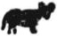
).3. 4. " des Stiers (
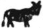
).5. 6. 7. " der Zwillinge (
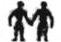
).8. 9. " des Krebses ().
10. 11. 12. " des Löwen (
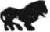
).13. 14. " der Jungfrau (
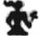
).15. 16. " der Wage (
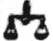
).17. 18. 19. " des Scorpions ().
20. 21. " des Schützen ().
[S. 73] 22. 23. " des Steinbocks ().
24. 25. 26. " des Wassermanns (
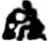
).27. 28. " der Fische (
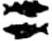
).Der Widder, Löwe und Schütze sind feurig;
Die Zwillinge, Wage und der Wassermann luftig;
Der Krebs, Skorpion und die Fische sind wäßrig;
Der Stier, die Jungfrau und der Steinbock irdisch.
Kommen nun nach geschehener Rechnung zwei Namen in Ein Zeichen, so ist es gut und bedeutet Zufriedenheit, und sind es Eheleute, so überlebt eins das andere nicht lange; sind sie uneinig, wird es bald Friede.
Fällt ein Name in ein feuriges, der andere in ein wäßriges Zeichen, so bedeutet es Zank und Unglück. Der das feurige Zeichen hat, lebt länger, als der andere.
Fällt ein Name in ein luftiges, der andere in ein wäßriges Zeichen, so ist die Bedeutung mittelmäßig. Der im luftigen Zeichen behält die Oberhand.
[S. 74]Steht einer im luftigen, der andere im irdischen Zeichen, so ist es eine ganz unglückliche Vorbedeutung, und der luftige behält die Oberhand.
Fällt ein Name in ein wäßriges, der andere in ein irdisches Zeichen, so bedeutet es Glück, und der im wäßrigen spielt den Meister.
Ein feuriges und luftiges Zeichen vertragen sich mit einander, jedoch überlebt das luftige das feurige.
Feuer und Erde vertragen sich nicht; das feurige überlebt das irdische.
Die luftigen und irdischen Zeichen sind böse; das luftige hat die Oberhand.
Wir wollen jetzt für die Liebhaber ein Beispiel angehen. Gesetzt, zwei Personen wollten sich aus den Namen weissagen lassen. Die erste hieß Otto; die Buchstaben ihres Namens geben 76, diese mit 28 dividirt, bleibt 20 und fällt in das Zeichen des Schützen, der feurig ist. Der zweite Name hieß Amalia, welcher 34 giebt und, durch 28 dividirt, 6 übrig läßt, welche Zahl in das Zeichen der Zwillinge fällt und luftig ist. – Also werden Beide sich mit[S. 75] einander vertragen; das luftige aber überlebt das feurige.
Kann man die addirte Summe durch 28 nicht dividiren, so behält man dieselbe.
Man hat noch einige andere Arten dieser Wahrsagung, aber alle laufen ebenfalls auf Spielerei hinaus.
[S. 76]
Man theilt sie allgemein in sechs Klassen:
1) Feuergeister, welche ihre Wohnungen in der obersten Luftgegend haben sollen. Sie erregen Blitz und Donner.
2) Luftgeister, welche man auch Poltergeister, Sylvane, Windleute genannt hat, sollen ihren Sitz in der Luft haben, auch Ungewitter erregen, den Menschen oft erscheinen und Schaden thun.
3) Erdgeister, die auf der Erde herumschweben, und wiederum in Wald-, Feld-, Berg- und Hausgeister eingeteilt werden.
4) Unterirdische Geister, welche in Höhlen und Bergen, besonders in Bergwerken wohnen, die in der Erde verborgene Schätze bewahren, auch Erdbeben und Winde erregen.
[S. 77]
5) Wassergeister. Diese wohnen an wasserreichen Orten, in Brunnen, Flüssen, Seen, erregen Ungewitter auf dem Meere, richten die Schiffe zu Grunde, und bringen die Menschen im Wasser um.
6) Lichtscheue Geister. Sie lassen sich niemals bei Tage sehen, sondern schwärmen des Nachts herum, machen allerhand Gepolter und fallen auch die Menschen an.
Diese Geister hält man für Geschöpfe zwischen Geister und Menschen mit einem subtilen Leib, der durch Mauern und Wände dringt, und eine lange, lange Zeit leben. –
Ein Mehreres hiervon lese man: Vom Bannen der Geister.
Sie werden oft für einerlei Geister mit den Kobolden gehalten. Sie sollen in den Schachten und Gängen auf- und abfahren, und sich in allen Arten der Bergwerks-Arbeiten zu üben scheinen, Gänge erschroten, Kübel füllen, haspeln, ob sie gleich nichts thun. Selten sollen sie den Arbeitern schaden, wofern sie nicht durch Lachen und Schimpfen dazu gereizt werden. Sie sollen[S. 78] drei Fuß hoch sein, haben ein altes ernsthaftes Gesicht mit einem Bart, ihr Kopf ist mit einem Schachthute bedeckt, worüber oft ein Schleier hängt; auch sollen sie ein Hinterleder tragen.
Die Ausdünstungen in Bergwerken schaffen den Bergleuten, wozu ihre Einbildungskraft eine menschliche Bergmannsgestalt hervorbringt, diese Phantome. Selbst ihr Licht kann durch Brechung der Lichtstrahlen in den Dünsten verschiedene Abbildungen geben.
Wir übergehen die Erzählungen von diesen Geistern.
Einige leiten das Wort von dem griechischen Worte Kobalos, Betrüger, Schmeichler – Andere von dem in dem Bergerz gefundenen Kobalt her; auch von einer Bergart, woraus blaue Farbe bereitet wird. Unter der ersten Bedeutung bezeichnet das Wort aber, was man auch ein Bergmännchen nennt. Sonst wird unter Kobold ein Hausgeist verstanden, der sich gern bei den Menschen aufhält, ihnen zur Hand geht, Arbeiten verrichtet, Possen treibt und den Menschen,[S. 79] wenn sie nicht erzürnt werden, nicht leicht Schaden zufügen.
Unter vielen Erzählungen ist der Hildesheimische Kobold, Hödekin oder Hütgen, bekannt, einige Spannen lang, mit einem großen, runden Hute.
Dieser und andere sind von Knechten und Mägden gespielt worden, daß, wenn etwas zerbrochen oder Schaden geschehen war, dieses der Kobold gethan haben mußte. Der Aufenthalt eines solchen Hausgeistes ist auch nicht von langer Dauer gewesen, wahrscheinlich aus Furcht der Entdeckung. (S. Abth. III. der Kobold.)
Auch in den Gewässern gab es gewisse Geister, die sich als Gespenster auf dem Wasser, bei den Seen und Flüssen geschäftig und sichtbar bewiesen. Sie erscheinen mehrentheils in weiblicher Gestalt, und Viele nennen sie Wassernixen, welche die Menschen zu sich in das Wasser ziehen. Wahrscheinlich ist die Fabel daher entstanden, um Kinder zu warnen, sich nicht in der Nähe des Wassers aufzuhalten. Der eigentliche Ursprung ist aus dem Alterthume, wo man[S. 80] diese Geister Nymphen, Najaden und Nereiden nannte.
Es soll so viel heißen als Wodans Heer, und ist, der Sage nach, wohl allen Lesern bekannt. Bei Eisenach, am Hörselberge, ist diese Sage allgemein gewesen.
Heftige Sturmwinde, die sich besonders zur Winterszeit stark hören lassen, machen vielerlei Getöse in Wäldern und auf Fluren; man hört Pfeifen in der Tiefe und Höhe, ein Knickern und Prasseln der dürren Baumäste u. s. w. Die Einbildungskraft, da man nichts sieht, wird nun die betrügerische Leiterin; diese hört Jagdhörner, Rosse schnauben, Rufen und Schreien (das Eulengeschrei kann mitwirken), und ohne genau zu untersuchen, entflieht der Furchtsame.
[S. 81]
Es ist eine wahre Verwegenheit oder Thorheit der Menschen, daß sie sich eine Gewalt über unsterbliche Geister, die, ihrer Natur nach, weit höher stehen müssen, anmaßen und dieselben zu ihrem Dienste zwingen wollen. Daß ein Sprung vom Menschen bis zum ewigen Wesen sein sollte, läßt uns weder die weise Ordnung hier, noch unsere Vernunft glauben. Allein die Meinung, daß höhere Wesen auf den Menschen wirken und mit ihm in Verbindung treten können, streitet schon gegen die Erfahrung, und dann gegen unsere vernunftmäßigen Vorstellungen von dem Weltall und der Beschaffenheit des Zustandes, in dem sich höhere Wesen wahrscheinlich befinden, so wie mit der menschlichen Bestimmung auf Erden und der künftigen Erreichung derselben! –
Die Magier der Chaldäer und Perser, so[S. 82] wie die alten ägyptischen Priester geben schon einen geheimen Umgang mit den Geistern vor. Die Pythagorisch-Platonische Schule zu Alexandria erfand aber recht ordentliche Mittel und Ceremonien, wodurch man zur Bekanntschaft der Geister gelangen sollte. Die Cabbalisten insbesondere zeigten uns den allgemeinen Weg, gute und böse Geister dienstbar zu machen. Sie nahmen gewisse Wörter und Sprüche aus der heiligen Schrift, besonders die darin befindlichen Namen Gottes, die sie in einer gewissen Ordnung aussprechen, aufschreiben und anhängen, wodurch sie alle Geister beschwören wollen.
Gewöhnlich werden die Geister der Planeten beschworen, welche gewisse Namen erhalten haben, und ihnen die Regierung der Welt beigelegt werden. So heißt der Geist der Sonne Michael – Der Geist des Mondes Gabriel – Der Geist des Mars Samael – Der Geist des Merkur Raphael – Der Geist des Jupiters Sachiel – Der Geist der Venus Anael und der Geist des Saturn Cassiel.
Ein jeder Planetengeist hat sein gewisses Zeichen, welches man wohl verstehen muß, weil viel darauf ankommen soll.
[S. 83]Will man nun einen Geist rufen, so wird von dem Beschwörer gefodert, daß er keinen Fehler am Körper habe, z. B. bucklich, einäugig, lahm u. s. w., oder ihm ein Glied mangele, kurz, er muß ohne Makel sein. Ferner wird gefodert, daß er fromm, ehrbar, redlich, fest im Glauben, vorsichtig, Wahrheit liebend und nicht geizig sei. Hat er sich einen Geist zu seinem Vorhaben erwählt, so soll er sich baden, neue Kleider anziehen, seine Sünden beichten, sich drei Tage allen Leidenschaften enthalten, den Armen Almosen spenden, am Abend nichts als Brod und Wasser genießen, und endlich an einem einsamen Ort, am Tage, welchem der Geist vorstehet, in der ersten Stunde, wo die Sonne aufgehet, im angehenden Monde, oder auch zu einer andern Stunde sein Werk beginnen.
Der Zauberkreis[15] wird nicht immer auf einerlei Art gemacht, wie vielleicht die Neugierigen glauben, sondern nach den Geistern, die man rufen will, nach dem Ort, der Zeit, dem Tage und der Stunde wird sich gerichtet. So muß man auch wissen, welchem Stern der Geist[S. 84] vorstehet, in welcher Himmelsgegend er ist, und was für Verrichtungen er hat.
Es werden drei Kreise von neun Fuß breit, jeder eine Hand breit von einander gemacht: 1) wird im mittelsten Kreise die Stunde, welche alle ihre besondern Namen haben, in welcher das Werk beginnen soll, geschrieben[16]; 2) der Name und 3) das Siegel oder Zeichen des Geistes der Stunde[17]; 4) der Name des Geistes, welcher dem Tage, wo man beginnt, vorsteht, nebst seinen Dienern[18]; 5) der Name der gegenwärtigen Zeit[19]; 6) der Name der Geister, die in derselben Zeit regieren[20]; 7) der[S. 85] Name des Hauptzeichens derselben Zeit, wo man den Kreis macht[21]; 8) der Name der Erde nach dem Theile der Zeit, wo man den Kreis macht[22]; 9) die Namen der Sonne und des Mondes, nach der Zeit, wo man den Kreis macht[23]; 10) in dem obersten Kreis werden in den vier Dreiecken der Name des Geistes, welcher zur selbigen Zeit der Luft vorsteht, und drei seiner Diener geschrieben[24]; 11) im untersten Kreis werden die vier göttlichen Namen mit dazwischen gesetzten Kreuzen geschrieben[25]; 12) in der Mitte des Kreises nach Osten kommt das Alpha, nach Abend das Omega mit einem durch den mittlern Kreis gezogenen Kreuz; 13) außerhalb des Kreises werden an den vier Dreiecken vier Pentagoni geschrieben. – So ist der Zauberkreis für diesen Tag fertig. Ist dieses geschehen, so wird der Kreis mit Weihwasser besprengt und eingesegnet, so wie auch das Rauchfaß[S. 86] und das Kohlenfeuer[26]. Hierauf zieht man ein Priesterkleid oder ein weißleinwandenes Oberkleid an, welches aber auch zuvor mit einigen Worten eingesegnet werden muß, und nimmt das eingesegnete Pentaculum Salomonis[27] in die Hand, welches an dem Tage und der Stunde des Mars, bei zunehmendem Monde, auf Pergament geschrieben sein muß; zuletzt ein Schwert oder einen Zauberstab, tritt in den Kreis mit noch zwei Personen, und ruft nach den vier Weltgegenden die Geister, welche den sieben Planeten, den sieben Tagen der Woche, den Farben und den Metallen vorstehen. – Erscheint nichts, so kommt alsdann die wahre Beschwörungsformel, welche wir der Curiosität wegen hersetzen wollen:
Wir nach Gottes Ebenbild geschaffen, begabt mit göttlicher Macht und Willen, durch den mächtigsten Namen Gottes, El, beschwören wir euch kraft- und wundervoll (hier werden die Namen der Geister, die man wünscht, genannt), und befehlen euch durch Ihn, welcher[S. 87] spricht und es geschieht, und durch alle Namen Gottes und durch den Namen Adonay, El, Elohim, Elohe, Zebaoth, Elion, Escerchie, Jah, Tetragrammaton, Sadai: Herr Gott, beschwören wir euch, und befehlen mit Macht euch, daß ihr sogleich erscheinet hier neben diesem Kreis in angenehmer Gestalt, in menschlicher vielleicht ohne Mißgestalt. Kommt alle als solche, weil wir euch befehlen durch den Namen Y und V, was Adam gehört und gesprochen hat; und durch den Namen Gottes Agla, was Loth gehört hat und Glück mit seiner Familie gehabt hat; und durch den Namen Loth, welchen Jakob vom Engel, der mit ihm stritt, gehört hat, und befreit wurde von der Hand seines Bruders Esau; und durch den Namen Anephexeton, welchen Aaron gehört, und die Rednergabe erhielt und weise wurde; und durch den Namen Zebaoth, welchen Moses nannte und alle Flüsse und Sümpfe des Landes Aegypten in Blut verwandelte; und durch den Namen Escerchie Oriston, welchen er nannte, und alle Flüsse voll Frösche wimmelten, daß sie in die Häuser der Aegypter kamen und Alles[S. 88] vernichteten; und durch den Namen Elion, welchen Moses nannte und solchen Hagel hervorbrachte, wie vom Anfang der Welt nicht gewesen war; und durch den Namen Adonay, welchen Moses nannte und Finsterniß über das Land Aegypten kam; und durch den Namen Alpha & Omega, welchen Daniel nannte und Beel zerstörte und den Drachen tödtete; und im Namen Emmanuel, welchen drei Männer, Sidrach, Misach und Abdenago im feurigen Ofen sangen und befreiet wurden; und durch Hagios und den Sitz Adonay; und durch ô Theos iscyros athanatos; und durch die drei geheimnißvollen Namen, Agla, on, Tetragrammaton, beschwöre ich, und durch diese Namen und alle andere Namen unseres allmächtigen Gottes, des lebenden und wahren, welcher euch durch eure eigene Schuld aus dem Himmel gestoßen bis zu dem entferntesten Orte – wir beschwören euch und befehlen euch männiglich durch Ihn, welcher spricht und es geschieht, dem alle Kreaturen gehorchen, und durch jenes Urtheil Gottes und durch die vier göttlichen Thiere, vor dem Sitz der göttlichen Majestät, vorn und hinten Augen habend, und[S. 89] durch das Feuer, welches vor dem Throne flammt, und durch die heiligen Engel im Himmel, und durch sie, welche die Kirche Gottes genannt wird, und durch die höchste Weisheit des allmächtigen Gottes beschwören wir männiglich, daß ihr hier vor dem Kreis erscheint, um unsern Willen zu vollziehen in allem, was uns gefällt: durch den Sitz Baldachiæ, und durch den Namen Primeumaton, welchen Moses nannte, und die Erde verschlang Datam, Corah und Abiron; und in der Kraft jenes Namens Primeumaton, und in dem ganzen himmlischen Heer, fluchen wir euch, berauben wir euch aller Pflicht, eueres Ortes, euerer Freude, bis ihr in den Abgrund gestürzt, und stellen euch bis zum letzten Tage des Gerichts und verstoßen euch ins ewige Feuer in den Höllenpfuhl, wenn ihr nicht sogleich bei uns erscheint, an dem Kreis, um unsern Willen zu vollziehen. Kurz, erscheinet durch die Namen Adonay, Zebaoth, Adonay, Amioran. Erscheinet, erscheinet! es befiehlt euch Adonay, Saday, der mächtige und schreckliche König, dessen Gewalt keine Kreatur entfliehen kann; ihr sollt künftig gebunden sein, wenn[S. 90] ihr nicht gehorcht und vor diesem Kreis sogleich erscheint; es öffnet sich die Unterwelt, wo Heulen und Elend und ein ewiges, nie vertilgbares Feuer euch bleibt. Erscheint im Namen Adonay, Zebaoth, Adonay, Amioran, erscheinet, erscheinet! Was zaudert ihr? Eilet! Es befiehlt euch Adonay, Saday, Rex regum, El, Aly, Titeip, Azia, Hyn, Jen, Minosel, Achadan, Vay, Vaa, Ey, Haa, Eye, Exe, a El, El, El, a Hy, Hau, Hau, Hau, Va, Va, Va, Va!
Wenn nun diese Beschwörungsformel richtig gesprochen worden, lassen sich viele und mancherlei Erscheinungen sehen, um Schrecken zu erregen, welche man aber wegbetet, bis die wahren Geister erscheinen.
Werden nun meine freundlichen Leser wohl glauben, daß durch obige Worte Geister erscheinen werden, wenn der Beschwörer nicht eine versteckte Zauberlaterne, oder einen Spiegel bei sich hat?
Die Geisterbeschwörer berufen sich auf eine Stelle in der Bibel, Marc. 11, 24., welche sie auf sich deuten: Alles, was ihr bittet in euerem Gebet, gläubet nur, daß ihr es empfahen werdet,[S. 91] so wirds euch werden. – Aber keine Geister, davon steht nichts in der Bibel!
Damit aber auch die Profanen diese und andere Zaubereien nicht lesen können, hat man ein eigenes Alphabet erfunden, welches aus besondern Figuren bestehet.
Verschiedene Manuscripte von Teufels-Beschwörungen, welche von Criminal-Gerichten den Betrügern und den Betrogenen abgenommen worden und uns zur Hand gekommen sind, beweisen die schrecklichste verwirrte Einbildungskraft. Man könnte Bände mit Unsinn anfüllen, jedoch werden wir nur einige kurze Auszüge geben, wovon man das Ganze beurtheilen mag. Zuvor sollen die neugierigen Leser und Leserinnen einige wunderbare Titel von Manuscripten lesen, woraus wir auch schon früher Auszüge genommen haben:
1) Arbatel de magia veterum.
2) Des schwarzen Cyprian Miracul- oder Wunderbuch von 1500.
3) Raziel, das alte Buch von der heiligen göttlichen Magie unserm Vater Adam, nachdem er aus dem Paradiese gestoßen; von den Engeln selbst offenbaret.
[S. 92]4) Wahre Abschrift aus dem Original-Gebet des heiligen Christophori, approbirt von dem bekannten Raphael Meyer aus der Gesellschaft Jesu.
5) Citationes der sieben Großfürsten aus dem VI. und VII. Buche Mosis Bibliae Magicae.
6) Zoroaster des Rabbi und Juden Clavis Artis. Das Original ist von dem Autore auf eine Drachenhaut geschrieben Anno Mundi 1996. Hernach aber aus dem Arabischen ins Deutsche übersetzt worden. Anno Christi 1236 durch S. V. R. et A. G.
7) Meines (Dr. Faust) Miracul- und Kunst-Buches, genannt der Dreifache Höllen-Zwang. Womit ich die Geister bezwungen, daß mir gebracht, was ich begehrt, es sei ☉ oder Silber, große oder kleine Schätze, Springwurzel und dergleichen mehr, das habe ich alles mit diesem Buche zuwege gebracht, auch die Geister wieder lossprechen können. MCCCCLXXXIII. – Das Bild, welches voran gemalt stand, haben wir zum Titelkupfer gewählt.
8) Praxis Cabala Alba et Nigra Joh. Fausti Magi Celeberrimi Leon 1689.
[S. 93]Das VI. und VII. Buch Mosis nennt die sieben Großfürsten der Hölle also:
Aziel, der Schutzgeist der Erde und des Meeres.
Ariel hat unter sich die Schätze zu Wasser und zu Land.
Marbuel hat unter sich die versetzten Schätze und hilft zu allen geheimen Wissenschaften.
Mephistophilus dient in Allem schnell zu Wasser und zu Land, und übergiebt die Pygmäen und Spiritus familiares.
Barbuel, der Fürst aller Weisheit und Schätze, Großmeister zu Wasser und zu Land.
Aziabel, Fürst der Berg- und Wassergeister und deren Schätze.
Aniquel, Fürst der Welt.
Diese Höllenfürsten werden nun jeder mit einer andern Formel citirt. Wir wollen, der Curiosität wegen, den Hauptfürsten Mephistophilus, welchen auch Dr. Faust gerufen hatte, hier einen Platz gönnen.
Zu dieser Beschwörung gehört zuerst der Gürtel Salomons, welcher 4 Schuh lang und 4 Zoll breit, auf Jungfrau-Pergament mit ungefärbter Seide genäht sein muß (Fig. 13.), [S. 94]dann ein Zauberstab von Myrrhenholz, 4 Schuh lang (Fig. 14.), und magische Kerzen von wildem Bienenwachs.
Mit diesen Attributen, in einem weißen Oberkleide ohne Knöpfe, tritt man in den Kreis und spricht folgenden Unsinn:
O Jehova † scheft vort † Eloiam sabath † vodescha † o Geist Mephistophilus † camvasta † mihi alla Gaista † bodeschka milla † o esta sal Luna † o Geist Mephistophilus Deuschka † Voiberda † mera Saturnis † beca samo † beacca † ima † infoiecte † præstant † o Elohim † in Jehova † capes adasch † nichast † Adonai † iyii † inforna præca † Aglam † mihi jam aneschia † Fevora mihi † amo celo † Patriarch † & Propheta † & Evangelista † o Mephistophilus † mia hasti † paodi † Jesus † o Caste mihy † layamm chasta Fivastis casta aliamasta Jesus † Kischaco † Festa † Alamame † infarculem moaste fia pro amo infoas, mihi pro me fede † Jehova † Amia † Jeovis † Amia Adonai † Amia Agla † Amia Adonaischcolam † Amia agimy colam[S. 95] † o Elui † o Acilam † o Immanuel † o Kirie † o Kirias eleyson, Amen.
Auf diese Beschwörung erscheint der Höllenfürst zuerst in der Gestalt, wie die Figur 15. angiebt. – Seine Abdankungsformel lautet:
O Mephistophilus † De gratias † Jesus † bene † benedictam † portam † o Mephistophilus † qua † suam † Diabolam † horas † sis Jesus † Amen.
Der Geisterfürst Marbuel erscheint, wenn er gerufen wird, in der Gestalt, wie die Figur 16. anzeigt.
Der Sage nach wird manchen Lesern Dr. Faust’s Mantelfahrt bekannt sein; wer sich nun das Vergnügen machen will, eine solche Luftreise zu versuchen, der lese, wie Faust es gemacht hat. Wir lassen ihn daher selbst reden:
»Nimm einen rothen Mantel, lege ihn auf die Erde in die Runde, und auf den Mantel lege das Zeichen (Fig. 17.). In die Hand wird ein anderes Zeichen (Fig. 18.) genommen. Alsdann gehe rücklings auf den Mantel, daß Du NB. ja gleich auf das Zeichen zu stehen kommst; stehe stille und tritt NB. mit den Füßen ja nicht fort, sonst bist Du unglücklich. Wenn Du nun[S. 96] recht stehest, so fange folgende Citation an, und melde darin den Ort, wo Du hin willst. So Du aus der Stube fahren willst, NB. so mache ja die Fenster auf, sonst bist Du verloren, denn der Geist führt Dich nicht hinaus, sondern gehet durch die Mauer und wärest unglücklich. Merke aber, daß Du das Siegel in der Hand behältst.
Citation.
Ich rufe Dich Geist Aziel Memomac, und fahre mit mir nach N, und richte mit mir aus, was ich haben will.
NB. Das sage drei Mal. Alsdann sage ferner:
O Du erhöre mich † Jehova Ascher Kadosch pecol Kedoschim, daß ich fahre, durch den Geist Aziel an Ort und Stelle gebracht werde.
Nun wird sich der Mantel erheben, und Du wirst gebracht werden, wohin Du willst.«
Der Höllenfürst, welcher den Mantelfahrer durch die Lüfte führt, hat die Gestalt, wie die Fig. 19. zeigt.
[16] z. B. die erste Stunde am Sonntag im Frühjahr heißt Yayn.
[17] Der Name des Geistes der Sonne ist Michael. Das Zeichen s. Fig. 11, wo die Siegel der sieben Geister stehen:
a) Siegel des Geistes Michael.
b) " " " Gabriel.
c) " " " Samael.
d) " " " Raphael.
e) " " " Sachiel.
f) " " " Anael.
g) " " " Cassiel.
[18] Michael, Dardiel, Huratapel.
[19] Talui (Frühling).
[20] Die Geister des Frühlings: Caracassa, Core, Amatiel, Commissoros.
[21] Das Hauptzeichen des Frühlings ist: Spugliguel.
[22] Amadai.
[23] Abraym, Agusita.
[24] Varcan rex, Tus, Andas und Cynabal.
[25] Adonai, Eloy, Agla, Tetragrammaton.
[26] Für jeden Geist muß man auch ein eignes Räucherpulver haben; für Michael Sandelholz.
[S. 97]
Es ist wohl beinahe kein Ort zu finden, wo man nicht von vergrabenen Schätzen zu reden weiß. Denn wo des Nachts ein Licht brennt oder leuchtet (d. i. ein Irrlicht, ein leuchtender Wurm, oder ein faules Holz, welches leuchtet), da muß, nach der Meinung der Schwachen, auch ein Schatz liegen. – Die Schätze bestehen gemeiniglich in Gold, Silber und Edelsteinen, und es mögen viele Menschen in Kriegszeiten ihr Vermögen vergraben haben und sind, ohne Jemanden etwas davon zu sagen, gestorben. Aber was von Braupfannen, Kesseln und eisernen Kasten voll Geld gefabelt wird, wer wollte so viel vergraben haben, und zwar ohne Beihülfe anderer Leute?
Das sogenannte Schatzlicht ist besonders am Johannistage zu sehen, und so wie man es[S. 98] erblickt, soll man einen Erbschlüssel, oder einen Kreuz-Dreier auf den Schatz werfen, damit er nicht verschwinde, oder entweichen kann. Oder man sucht den Schatz durch die Wünschelruthe. Andere haben wieder eine andere Procedur: Man nimmt eine große Kerze von Menschenfett, und setzet sie in ein Stück Haselholz; wenn nun dies Licht an einem Ort unter der Erde angezündet wird, daß es oftmals kracht und einen hellen Schein von sich giebt, so ist es ein Zeichen, daß ein Schatz dasteht. – Ist nun der Ort des Schatzes ungefähr gefunden, so müssen die Geister citirt werden, welche den Schatz anweisen und überliefern. Der Schatzsucher muß auch ein neues Hemd von ungewaschener Leinwand, von einer reinen Jungfrau verfertigt, angezogen haben; ein Todtenkopf muß auch dabei sein, der Daumen von einem Gehenkten und – was des tollen Zeugs mehr ist.
Oft wird aber auch der ganze Schatz in Kohlen und Hobelspäne verwandelt, und der Herr Schatzgräber hat dann eine gute Entschuldigung, sich aus der Schlinge zu ziehen. (S. Abth. III. Schatzgräberei.)
Die Schatzgräber haben aber auch dafür ein[S. 99] Mittel: Man nehme Weihrauch und Myrrhen, beräuchere das Verwandelte damit, und spreche die Formel:
Jesus Christus, gestern und heut, vertreibe den Geist vom Geld, in Ewigkeit, Amen.
Hierauf muß folgende Beschwörung drei Mal gesprochen werden:
O Jehova Amasalm hischacolam Jesus Maaschii Christe Nazarenus Rex, Elohim Judaeorum, Adas Kipis, Jesus hocordam, Schacor, Diabolam, Christe benedictam.
Dann taufe man das Geld mit Taufwasser.
So Du einen Schatz heben willst, sagt Dr. Faust, und dazu kommst, so schreibe diese Worte darauf, es sei nun ein Kessel, oder etwas anderes, so kann es nicht verrücken:
Oder steht das Geschirr weit außen, daß Du besser dazu kommen kannst, so schreibe diese Worte darauf:
Damit die Geister den besetzten Schatz verlassen[S. 100] müssen, muß man die Figur 20 haben. Sie wird bereitet an einem ♃ in den ♃ X, auf ♄ welches dünn geschlagen und lege es neun Tage lang an einen Ort, wo ein Schatz verborgen liegt, so werden die Geister alsobald davon weichen müssen, und Du kannst ihn ohne alle Gefahr herausnehmen.
So Du gewiß einen Platz weißt, wo ein Schatz liegt, so gehe dahin im Vollmond, nimm drei Hände voll Erde im Namen der heiligen Dreifaltigkeit, im Namen Gottes d. V. eine Hand voll, im Namen des S. und eine im Namen des heil. G. Thue es in ein Kelchtuch, mit welchem der Communion-Kelch getrocknet worden, verwahre es in einem saubern Zimmer bis auf den Neumond; wenn nun der Neumond selben ☌ ist eingetreten, mache den Kreis mit Deiner rechten Fußspitze und sprich:
Schatz vergraben nebst allem Gut, ich bitte Dich durch Christi Blut, daß Du mußt stille stehen und nicht wieder gehen, weder in die Tiefe noch auf eine Seiten, die Dreieinigkeit Gottes wird meinen Wunsch begleiten † † †.
Hierauf werden mit dem Stabe noch neun Kreise um sich gezogen. In den Kreis stelle man[S. 101] einen Tisch, auf denselben die Lichter und drei Kessel im Dreieck, worunter drei Knöpfe kommen, um hohl zu liegen, darunter kommen die drei Häuflein Erde, hernach das Evangelium St. Johannes, welches auf ein Pergament geschrieben sein muß.
Es müssen aber nur drei Personen, im Namen der heil. Dreieinigkeit und ein jeder mit dem Bildniß des heil. Erzengels Michael angethan sein, in den Kreis treten; von Einem nur muß die Beschwörung geschehen. Die übrigen zwei Personen beten den Psalm de profundis; übrigens sollen auch diejenigen keine großen Sünden auf sich haben. Derjenige, welcher den Geist beschwört, muß die Summa des Geldes, ob es ☾ oder ☉ sein soll, auch den Schlag und Münze, ob es dem Wasser oder der Erde sein soll, begehren. Es muß derselbe mit einer Reliquie gefaßten Kreuz versehen sein, und so oft in einer Beschwörung ein † aufgezeichnet ist, über ihn und seine Gesellen das † machen. Das allerbeste Particul ist des heil. Ignatii der Societät Jesu, oder von Innocens XI. – so ist man von allem Schrecken befreit.
Fängt man an zu graben, so muß an den[S. 102] Stiel der Schaufel folgendes mit Blut von einer schwarzen Katze geschrieben werden:
Ist der Schatz gefunden, so muß man ihn vier Wochen ruhen lassen, ohne ihn zu besehen. Dann nehme man drei Griffe Geld heraus, den einen giebt man dem ersten Bettler, den zweiten der Kirche und den dritten dem Armenhause, und theile alsdann den Schatz friedsam unter sich. –
Unsere Erklärung über die ganze Schatzgräberei s. Abth. III. Entdeckung der Geisterbeschwörer zu Anfang des 19. Jahrhunderts.
[S. 103]
Zweite Abtheilung.
Wer leicht glaubt, wird leicht betrogen!
[S. 105]
Wir könnten Bände füllen, um alle die Albernheiten aufzuzählen, welche die Abergläubischen in allen Lebensverhältnissen anwenden: bei Hochzeiten, Kindtaufen, Begräbnissen, im Hauswesen, in der Oekonomie, bei Naturerscheinungen u. s. w. Wir begnügen uns mit dem allgemein Bekannten und werden schon daran genug haben.
So viel Mal nun dieser Vogel schreit, so viel Jahre soll einer leben. – Welche Narrheit! Wer nun alle Jahre jenes fragt, der wird den Gukkuk 5, 10 bis 15 Mal hören, jedes Jahr mehr oder weniger.
[S. 106]Der Name Beckenknecht oder Bäckerknecht soll aus folgendem Märchen entstanden sein:
Ein Bäckergeselle hätte in theurer Zeit den armen Leuten von ihrem Brodteig gestohlen, und wenn er vom Teig ein Stück abgezupft und ihn wieder in den Backofen geschoben, gesagt: Gukkuk! Worauf ihn Gott bestraft und in diesen Vogel verwandelt hätte.
Das ist wahr, denn man tritt es mit den Füßen an und bringt es auf reine Stellen; und überhaupt, wo Kehrig liegen bleibt, daß man darüber gehen muß, zeigt keine gute Hausfrau an. Allein die abergläubischen Weiber meinen: man habe kein Glück.
Der Abergläubische meint, die Augen der Engel im Himmel würden mit den Fingern verletzt. – Es ist schon unschicklich, auf Jemand mit Fingern zu deuten, und deshalb wird es[S. 107] den Kindern verboten. – Rungius, im ersten Stück seiner morgenländischen Fragmente für die Bibel 1783, S. 54, erzählt: Zwei Kaufleute in Persien hatten sich einst, um den König Sefi zu sehen, an die Straße gestellt, wo er vorbei mußte. Als er sich ihnen mit seiner Begleitung näherte, bat der eine seinen Freund, ihm den König zu zeigen, weil er ihn noch nicht kannte. Dieser, der ihn oft gesehen hatte, zeigte ihm denselben mit Fingern, damit er ihn von andern Herren unterscheiden möchte. Kaum aber hatte er dieses gethan, so kamen einige Reiter, von welchen einer ihm die Hand abhieb.
Das ist wahr! Besser ist es, einen Kessel voll Karpfen darauf stehen zu haben. Allein die Weiber sagen: wenn der Rost frei auf dem Feuer stehen bliebe, würde diejenige, welche es gethan, runzlicht und alt. Es ist also kein Wunder, daß diese guten Weiber den Dreifuß schnell umstürzen, wenn sie die Speisen davon genommen haben. Ein alter Dichter aber sagt:
[S. 108]
Man erbitte sich von einem Freunde Morgens, am Fastnachtstage, ein Stückchen rohes Fleisch, nehme dieses in den Mund, gehe zu einem jungen Weidenbaume, bohre ein Loch in den Stamm, lege das Fleisch mit der Zunge in das Loch, mache es wieder mit der Schale zu, und gehe davon. Man darf aber nicht wieder dahin kommen. Das Fleisch verwächst und der Kropf bleibt am Halse. Probatum est!
Das Schuhwerfen geschieht also: Das Mädchen[S. 109] setzt sich in der Christnacht in die Stube auf die Erde, den Rücken nach der Thür zugekehrt, und schleudert nun den Schuh vom Fuße über den Kopf weg. Hierauf giebt sie Acht, wie der Schuh liegt: ist die Spitze desselben nach der Thür zugekehrt, so ist es ein Zeichen, daß sie bald von ihrer Herrschaft abziehen werde; liegt aber der Schuh mit dem Absatze nach der Thür zu, so bleibt sie. – Dieser Glaube nun verursacht, daß es wahr wird. Glaubt sie bald abzuziehen, so wird sie auch ihre Arbeit vernachlässigen und die Herrschaft sie fortschicken. Glaubt sie, daß sie bleiben werde, so wird sie sich beliebt zu machen suchen, und die Herrschaft, mit ihr zufrieden, miethet sie aufs Neue.
Dadurch soll das Kind zeitlebens keinen Mangel am Brode haben. – Dieses ist vermutlich ein Mißverstand der Worte des Predigers 11, 1.: »Laß dein Brod über’s Wasser fahren, so wirst du es finden auf lange Zeit.«
[S. 110]
Sie muß am heiligen Christabend, in der Mitternacht, an das Hühnerhaus klopfen und sagen: »Gackert der Hahn, so krieg’ ich einen Mann; gackert die Henn’, so krieg’ ich kenn’ (keinen).« – Wenn nun durch das Klopfen Hahn und Hühner auf Einmal gackern, was doch wahrscheinlich sein kann: was soll nun das arme Mädchen glauben? – Die Thoren!
Kinder sind Affen; wo Militär ist, werden auch öfters die Kinder kriegerische Spiele vornehmen.
Der Klee (Trifolium) hat drei Blätter, und nur ein Spiel der Natur (Lusus naturæ) giebt vier Blätter, so wie man so viele monströse Gewächse hat. – Da aber dieses vierblättrige Blatt[S. 111] nicht oft gefunden wird, so hat nur derjenige von Glück zu sagen, der es findet. Ein Anderer muß lange darnach suchen.
Das wär für die gern sich putzenden Damen, zum Ball, Theater u. s. w. nicht gut, auch dürften sie in kein Spiegelzimmer treten. Doch keine wird noch etwas Böses im Spiegel gesehen haben, als sich selbst – es müßte denn der Hoffarths-Teufel sein.
Man nimmt von den Haaren eines todten Esels und macht daraus eine Schnur; dann nimmt man das Mark aus dessen Hauptbein der rechten Schulter, vermischt es mit Jungfernwachs, bestreicht damit die Schnur, und legt sie dann über die Hausschwelle, so werden die Menschen, welche in das Haus treten, aussehen, als hätten sie drei Köpfe. Diese aber werden den Verfertiger der Schnur für – einen Esel halten. Probatum est! De mirabilibus Albertus M.
[S. 112]
Wenn man das Tuch, womit ein Jäger seine Büchse oder Flinte putzt, in ein in einer Eiche gemachtes Loch, welches gegen Morgen gerichtet sein muß, steckt, das Loch mit einem Pflock von Hagedorn verstopft, so kann der Jäger, als bester Schütze, keinen gewissen Schuß thun. Daher sollen die Jäger ihre Putzlappen ins fließende Wasser werfen.
Ist hier wohl eine natürliche Verbindung zu finden?
Wer sollte sich auch gern ohne Kopf sehen! Dies kann man aber jeden Tag, wenn man zwei Lichter in die Stube bringt. Auch hat der Schatten dadurch oft zwei Köpfe.
Zufällig kann es einige Mal eingetroffen haben; allein daß man durch das Auslöschen eines[S. 113] Altarlichtes den Tod eines Geistlichen prophezeihen will, ist unvernünftig und lächerlich. Wie leicht kann ein Zugwind das Licht ausblasen, oder im Winter bei großer Kälte, wo des Lichtes Flamme nicht genug Kraft hat, das Wachs zur Nahrung zu schmelzen, sie erlöschen muß. Die Kirchner werden noch mehr natürliche Ursachen angeben können.
Das Johannis-Kraut (Hypericum perforatum) hat eiförmige und durchlöcherte Blätter, welche der Aberglaube dem T... machen läßt, da man nach den Zeiten des Paracelsus dieses Kraut für Milzsüchtige gut fand, und es Daemonum fuga, Teufels-Scheu, nannte.
Freilich ist ein gebratener Hase in der Schüssel besser! – Was sollte aber der arme Hase[S. 114] Schuld haben, wenn einem etwas Unangenehmes begegnete!
Wenn man umkehrt, sollen die Verrichtungen nicht gelingen. – Es ist zwar besser, man vergißt gar nichts; aber wenn es geschehen und man unterweges auf jemand warten soll, bis er das Vergessene nachbringe, so verliert man Zeit und hat oft Schaden davon.
Dieser Aberglaube ist daher entstanden, daß man vielen alten Weibern Hexerei Schuld gab. Es mag einem aber ein altes oder junges Weib begegnen, die Geschäfte werden nie anders.
[S. 115]Diese Narrenpossen werden noch jetzt in vielen Ländern getrieben, und manches gute Mädchen hat sich sehr betrogen gefunden, denn wer leicht glaubt, wird leicht betrogen; sie sieht in den zerrissenen Stücken Blei immer gern das, was sie wünscht. – Auch ziehen die abergläubischen Mädchen in der Christnacht rückwärts ein Scheit aus einem Holzstoß, um zu erfahren, ob ihr Zukünftiger lang oder kurz, krumm oder gerade sein werde.
Dies ist wohl eine alte Bauern-Regel; wenn der Mond in der Christnacht hell scheinet, so soll das Jahr fruchtreich und die Scheuern voll und finster sein; wenn aber Neumond und trübes Wetter ist, sollen die Scheuern nicht voll werden. – Der alte Julianische und der neu verbesserte Kalender weichen von einander ab, folglich, da diese und andere Bauern-Regeln schon alt sind, kann es auch jetzt mit der richtigen Zeit nicht eintreffen, welches also die Unrichtigkeit[S. 116] schon darin beweiset, denn einige Erfahrungen machen noch keine bestimmte Regel.
Wenn man dem Todten etwas von einem Lebendigen in das Grab legt, soll Letzterer nicht lange leben. Dieser Aberglaube ist noch nicht erloschen, und sonderbare Beispiele werden davon erzählt. Aber es geht wohl natürlich zu. Derjenige, dem die Sache gehört, welche in das Grab gelegt worden, und an die Fabel glaubt, wird durch seine Einbildung sich selbst bald in das Grab bringen, ohne daß der faulende Todte daran schuld ist.
Wenn man Korn oder Waizen, das man zum Saamen bestimmt hat, aus Noth mahlen und backen läßt, so kommt er freilich auf den Tisch, und die Aussaat ist gehindert. Dies mag ein Spaßvogel gedacht haben, und andere nahmen es ernsthaft auf.
[S. 117]
Dies ist wahrscheinlich dadurch entstanden, daß die meisten Bettelkinder große Fertigkeit im Sprechen haben, um ihr Brod zu erbetteln, und dies Brod soll nun die Eigenschaft erhalten, andere wieder bald reden zu machen!
Man glaubt, es nehme den Kindern die Ruhe. Der Ursprung dieses Aberglaubens ist schwer zu suchen. Vielleicht mag es daher kommen: Jemand, welcher im Zimmer steht, ist oft der Hausfrau hinderlich, und macht mehr Geräusch, als der Sitzende, wodurch das schlafende Kind gestört wird.
Die Landleute machen folgendes Experiment: Wenn sie anfangen zu dreschen, nehmen sie die[S. 118] erste Garbe aus der Scheuer (Andere nehmen auch die erste Garbe, die auf dem Felde gebunden worden ist), dreschen das Korn aus, und nehmen dann ein Gefäß, machen solches voll Korn, streichen es ab und schütten es auf den Tisch, welches das erste Vierteljahr bedeutet. Dieses Gefäß messen sie vier Mal. Wenn dieses geschehen, nehmen sie den ersten Haufen und schütten es wieder in das Gefäß und streichen es abermals ab. Wenn nun etliche Körner abfallen, so bedeutet es ein wohlfeiles Vierteljahr; streichen sie aber nichts ab, so wird das Korn aufschlagen. Auf diese Weise machen sie es mit den übrigen drei Haufen. – Kann sich aber bei Messung des Korns nicht zutragen, daß man nicht immer gleich abstreicht? daß man an den Tisch stößt, und bald etwas mehr oder weniger hat? Man mache nur den Versuch zur Ueberzeugung und lasse noch Einige dies Experiment machen, – wie verschieden wird die Weissagung ausfallen!
[S. 119]
Viele Weiber werden nicht einmal das Jüdel kennen, und doch treiben sie damit Aberglauben. Kleine Kinder von wenig Wochen thun oft während des Schlafes die Augen halb auf, und die Augenäpfel wenden sie in die Höhe, fangen an zu lächeln und schlafen dann wieder fort, oder schreien. Wenn dieses geschieht, sagen die Abergläubischen: »das Jüdel spielt mit dem Kinde.« Um dem Kinde Ruhe zu geben, machen sie Folgendes: Sie kaufen, ohne zu handeln, einen kleinen, neuen, irdenen Topf mit einem Quirl, darein wird etwas von des Kindes Badewasser gegossen und auf den warmen Ofen gesetzt, damit soll das Jüdel spielen und das Wasser herausspritzen. Nach einigen Tagen finden sie kein Wasser mehr im Töpfchen und glauben, das Jüdel habe es herausgespielt, ohne zu untersuchen, daß es durch den warmen Ofen eingetrocknet ist. Ferner blasen sie Eier in des Kindes Brei und in die Suppe der Mutter aus, und hängen dann die hohlen Eierschalen mit einigen Kartenblättern mit Zwirn an des Kindes[S. 120] Wiege, daß alles frei schwebet. Wenn nun die Stubenthür aufgeht, oder es bewegt sich Jemand rasch in der Stube, daß die leichten Sachen sich bewegen müssen, da rufen die alten Weiber: Seht, wie das Jüdel mit den Sachen an der Wiege spielt! – Welche Albernheiten! und doch geschehen sie! Das Kind aber wird fort die Augen verdrehen und lachen und weinen, ohne das Spiel des Jüdels. Man gebe dem Kinde, welches Krämpfe hat, eine dienliche Arznei, und das alberne Jüdel verschwindet gewiß.
Man soll es, wenn der Sirius sich sehen lasse, so daß Mond und Sonne einen nicht bescheinen, und zwar mit der linken Hand aus der Erde mit einem eisernen Instrumente graben. Die Griechen nennen dies Kraut Peristecon, die Römer Verbena, und wurde für ein heiliges Kraut bei den Opfern gehalten; doch unser Eisenkraut ist es nicht, daher wir auch das Experiment nicht machen können.
wird geholt am heiligen Abend zwischen 11 und[S. 121] 12 Uhr, aber stillschweigend. Es soll sich lange aufbewahren lassen und, damit gewaschen, eine feine Haut machen. – Jedes Wasser, das im Frühlinge, und wenn die Sonne nicht scheint, geschöpft wird, hält sich länger und ist weicher, als das zur andern Zeit und im Sommer geschöpfte.
Das Richtschwert, welches gewöhnlich in einem Schranke an einem Nagel hängt, fängt an sich hin und her zu bewegen. – Der Scharfrichter erfährt schon eine zeitlang vorher, wenn auch nicht direct durch das Gericht, sondern durch Hörensagen, daß ein Gefangener zum Tode verurtheilt werde, und er und die Seinigen, welche von den Urältern her jene Sage glauben, werden auch, in ihrer Einbildung, das Schwert sich bewegen sehen oder hören. – So soll auch der Todtengräber und der Tischler, der Särge macht, zuvor wissen, wenn Jemand stirbt.
Welcher Unsinn! Kann man wohl glauben,[S. 122] daß Worte durch Kälte erhalten, oder in ein gewisses Behältniß eingeschlossen und zu seiner Zeit wieder gehört werden können! Was für eine Kälte müßte das sein, und sollte der Mensch nicht zuerst erfrieren? Wie sollte aber auch die Luft gefrieren können? – Man hat dieses Märchen vielleicht vom Ovid. Metamorph. L. II, 4. genommen, wo der Schilf die Worte hören ließ: Midas hat Eselsohren.
Aus einem Ei, welches ein zehnjähriger Hahn legen und von einer Kröte im Miste ausgebrütet werden soll, soll ein monströses Geschöpf, der Basilisk, entstehen, welcher sich in alten Höhlen, Brunnen und Gemäuern aufhält. Es soll existiren, weil es die Bibel selbst sagt, Esaiä 59, 5. und Jeremias 8, 17. – Viele Gelehrte haben in den ältern Zeiten über dieses fabelhafte Thier geschrieben, nur Einige haben es verworfen.
Dieser Basilisk soll mit seinen Augen die Menschen tödten und alles um sich her mit seinem[S. 123] Hauche vernichten können; so bald er sich aber selbst sieht, stirbt er. – Er wird auf verschiedene Weise beschrieben, da ihn wohl Niemand lebendig oder todt gesehen haben wird, außer in einem Bilde, von Betrügern gemalt. Er soll die Größe eines Huhns haben, Kopf und Hals gleiche einem indianischen Hahne, Kamm und Hals sei gelbblau, der Leib und die Flügel gelb, blau, roth und grün gesprengt, habe lange gelbe Füße wie ein Hahn, und einen aufrecht stehenden, gekrümmten, gespitzten und gesprenkelten Schwanz.
So zeichneten auch die Alten ihre fabelhaften Thiere.
Im Jahre 1671 zeigte ein Herumstreicher einen Basilisken, der in Afrika mit Feuer getödtet worden sein sollte, und Gelehrte, wie Happelius und Dr. Wedel in Jena, beschrieben das Thier; aber nachher erfuhr Letzterer in Hamburg von dem Besitzer selbst, daß der Basilisk ein gekünstelter gewesen sei.
Wenn dieses Insekt hinter alten Tapeten oder Getäfel, gleich einer Uhr in abgemessenen[S. 124] Schlägen, pickt, dann denkt der Abergläubische an Unglück und Tod. Linnæus nennt diesen Wurm Termitem fatalem, und ist die bekannte Papierlaus oder Bücherstaublaus.
Unter den schmatzenden Todten versteht man gewisse todte Körper, weiblichen Geschlechts, welche, wenn Seuchen grassiren, ihre Grabtücher, Todtenhemde und andere Leichengeräthe belecken und dabei schmatzen und, so weit sie mit dem Munde reichen können, alles verzehren. Und dies soll geschehen, wenn man dem Verstorbenen den Daumen nicht aus der Hand gethan, oder den Mund nicht unbedeckt gelassen.
Das Schmatzen (vielleicht Pochen) im Grabe kann nur von einem lebendig Begrabenen oder von andern natürlichen Dingen, wie nachstehende Erzählung beweiset, herrühren.
In Angerburg ließ sich ein Schmatzen auf dem Gottesacker hören. Es kamen viele Menschen, um ihre Neugierde zu befriedigen, dahin. Sie hielten ihre Ohren nahe an ein Grab, aus dem das Schmatzen seinen Ursprung haben sollte,[S. 125] bis sich endlich zeigte, daß es eine Wirkung junger Eulen sei, die in einem Mauerloche der Kirche, welche nahe dabei war, befindlich waren.
Sie haben mit den obigen Verwandtschaft. Man versteht darunter todte menschliche Körper, welche aus den Gräbern steigen, den Lebendigen das Blut zur Nacht aussaugen und sie dadurch tödten sollen. Unter den Raizen, Serviern ist dieser Aberglaube stark. Einem solchen Vampyr durchstößt man das Herz mit einem spitzigen Pfahl und verbrennt den Körper.
Vernünftige Personen haben noch jetzt den Aberglauben, mit 13 Personen nicht an Einem Tische zu essen, aus Furcht, einer unter ihnen möchte in wenigen Monaten eine Beute des Todes werden. – Dies kann immer geschehen, ohne daß die arme Zahl daran schuld ist.
Ist es wohl glaubhaft, daß die sogenannten Exorcisten, namentlich die Jesuiten, Kapuziner[S. 126] u. a. m. ihre Worte, welche sie zu Beschwörungen herplauderten, verstanden, und daß dieselben eine Kraft haben sollen? – Man höre nur die barbarischen Worte: Theos Patir Heminas per Archangelos Tuos Eliphamasi Gelonucoa, Gebeche Banai Grabiai Elomnit u. s. w.
Um die Hexe, welche das Vieh beschrieen hat, kennen zu lernen, macht der Abergläubische mit dem Pfahleisen ein Loch in den Kuhstall, melkt die Kuh, indeß er das Eisen glühend macht, gießt dann die Milch in das Loch, und buttert mit dem glühenden Eisen so lange, bis die Hexe kommt, welche, wie er glaubt, während diesem Buttern so sehr gepeinigt wird, daß sie nicht weiß, wohin. Dann soll sie in der Angst kommen, und etwas verlangen, um dadurch das Buttern zu verhindern. Man macht daher den Hof und die Thüren fest zu, damit sie nicht herein kann. Mancher ist dadurch in den Hexenverdacht gekommen, daß er zufällig gerade zu der Zeit an ein Haus kam, da dergleichen Alfanzerei getrieben wurde.
[S. 127]
Es soll eine Menge Kinder sein, welche in den Wochen gestorben, ehe sie zur heiligen Taufe gelangen konnten, und daher unwürdig seien, im Himmel aufgenommen zu werden, und hielten sie sich bald da, bald dort unter vielem Winseln und Seufzen in der Luft auf. Sehr oft will es der Pöbel gehört haben. – Im Virgil Aen. VI. v. 435. steht etwas ähnliches.
Diesen Aberglauben mag nachfolgende Erzählung widerlegen.
Einst wollte ein Edelmann wissen, ob er eine mit Dornen und Stechbeeren bewachsene Haide urbar machen solle. Er ließ also die heilige Schrift den Anspruch bestimmen und traf auf die Stelle Jeremiä 10, 19: Ich denke aber, es ist meine Plage, ich muß sie leiden. So unterblieb das nützliche Vorhaben.
[S. 128]
Eine Kornblume mit der Wurzel ausgezogen und diese in der Hand gehalten, bis sie erwarmt, stillt das Nasenbluten. – Dieses wird von selbst geschehen, wenn man so lange Zeit wartet.
Wenn man einen kleinen Vogel, den Zaunkönig, oder ein kleines Stück Fleisch an einen Haselstock steckt und diesen als Bratspieß gebraucht, dreht sich der Stock von selbst über den Kohlen. – Dabei ist aber weder der Vogel, noch das Fleisch schuld, sondern das Holz zieht sich von der Hitze natürlich zusammen und – dreht sich.
Der Alp soll eine Hexe, wohl gar der Teufel selbst, oder irgend ein Gespenst sein. Er kommt durch das Schlüsselloch in das Schlafzimmer, wirft sich auf die Bettdecke, zieht sie auch wohl gar herab und peinigt den Schlafenden. – Lebhafte und schreckhafte Träume erzeugen im[S. 129] Körper ein Zusammenziehen der äußern Theile, krampfhafte Zufälle, Erstarrung u. s. w. Vollblütigkeit, das Liegen auf dem Rücken, das niedrige Kopfliegen, Ueberladung des Magens erwecken jene ängstlichen Träume und – das Alpdrücken. (S. Nicolai Pathologie, VI. Bd. S. 180 ff.)
Dr. Joh. Dolæus erzählt in den Medizinisch-chirurgisch-anatomisch-chymisch- und botanischen Abhandlungen Tom. V. Wahrnehm. LXI.:
Da ich mich an dem Hofe der Durchlauchtigsten Fürstin von Nassau-Diez aufhielt, so erzählte mir der berühmte Dr. Geilfuß, es seie ihm jemand bekannt, der lange Zeit an dem Schenkel mit einer Fistel beschwert gewesen, woraus verschiedene Dinge, als Leinwand, Stückchen Papier, Haare u. s. w. hervorkamen. Man habe vielerlei Arzneien, aber vergeblich, gebrauchet; endlich habe sich ein Mensch, den der Pöbel für einen Zauberer hielt, angegeben, und das Geschwür in Kurzem zu heilen versprochen. Als man ihm nun die Cur anzufangen erlaubt, so habe er ein aschfarbiges Pulver in die Wunde[S. 130] gestreuet, und blos dadurch den Kranken in wenig Tagen geheilet. Dr. Geilfuß versicherte mir, es sei dieses Pulver nichts anderes, als Asche von einer verbrannten Hexe gewesen.
Solche Dinge glaubten damals auch gelehrte Männer!
[S. 131]
Dritte Abtheilung.
von
Geister- und Gespenster-Erscheinungen,
mit hier und da
eingestreuten natürlichen Erklärungen.
Verba movent, Exempla trahunt.
[S. 133]
Plinius Secundus Epistol. lib. 7. p. 252. erzählt seinem Freunde Sura eine Geschichte von einem Hause in Athen, welches von einem Geiste auf eine erschreckliche Art wäre bewohnt worden, und hätte leer gestanden, bis endlich der Philosoph Arthenodorus hineingezogen, den Poltergeist erwartet habe, und ihm bis in den Hof gefolgt, wo er verschwunden sei. Den Ort habe er gemerkt, diesen der Obrigkeit angezeigt und aufgraben lassen, wo man denn die Gebeine einer Person gefunden hätte, welche in Ketten gelegen, und die er habe begraben lassen; worauf das Haus nicht mehr beunruhigt worden wäre.
[S. 134]Mehrere Schriftsteller haben Plinius nachgeschrieben, obgleich er selbst sagt, ex ponam ut accepi (daß er das Erzählte gehört habe), und folglich bleibt die Geschichte ein Märchen!
Der Rektor Gottfried Vockerodt in Gotha, der 1727 starb, hinterließ einen Sohn, welcher in Halle studirte. Dessen Mutter und Schwester wohnten noch in Gotha. Einstmals, da beide in der Stube sitzen, hören sie, daß jemand mit starken Schritten die Treppe herauf kömmt. Die Mutter geht hinaus, und erblickt ihren Sohn, der sich vor sie stellt, aber zu ihrem Schrecken eine große Wunde in der Brust hat, aus der das Blut hervorströmt. Da sie ihn anreden will, sinkt er vor ihr nieder und verschwindet. Am folgenden Tage erhält sie durch einen Boten die Nachricht, daß ihr Sohn um dieselbe Stunde, da er ihr erschienen war, auf der Saalbrücke in Halle erstochen worden sei.
[S. 135]Diese Erscheinung ist wegen der dabei eingetroffenen Umstände, als wichtig für den Geisterglauben, anzusehen; jedoch ebenfalls, wie alle andern, wo historischer Beweis der Thathandlung und die Glaubwürdigkeit der Zeugen fehlen, widerlegbar. Auch sind vorhergegangene Umstände der Mutter nicht berührt worden, welche fähig gewesen sein können, diese Vision zur Wirklichkeit zu bringen. Konnte nicht ein Landsmann der Mutter kurz vorher von ihres Sohnes bevorstehendem Duell Nachricht gegeben haben, und sie sich mit gewissen Vorstellungen gequält, bis sie jene Vision hatte, zu welcher Zeit ihr Sohn zufällig erstochen wurde. – Warum erschien das Gespenst nicht sogleich in der Stube, und machte erst Geräusch eines Kommenden, das die Mutter dann allein sahe?
Dr. Jung, genannt Stilling, erzählt in seiner »Theorie der Geisterkunde, Nürnberg 1808.« eine ihm merkwürdige Geschichte. Dieser sonst würdige Verfasser hat indeß mit seiner Theorie[S. 136] gezeigt, daß er ein Schwärmer und der abergläubigste Kopf sei; er hat alles frischweg geglaubt und so leider! dem Publikum wieder gegeben. – Seine Wahrheit sucht er besonders auf Glaubwürdigkeit der Personen zu stützen, die es erzählt haben, oder denen es selbst geschehen ist. Von vielen solchen abergläubigen und unsinnigen Erzählungen, die, wenn sie ein Leichtgläubiger und Ungebildeter liest, den größten Schaden nur bringen können, wollen wir die wichtigste herausheben, welche nach der Erzählung des ehemaligen kaiserlichen geheimen Rathes von Seckendorf hier notirt worden ist.
König Friedrich Wilhelm I. von Preußen, Vater König Friedrichs II., stand mit dem König August II. von Polen in so freundschaftlichen Verhältnissen, daß sie einander, wenn es möglich war, wenigstens einmal des Jahres sahen. Dies geschah auch noch kurz vor dem Tode des Letzteren. Derselbe schien sich damals ziemlich wohl zu befinden, nur hatte er eine etwas bedenkliche Entzündung an einer Zehe. Die Aerzte hatten ihn daher für jedes Uebermaas in starken Getränken sehr gewarnt, und der König von Preußen, welcher dieses wußte, befahl seinem Feldmarschall[S. 137] von Grumbkow (der den König bis an die Grenze begleitete und ihn dort in einem königlichen Schlosse nach Standesgebühr bewirthen sollte), daß er bei jenem Abschiedsschmauß alles sorgfältig vermeiden möchte, wodurch die dem König von Polen aus erwähnter Ursache von den Aerzten so sehr empfohlene Mäßigung im Genusse des Weines überschritten werden könnte.
Als aber König August noch gleichsam zu guter Letzt einige Bouteillen Champagner verlangte, so gab Grumbkow, der diesen Wein selbst liebte, nach, und genoß dessen auch seiner Seits so viel, daß er sich, indem er über den Hof des königlichen Schlosses in sein Quartier ging, an einer Wagendeichsel eine Ribbe zerbrach und sich daher in einem Tragsessel zum König August bringen lassen mußte, als dieser seine Reise des andern Morgens sehr früh fortsetzen und ihm noch einige Aufträge an König Friedrich Wilhelm geben wollte. Hierbei war der König von Polen, außer einem vorn geöffneten Hemde, nur mit einem kurzen polnischen Pelz bekleidet.
In eben diesem Aufzuge, nur mit geschlossenen Augen erschien er am 1. Februar 1733[S. 138] früh, ungefähr um drei Uhr, dem Feldmarschall von Grumbkow und sagte zu ihm:
Mon cher Grumbkow! je viens de mourir ce moment a Varsovie.
Grumbkow, dem die Schmerzen des Ribbenbruches damals noch wenig Schlaf gestatteten, hatte unmittelbar zuvor, bei dem Scheine seiner Nachtlampe und durch seine dünnen Bettvorhänge, bemerkt, daß sich die Thür seines Vorzimmers, worin sein Kammerdiener schlief, öffne, daß eine lange menschliche Gestalt herein komme, in langsam feierlichem Schritt um sein Bett herumgehe, und seine Bettvorhänge schnell öffne. Nun stand die Gestalt König Augusts gerade so, wie Letzterer nur wenige Tage vorher lebendig vor ihm gestanden hatte, vor dem erstaunten Grumbkow, und ging dann, nachdem er obige Worte gesprochen hatte, wieder zu eben der Thür hinaus. Grumbkow klingelte, fragte den zur nämlichen Thür hereineilenden Kammerdiener: ob er den nicht auch gesehen habe, der so eben gerade da herein und hinaus gegangen sei? – Der Kammerdiener hatte nichts gesehen.
Grumbkow schrieb sogleich den ganzen Vorgang an seinen Freund, den damals bei König[S. 139] Friedrich Wilhelms Hoflager befindlichen kaiserl. königl. Gesandten und Feldmarschall Grafen von Seckendorf, und bat letzteren, die Sache dem König mit guter Art bei der Parade zu hinterbringen. Bei dem Gesandten von Seckendorf befand sich, als ihm das Grumbkowsche Billet schon früh um fünf Uhr zukam, dessen Schwestersohn und Gesandtschafts-Sekretär von Seckendorf, nachheriger Brandenburg-Anspachscher Minister, und zuletzt kaiserl. Geheimer Rath. Jener sagte zu diesem, indem er ihm das Billet zum Lesen darbot: sollte man nicht denken, die Schmerzen hätten den alten Grumbkow zum Visionär gemacht? Ich muß aber den Inhalt dieses Billets noch heute dem König hinterbringen.
Nach vierzig Stunden (wenn ich nicht irre) langte durch die von Warschau bis Berlin von drei zu drei Stunden unterlegten Polnischen Uhlanen und Preußischen Husaren die Nachricht in Berlin an, daß der König von Polen in der nämlichen Stunde, da Grumbkow jene Erscheinung gehabt hatte, zu Warschau gestorben sei.
Die Wahrheit dieser Geschichte, fährt der Verf. fort, beruht auf der Glaubwürdigkeit solcher Personen, an deren Kopf und Herz zu[S. 140] zweifeln Verbrechen sein würde. Sie ist also gewiß! –
Können denn große Herren nicht auch Visionen, wie ein anderer gemeiner Mann, haben und sich selbst täuschen? – Grumbkow konnte nicht schlafen, seine Schmerzen rührten von dem übertretenen Befehl her, keinen Wein dem König von Polen zu geben, welchen er selbst im Ueberfluß genossen hatte. Er dachte natürlich an den schon kranken König, welches Uebel ihn ergriffen haben würde. Diese Gedanken wurden zur fixen Idee bei ihm, die Einbildung wirkte mit, und die Erscheinung läßt sich durch die Sinnen-Täuschung, wie alle übrigen, natürlich erklären. Und des Königs Tod zur selbigen Zeit giebt blos der Erzählung einen Anstrich von Wahrheit, doch keine Ueberzeugung, da alle Nebenumstände des kranken Grumbkow fehlen.
[S. 141]
Als zu Ende des vorigen Jahrhunderts in Rostock der Professor der Mathematik und Hauptpastor an der Jacobikirche, Becker, in Gesellschaft verschiedener guter Freunde, die er bei sich bewirthete, in einen theologischen Streit gerieth, indem er behauptete, daß ein bestimmter Gottesgelehrter in seiner Schrift eine gewisse Meinung hegte, welche ein Anderer leugnete, so entfernte er sich und ging in seine Bibliothek, um das Buch zu holen. Daselbst sieht er sich selbst auf dem Stuhle am Tische sitzen, auf dem er gewöhnlich zu sitzen pflegte. Er ging näher und sah über die rechte Schulter des Sitzenden, bemerkte auch, daß dieses sein anderes Selbst mit einem Finger der rechten Hand auf eine Stelle der vor sich liegenden aufgeschlagenen Bibel wieß, und fand, daß es die Stelle war: Bestelle dein Haus, du mußt sterben. – Voll von Gedanken ging er zurück und kam mit einigem Tiefsinn zur Gesellschaft, der er den Vorgang erzählte; und ob man ihm schon die Sache auszureden, auch alle nachtheilige Bedeutung kraftlos zu machen bemüht[S. 142] war, so blieb er doch standhaft bei der Meinung, es würde diese Erscheinung seinen Tod bedeuten, daher er auch von seinen Freunden Abschied nahm. Und siehe, den andern Tag Nachmittags gegen 6 Uhr endigte er sein Leben, obschon im hohen Alter. –
Gewisse Stellen des Gehirns giebt es, die, wenn sie auf diese oder jene Art angegriffen werden, welches durch die Bewegung des Nervengeistes geschieht, das Bild eines Gegenstandes, der außer uns nicht wesentlich da ist, in uns erwecken, und machen, daß der Mensch, dessen Gehirn also beschaffen ist, einige Schritte von sich ein Phantom zu erblicken glaubt.
Becker hatte vielleicht kurz vorher die Bibel wegen einer Leichenpredigt aufgeschlagen und sich jene Stelle lebhaft eingeprägt, die er aber nachher wieder vergessen, weil er ein Mann von hohem Alter war. Da er nun, wie Andere in ähnlichen Fällen, eine Vision seiner selbst erhielt, so war es natürlich, daß ihm beim Nähertreten jene Stelle wieder einfiel und auch diejenige Stellung wieder darstellte, in der er sonst, wenn er studirte, zu sitzen pflegte. Er hatte kurz vorher so gesessen und mit dem Finger, wie alle[S. 143] Leute von schwachem Gesichte es häufig thun, die Schriftstelle gehalten. Die allzugroße Lebhaftigkeit und Stärke seiner Aufmerksamkeit auf den wichtigen Inhalt dieser biblischen Stelle mußte nothwendig eine sehr lebhafte Bewegung des Nervengeistes, die der Stärke der Vorstellung entsprach und gemäß war, zum Begleiter haben, so wie die vergesellschaftete Idee von seinem ehemaligen Sitzen und Weisen des Fingers, durch Hilfe der lebhaften Einbildung, sich seiner Seele in einem großen Lichte darstellte, womit ebenfalls derjenige Grad, in der Bewegung des Nervengeistes, in den Gesichtsnerven verbunden war, der sonst zu sein pflegt, wenn man außer sich ein Weisen mit dem Finger, an einen Ort zu sehen, denket. Becker war nun in banger Erwartung; Furcht und Angst ergriffen ihn, und sein alter schwächlicher Körper wurde zerrüttet.
[S. 144]
Diese Seher sollen Mordthaten, Ersäufungen, Heiraten, Begräbnisse, Streitigkeiten, Schlachten u. s. w. sehen. Auch sollen sie Geister sehen können. Diese Art Menschen müssen also nebst dem ordentlichen Gesicht noch ein außerordentliches Nachgesicht haben, und solche Doppelseher soll es besonders in Schottland gegeben haben.
Schon eine kurze Zeit vorher sehen sie, was geschehen wird: z. B. einen Mann ohne Kopf, welcher bald enthauptet wird. – Erblicken sie einen Menschen mit einem Tuch um den Kopf gewickelt, so bedeutet es dessen unverhofften Tod. Soll jemand erstochen werden, so erblicken sie einen Dolch in seiner Brust. – Man sieht diese Doppelseher, wenn die Sache wichtig ist, schwitzen, zittern und schreien; andere Zeit lachen sie wieder.
»Aber,« bemerkt der Autor, Joh. Beaumont, in seinem historisch-psychologisch- und theologischen Traktat von Geistern, Hexereien u. s. w. – »die Personen, welche diese Gabe besitzen, sind, wie man angemerkt, mehrentheils[S. 145] lasterhaft.« – Ueberhaupt sind die Doppelseher leichtgläubige, melancholische Menschen, oftmals Betrüger. –
Die Pferde und Hunde sollen auch die wandelnden Geister, Hexen und Gespenster sehen und – riechen. –
Beaumont erzählt folgende zwei Geschichten von Doppelsehern:
Eine Person von großer Gelehrsamkeit und vornehmen Stande reis’te einst mit vielen Dienern auf den Highlands oder Gebirgen. Einer von ihnen ging etwas voraus, und indem er in ein Haus treten wollte, prallte er mit einem Schrei und Lärmen plötzlich wieder zurück, daß er über einen Stein fiel. Sein Herr fragte ihn, was es gäbe? Da entgegnete er mit ernstem Gesicht: Man solle nicht in das Haus gehen, weil in kurzem ein Todter herausgetragen werden würde, denn verschiedene Personen, die solchen trugen, wären ihm in der Thür begegnet. – Der Herr lachte über diese Geisterseherei und ging in das Haus, erkundigte sich aber doch, ob eine kranke Person vielleicht im Hause wäre. Aber es war keine da. Der Wirth war ein starker, gesunder Highländer. Aber nichts destoweniger starb er[S. 146] am andern Tage am Schlagfluß, ehe der Reisende das Haus verlassen hatte.
Die zweite Geschichte ist folgende:
Verschiedene Personen, die sich in einer gewissen Familie befanden, erzählten dem Autor, daß sie bei ihres Herrn Tochter oft zwei Mannspersonen zur linken Hand stehen gesehen hätten. Sie nannten die Herren und zweifelten nicht, da diese gleichen Standes wären, die Tochter werde einen davon zum Manne erhalten, und vielleicht den andern nach des Ersten Tode. Endlich erschien noch ein Dritter, der der Tochter am nächsten stand, aber die Seher kannten ihn nicht, ob sie ihn schon genau beschreiben konnten. Nach einigen Monaten erschien der Dritte in wirklicher Gestalt, wie er mit der Beschreibung der Seher übereinstimmte. Er heirathete auch kurz darauf die Tochter, und beide leben auf der Insel Skye (nämlich im 16. Jahrhundert).
[S. 147]
Manches Gespenster-Blendwerk würde sich in der wahren Gestalt zeigen, wenn ein unerschrockener Muth, dasselbe genau zu untersuchen, sich demselben näherte.
In Ardivilliers in der Picardie, nicht weit von Breteuil, bemerkte man ein oft wiederholtes Lärmen. Die Nacht hindurch schien es, als ob das ganze Schloß in Feuer stünde, wobei sich ein schreckenvolles Geheul hören ließ. Doch ereignete sich dieser ungewöhnliche Vorfall nur zu bestimmten Zeiten im Jahre, nämlich gegen den Tag Aller-Heiligen. Diese Beunruhigung erregte eine solche zaghafte Furcht, welche verursachte, daß Niemand den Muth hatte, diesen Ort zu bewohnen, bis auf den Pachter, der so glücklich war, von diesem Geiste nicht im Geringsten beleidigt zu werden, dahingegen Fremde, die dreist genug waren, daselbst zu schlafen, mit Schlägen so empfangen wurden, daß man die Wirkungen davon lange Zeit auf der Haut sehen konnte. Dieses Geisterspiel dauerte verschiedene Jahre, und that dem Besitzer, einem Präsidenten,[S. 148] beträchtlichen Schaden, weil er dem Pachter sein Landgut um einen sehr geringen Pacht überlassen mußte. Endlich bot er alle seine Kräfte auf, mit Standhaftigkeit dieser Betrügerei, wofür er die Sache mit vollem Rechte hielt, ein Ende zu machen. Daher reiste er um diejenige Zeit auf sein Gut, wo sich der unruhige Geist geschäftig zu beweisen pflegte. Er legte sich in seinem Schlosse zu Bette, und gesellte neben sich noch zwei Edelleute von seinen Verwandten, die den ernstlichen Vorsatz gefaßt hatten, beim ersten Lärm mit Pistolen auf den Geist Feuer zu geben. Allein nur in einer Kammer, die über des Präsidenten seiner befindlich war, erfolgte ein Getöse und Lärmen, das dem Herumschleppen mit Ketten ähnlich war. Zu gleicher Zeit liefen die Frau und die Kinder des Pachters zu dem Präsidenten und beunruhigten ihn mit eifrigen Bitten, er möchte ja nicht in die obere Kammer gehen, weil menschliche Stärke gegen Geister nichts vermöge. Ihre Erzählungen und ihre Bitten bewog die Freunde des Präsidenten, ihn abzurathen, sich nicht in Gefahr zu begeben, sondern die fernere Untersuchung ihnen zu überlassen. Sie gingen auch Beide hinauf, mit der Pistole in der[S. 149] einen und dem Lichte in der andern Hand. Anfangs sahen sie nichts, als einen dicken Rauch, nebst einem hier und da aufblitzendem Feuer, bis nach einiger Vertheilung des Rauchs der Geist in der Mitte sich in ganz schwarzer Gestalt darstellte und allerhand Sprünge machte, doch aber, wegen eines aufs Neue entstehenden Feuers und Dampfes, sich gar bald den Augen der Zuschauer wieder entzog. Dies Ungeheuer, um den Schauer der Anwesenden zu vergrößern, hatte Hörner auf dem Kopfe und einen Abscheu erregenden Schweif, so daß auch der eine Edelmann zur Retirade anrieth, weil hier nichts Natürliches vorhanden sei; der andere war jedoch beherzter und erwiederte, der Rauch sei von Stückpulver, und die große Unwissenheit und Ungeschicklichkeit des Geistes erhelle schon daraus, daß er nicht einmal die Kühnheit und Macht habe, die Lichter auszublasen. Zugleich rückte er auf das Gespenst zu, drückte auch die Pistole, ohne zu fehlen, auf selbiges los, mußte aber dennoch mit einiger Verwunderung wahrnehmen, daß der Schuß ohne Wirkung blieb und das Gespenst vielmehr sich gegen ihn setzte, wodurch der Edelmann beinahe aus seiner Fassung gekommen wäre. Doch ermannte er sich[S. 150] und ging dem Gespenste näher auf den Leib, um durch den Sinn des Gefühls mehreren Aufschluß in seiner Kenntniß zu erhalten, zumal, da er bemerkte, daß der Geist seinem Annähern und Berühren auszuweichen suchte. Da er nun zu nahe anrückte, sprang das Gespenst – hinaus und eilte eine Wendeltreppe hinunter. Man kann leicht denken, daß diese Flucht des Edelmannes Muth stärkte und ihm von dem zu hoffenden Siege Gewißheit gab, daher er muthvoll seinem Feinde nachsetzte, und der mannichfaltigen krummen Wege im Garten ungeachtet, die das Gespenst durchlief, ihn nicht aus den Augen verlor, bis der Geist an einen Maierhof kam, den er offen fand und darin seine Zuflucht suchte. Doch stürzte er erst gegen die Mauer, wo der Edelmann selbigen zu erhaschen glaubte, obschon vergebens; vielmehr sank das Gespenst verschwindend nieder. Hierauf rufte der Edelmann Leute herbei, die an dem Orte, wo das Gespenst verschwunden zu sein schien, nachgraben mußten, wo er dann bald eine Thür zu einem verborgenen Gange gewahrte. Er stieg hinunter und fand seinen Feind nebst guten Matratzen, die verursachten, daß man nicht hart fallen konnte, wenn[S. 151] man übereilt hineinsprang. Nun jagte er das Gespenst heraus und nöthigte es, mit der Wahrheit heraus zu gehen. Und siehe, es war der Pachter, der durch eine derbe Ochsenhaut, die gehörig auf seinen Leib paßte, Pistolenschüsse wirkungs- und kraftlos machte. Er wurde hierauf mit der Bedingung entlassen, daß er seinem Herrn allen verursachten Schaden ersetzen mußte.
Herr Dr. Jung tischt uns noch eine andere Geschichte eines Poltergeistes auf, wobei er, wie in seinem ganzen Werke, als eifriger Vertheidiger der Geister-Erscheinungen, Erklärungen giebt, welche dem gesunden Menschenverstand das Grab bauen müssen.
Ich komme nun zu den Geister-Erscheinungen, sagt er, die das ernste göttliche Gericht auf lange Zeit verurtheilt hat, den lebenden Menschen zum warnenden Beispiel, auf der Grenze zwischen dieser und jener Welt zu verweilen, bis ihr ewiges Schicksal entschieden ist (sic!).
Ein gewisser frommer und gebildeter Bürger und Handwerksmeister in einer Stadt schrieb mir vor ein Paar Jahren eine merkwürdige Geister-Erscheinung,[S. 152] die einem seiner Freunde begegnet, aber mit der es noch nicht ganz im Klaren ist, weswegen ich sie auch hier nicht ganz erzählen mag. –
Bei dieser Gelegenheit erwähnte er in seinem Brief einer Geschichte, die er selbst erlebt hat; ich bat ihn, mir diese ausführlich mitzutheilen; hier folgt sie mit seinen eigenen Worten:
Ich kam den 24. Februar 1800 zu meinem lieben unvergeßlichen Meister *** in *** in Arbeit, allwo ich zwei Jahre und sechs Wochen zubrachte, ehe ich mich in die Schweiz, und zwar nach Basel in Arbeit begab. Da ich nun von Jugend auf nichts von Gespenstern (außer einigen schwachen Spuren) gesehen hatte, so war ich Tag und Nacht nicht furchtsam, sondern jederzeit und auch da (in jenem ersten Ort) unerschrocken. Da geschah es nun öfters spät in der Nacht, daß ich in meiner Schlafkammer etwas zu thun oder zu holen hatte, welches ich auch jedesmal im Finstern, für mich und meine Nebengesellen, gern verrichtete, und ich kann wohl sagen, daß ich damals nie etwas gesehen, doch aber schon gehört hatte; das schrieb ich denn, weil ich von nichts wußte und von nichts wissen[S. 153] wollte, und wenn mir’s noch so verdächtig schien, den Katzen, Ratten oder Mäusen zu; und so mögen ungefähr fünf Wochen verflossen gewesen sein, als ich des Nachts ebenfalls einmal, ohne ein Licht mitgenommen zu haben, von meiner Schlafkammer wieder herunter in die Stube kam, daß unsere damalige Magd D.... von St.... zu lächeln anfing, und dabei sagte: der L.... fürchtet sich doch nicht; geht doch einmal kecklich auf die Bühne hinauf; aber ich steh’ dafür, es wird ihm anders kommen, wenn ihm einmal unser Sackträger begegnet, oder sich recht hören läßt. Ich stutzte über diese Rede, doch sagte ich weiter nichts; übrigens ging mir doch ein großes Licht über die Furcht auf, die man für den Hinaufgehen auf den Boden hatte: weil dies nämlich niemand einzeln, geschweige ohne Licht, außer mir, wagte. Daher merkte ich bald, daß man da ein Gespenst ahnen müsse.
Nun war aber meine Spannung, so etwas auch zu sehen, oder von der Art, gründlich zu hören, so angefeuert, daß ich des Nachts immer lauerte, bis ich gewissen Grund in der Sache erfahren hatte. Nun waren die Osterfeiertage vor der Thür, und ich schloß schon im Voraus,[S. 154] daß sich in denselben etwas zeigen könnte, und wirklich geschah es auch; denn als ich einmal mit meinen Nebengesellen des Nachts in die Schlafkammer ging, so fing es über derselben, also auf dem vierten Boden (denn unsere Kammer war drei, und dieser Boden vier Treppen hoch), also an dem Ort, wo gewöhnlich von jeher die meisten Unruhen gespürt worden waren, ganz subtil, von hinten her, an zu schlürfen, gerade so, als wenn einer ganz matt und mühsam in alten Pantoffeln einherschleicht, und in der Finsterniß gewisse Tritte sucht. Während diesem waren alle drei Gesellen im Bett, und mein Schlafkammerad schlüpfte indessen so unter die Decke hinunter, daß nichts von ihm bemerkt werden konnte, ich aber behorchte die Sache genau und athmete kaum hörbar. Da sich nun das Geschlürfe von hinten her bis über unsere Bettstellen gezogen hatte, so that es auf einmal einen so fürchterlichen Fall, daß die Fenster und unsere Bettstellen zitterten. Es war just ein Fall, als wenn einer, von der Last gedrückt, einen schweren Sack auf diesen freien Boden hätte fallen lassen. Ich muß gestehen, daß ich noch nie einen solchen schauerlich dumpfen Fall gehört habe; unterdessen[S. 155] dauerte das Schlürfen noch eine Zeit lang fort, ehe es ganz ruhig wurde; jetzt stieß mich mein Nebengeselle, der unter der Decke steckte, an, und sagte ganz leise: Du wirst verstehen, warum wir Dir von einem Sackträger sagten. Ja, antwortete ich laut, den will ich aber auch sehen, ehe ich nur so glaube. – Er versetzte: Pscht! sei doch still, Du machst uns alle noch unglücklich! Ich lachte, und war gerade im Begriff, aus dem Bette und hinauf zu steigen, aber er hielt mich und bat um alles willen, doch stille zu sein und bei ihm zu bleiben. Dies that ich ungern, doch nahm ich mir vor, es zu thun, wenn alle schlafen würden, und er sich wieder hören ließ. Endlich schliefen wir ein.
Des andern Morgens erzählten wir unserm Meister, was sich die Nacht zugetragen und was ich mir vorgenommen gehabt hätte. Dieser hörte es ohne Verwunderung an, und sagte mit einem besondern Nachdruck, der ihm ganz eigen war: Die Unruhen, die Ihr diese Nacht hörtet, sind in unserm Hause nichts Neues, und waren einst die Ursache, daß es mein Großvater kaufen konnte. Er war aus M... in H... und auf der Wanderschaft hieher gekommen, wo er dann[S. 156] einige Jahre zubrachte, ehe er sich entschloß, hier zu heirathen. Dieses Haus stand leer, und der damalige Eigenthümer, ein wohlhabender Mann, war deswegen ausgezogen, und gesonnen, es dem nächsten Besten zu verkaufen. Mein Großvater, ein religiöser und unerschrockener Mann, benutzte diesen Umstand und ging hin, es zu kaufen. Jener gab ihm sogleich die Schlüssel, daß er es selbst besehen konnte; aber er selbst ging nicht mit, sondern überließ es ihm sogleich käuflich um einen sehr geringen Preis und erzählte ihm, warum das Haus so ins Unglück gekommen und was ihm von den Vorfahren her gesagt worden sei, nämlich: es sei vor dreihundert Jahren ein Kapuzinerkloster gewesen, von denen einer noch diese Stunde im Hause umherschwebe und des Nachts, besonders auf jenem Boden, die Menschen beunruhige. Die Ursache, warum? habe bisher Niemand erfahren können; aber die Kennzeichen eines ehemaligen Klosters könne er in dem Hause selbst, so wie auch an den daran gebauten, wahrnehmen, z. B. Klostergemälde, Altäre, Kreuzgänge, ehemalige Zellthüren; und wenn er hinter dem Ofen in der mittlern Wohnstube nachsehe, so würde er die[S. 157] Jahrzahl 1550 sehen. Da muß aus einer Zelle erst diese Stube gemacht worden sein. (Dies alles ist auch noch so, sagte mein Meister, wie Ihr selbst seht.) Aber alle diese Kennzeichen hinderten meinen Großvater nicht; er zog ein und wohnte darin. Nun hörten wir zwar von ihm, daß sich von Zeit zu Zeit ein Gepolter und ein solcher Fall im Hause habe hören lassen, aber so öfters und so heftig sei es damals nicht gewesen, auch habe er und die Seinigen nie etwas zu Gesicht bekommen, und schon damals war dem Unruhmacher der Name Sackträger gegeben worden. Unter diesen Umständen starb mein guter Großvater, und mein seliger Vater bekam das Haus. Jetzt wurde die Unruhe etwas lauter.
Um diese Zeit bekam ein Bäcker, Namens ***, das untere Stock zur Wohnung. Da dieser nun einstmals des Morgens vor Tage an seinem Ofen stand und gerade sein Brod eingesetzt hatte, hörte er endlich das schmale Gänglein herauf, das von der großen steinernen Kellertreppe in den Hausgang, wo der Backofen ist, führt, ein leises Schlürfen, das ihm die nahe Ankunft eines lebenden Wesens verkündete und auch wirklich[S. 158] nach einer langen Pause einen langbärtigen, ältlichen, mit einer Kutte und einer ziemlich schwarzen Schlafmütze gekleideten Kapuziner gegen ihn herauf kommen sah. Er aber, statt stehen zu bleiben und etwa sein Begehren anzuhören, erschrak so sehr, daß er in seine Stube hineinfloh, alles verschloß und verriegelte, sein Brod im Ofen stecken und, weil er vor hellem Tage nicht heraus ging, alles darinnen verbrennen ließ. Dies war das erste Gesicht von ihm im Hause. Hernach hat ihn in eben dieser Gestalt auch unser, auf diesem Boden wohnender Hausherr, der Weber gesehen, gerade als er die Steige des dritten Bodens auf den vierten hinaufschlich. Auch liegen des Webers Gesellen, die neben Eurer Schlafkammer lagen, um der öftern nächtlichen Beunruhigungen willen, nicht mehr droben, sondern sie schlafen lieber in ihrer auch noch so ungesunden Werkstätte. Und jene Kammer steht auch leer bis diesen Tag. Dieses ist es, sagte mein guter Meister, was ich von diesem Umstand zu reden weiß. Das war mir aber einstweilen schon genug, ich kannte ihn, daß er mit der Stange im Nebel zu fahren nicht gewohnt war, sondern wenn die Sache nicht bestätigt gewesen[S. 159] wäre, lieber nichts daraus gemacht hätte. Ich sagte daher: diesen Kapuziner möchte ich nun auch sehen. – Ja, sagten Alle, sei Er nur nicht frech, wir wollen Ihm gewarnt haben. Indessen konnte ich doch fast nicht erwarten, bis ich wieder Gelegenheit hatte, die Sache mit anzuhören, allein es geschah nicht alle Nacht, sondern sehr unbestimmt.
Endlich aber wurde gegen Johanni hin meines lieben Meisters seliger Bruder, ein Zeugmacher, der unter unserer Schlafstelle wohnte, krank, und je mehr seine Krankheit stieg, desto heftiger ließ sich der Geist oben auf der Bühne hören, so daß ich über dem Anhören dieser übernatürlichen Bewegungen, Tönen und Fallen manche Stunde schlaflos zubrachte[28]. Dies sagten wir dann unserm Meister, dem ging es diesmal mehr zu Herzen, weil er die Ursache nicht reimen konnte, besonders aber, als vollends mein Nebengesell, der Schaden an seiner Gesundheit angab, gehen wollte. Ich flößte diesem Muth ein, so viel ich[S. 160] konnte, und er blieb dann auch wirklich bis folgende Weihnachten. Aber die Krankheit des lieben seligen *** stieg, und er nahete sich, im Glauben an Jesum dem Gekreuzigten, seinem seligen Ende und ging ein zu seines Herrn Freude. Ich war bei seinem Heimgang, und die Eindrücke sind und bleiben mir unvergeßlich; ich half seine Hülle tragen in die dritte Kammer von der Stube abwärts, wo sie lag bis an den dritten Tag, ehe dieses Saamenkörnlein auf Hoffnung unsern Augen entzogen wurde. Des Abends, da ich vorher manche Nacht gewacht hatte, ging ich mit meinem Nebengesellen zu Bette; aber was geschah? Jetzt ließ sich der Geist auf eine solche Art hören, daß es mich noch schaudert, wenn ich daran denke; denn kaum hatten wir uns niedergelegt, so fing es wieder an, von hinten schwer und langsam vorwärts zu schleichen. Meine zwei Nebengesellen verkrochen sich abermals unter die Decke, allein diesmal nützte es nichts, denn diesen Vorgang hörten alle, weil es gleich darauf einen solchen schrecklich schauerlichen Fall that, daß wieder alles zusammen zitterte. Ich behorchte es genau, und hörte, daß es nun eine Pause todtstill war, aber nun schauderte mich’s,[S. 161] als sich nach derselben ein Mark und Bein durchdringender hohler Seufzer hören ließ; diesen zu beschreiben, wäre vergeblich: denn ich darf behaupten, daß kein Mensch und keine Kreatur einen solchen kläglichen, trauer- und schauerlichen Ton von sich geben kann; und als dieses geschehen, war es, wie wenn ein schwer Gefallener sich wieder allmälig aufzuraffen suchte und doch nie zum Gehen kommen kann, sondern im Begriff des Aufstehens wieder unter der Last zusammenbricht und eine Pause wieder ohnmächtig da liegt. Denn nun fing es an sich aufzusteupern und dann wieder auszuglitschen, und darunter hinein die fürchterlichsten Seufzer hören zu lassen. Kurz, diese Scene war fast nicht anzuhören, und das Nämliche ließ sich auch in der zweiten Nacht hören.
Glauben Sie ja nicht, daß dieses von boshaften Menschen hätte geschehen können, denn, wie gesagt, Keiner wär’ es im Stande gewesen, und aus dem Hause wäre um alles in der Welt Niemand auf den Boden gegangen, und von außen konnte Keiner herein. Nach der Beerdigung des seligen Mannes sagten wir unserm Meister nun, was sich in den verflossenen Nächten ereignet habe.[S. 162] Diesem ging der Schmerz bis an die Seele; er erzählte die Geschichte dem seligen Herrn Consistorialrath *** und dann auch dem Herrn Hofkaplan ***, besonders aber bezog er sich auf die letzten Unruhen. Allein diese ließen sich auf die Sache nur in so weit ein, daß sie den Schluß machten: es scheine, daß, da sein seliger Bruder so selig in jene Wohnungen übergegangen, es diesem noch unseligen Geiste sehr schmerzen müsse, daß er auf diese Weise noch hier schweben solle, das scheine sein Seufzen und Stöhnen und die außerordentliche Unruhe über den Heimgang seines seligen Bruders zu beweisen. Allein, daß er sich nicht sowohl sehen als hören lasse, daraus sei zu schließen, daß seine Erlösung noch ferne sein müsse. Diese Aeußerungen waren meinem lieben Meister theils erfreulich, theils betrübend, weil er auf diese Art so bald keinen Ausgang hoffen durfte.
Nach selbiger Zeit war ich aber sehr beschäftigt, ihn zu bereden, des Nachts in der Stille auf diesem Boden zu wachen, ob sich der Geist nicht etwa sehen lasse. Dies wurde endlich bewerkstelligt. Er, gedachter Weber, und ich saßen da bis Mitternacht, Keiner athmete laut; aber[S. 163] so stille wir saßen, so war es doch noch stiller auf dem Boden, und ich glaube, wenn wir noch säßen, so würde es auch noch so sein. Auch wurde beschlossen, gemeinschaftlich, nämlich, mein lieber Meister, mein furchtsamer, aber gottesfürchtiger Nebengesell, und ich, daselbst des Abends zu beten, um auch in dieser Sache die Hilfe Gottes zu erflehen. Das hatte nun den Erfolg, daß, obschon wir nie etwas sahen, doch nachher die Unruhen etwas schwächer wurden. Uebrigens einen Umstand muß ich über obiges Wachen noch bemerken: nämlich, damals hatte meine Spannung und Erwartung, besonders gegen Mitternacht, den höchsten Grad erreicht, und ich war ordentlich unwillig, daß sie vergebens war; aber noch stutziger wurde ich, als ich nach Ein Uhr wieder herunter kam, und das alte Gepolter wieder hörte. Nun muß ich aber sagen, so sehr ich nun von allen Seiten überzeugt war, daß ein abgeschiedener Geist die Ursache dieser Bewegung sei, so sehr wurde ich auch durch öfteres Wachen und Hinaufgehen unerschrockener; und nun faßte ich immer mehr den Vorsatz, ihn ein Mal ganz einsam zu sehen und zu belauschen. Ein Mal in der Nacht, als wir gerade am[S. 164] Auskleiden waren, sagte und seufze einer die Worte. Ach, wenn nur die Nacht wieder vorüber wäre. – Ich sagte kaltblütig: Ha, wenn ich da bin, so muckt er sich nicht; und kaum hatte ich ausgeredet, als es wieder drei fürchterliche Fälle that und noch lange die übrigen Unruhen fortsetzte. Mein Nebengesell sagte: Hör’ L... Du bringst uns alle noch ins größte Unglück, ich bitte Dich, sei doch still; dies that ich auch, denn ich fühlte, daß ich zu jung gehandelt hatte. Ein ander Mal, als ich nach Mitternacht von dem Gepolter erwachte, hörte ich den Unruhen, dem Seufzen u. s. w. aufmerksam zu, und endlich wurde es stiller; aber jetzt schien es, als ob sich das Geschlärpel allmälig meiner Kammerthür näherte, und ich hörte auch wirklich, daß das Schloß an derselben beunruhigt wurde; ich stieg daher, ganz in der Hoffnung, ihn zu Gesicht zu bekommen, leise aus dem Bett, und lief der Thür zu, machte schnell auf, und schaute mit großer Geschwindigkeit hinaus und den Gang hinum, aber ich sahe und hörte nichts, und als ich wieder in der Kammer war, so ging der Lärm auf dem obern Boden wieder an. Nun merkte ich, daß alles um mich her schlief,[S. 165] und es deuchte mir geschickte Zeit, mein langes Vorhaben auszuführen; es war 2½ Uhr. Indessen dauerten die übernatürlichen dumpfen Fälle und Bewegungen immer fort; ich zog mich nun ein wenig in der größten Stille an, und überlegte während dem Anhören der Unruhen, was ich, im Fall er mir zu Gesicht käme, ihn fragen und mit ihm reden wollte. So studirt ging ich wieder der Thür zu und den finstern Gang, der an die obere Stiege führt, hindurch, und diese schlüpfte ich so still hinauf, daß mich auch kein Mäuslein hätte hören sollen; aber während ich so bestieg, hörte ich vom Boden her noch immer die dumpfen Fälle und das Gepolter. Ich hoffte also ganz sicher, diesmal werde mir’s nicht fehlen. Als ich nun die drei letzten Staffeln vor mir fühlte, setzte ich, indem ich mich bückte, meinen einen Fuß über alle drei, damit war ich nun mit einem Sprung auf dem Boden, mein Gesicht gegen den Ort, wo die Unruhen vorgingen, gewendet. – Da stand ich nun; – aber, Gott! wie schauerlich! – wie stille! – nie war es stiller um mich her. Ich schaute schnell umher, und bemerkte in der linken Ecke des Bodens, daß sich hinter das Kamin ein grauer Schatten[S. 166] von ungefähr 4½ Schuh lang in Reben-Büschel verlor. Ich lief sogleich hin und riß alle übereinander, aber vergebens, ich sah und hörte nichts; nun stand ich noch ein wenig da, aber ich muß sagen, jetzt war mir schauerlich; ich fühlte, daß es hier geistig herging; mein Studium war vergebens; auch hatte ich mich zur Vorsorge bewaffnet, aber auch dieses hätte ich können in der Schlafkammer lassen. – Und so könnte ich Ihnen mehrere, aber auf einen Zweck hinauslaufende, Erfahrungen in diesem Hause mittheilen. – Ich habe mich seit der Zeit nach dem Fortgang der Sache erkundigt, höre auch, daß sie noch in ihrem Esse ist, doch sich nicht so heftig hören lasse, als im Anfang dieses Seculi, und bei dem Heimgange gedachten seligen Mannes u. s. w.
So weit dieser liebe, verständige und gottesfürchtige Freund. –
Zu dieser Spukgeschichte müssen wir nun auch noch einige Erklärungen des Herrn Dr. Jung hinzufügen.
»Als ein frommer, begnadigter Mensch hatte er, da auch seine Absicht recht und gut war,[S. 167] nichts zu fürchten, ausgenommen da, als er die Rebenbüschel auseinander riß und also wahrscheinlich die Dunsthülle des Geistes mit seinen Händen durchwühlte; dies hätte bösartige und gefährliche Geschwüre verursachen können, die ihm das Leben gekostet hätten. Indessen scheint mir dieser Kapuzinergeist kein bösartiges, sondern vielmehr ein bedaurungswürdiges, schwer leidendes Wesen zu sein, das noch Hoffnung zur Seligkeit haben kann; folglich ist auch seine Dunsthülle nicht entzündet und giftig. Es kann aber auch sein, daß er in dem Augenblicke, als er wie ein grauer Schatten in den Reißern sich verlor, seine Hülle verließ und in sein Element zurückkehrte.«
Aus dieser Erklärung ergiebt sich, daß Herr Dr. Jung frischweg die obige Erzählung und Geistererscheinungen glaubt; allein eine solche Erklärung hätte man in unserem Jahrhunderte nicht erwartet.
Der Verfasser bemerkt ferner: »Es ist merkwürdig, daß sich der Geist zwei Mal in seiner Kapuzinergestalt hat sehen lassen; vielleicht hoffe[S. 168] er mit dem Bäcker oder Weber reden zu können, nahm daher sein gewöhnliches Kostüm an und machte sich sichtbar. Aber warum zeigte er sich dem Handwerksgesellen nicht, der ihn doch so gern gesehen und mit ihm gesprochen hätte? – Antwort: Weil er sich für diesen muthigen frommen Menschen fürchtete; – vielleicht hatte dieser auch die Eigenschaft nicht, daß er ohne Gefahr auf ihn wirken und sein Ahnungsorgan entwickeln konnte.«
Und so schwärmt der Verfasser fort und Gotterbarmt über den jetzigen Unglauben an Geistererscheinungen. Heißt dies nicht die vorige Dunkelheit wieder hervorrufen?
Die ganze obige lange Erzählung ist ein Märchen, wie so viele andere, wo Geister in gewissen Häusern spuken sollen und die Betrogenen die Absicht des Betrügers selten finden. Ein furchtsamer Mensch bleibt in keinem Hause, wo es spuken soll, und verkauft es lieber unterm Preis. Alle sogenannten Spukereien entstanden, wenn man genau untersuchte, entweder aus natürlichen Ursachen, oder waren Betrug. – Dr. Jung sagt ja selbst, der Geist habe sich vor dem[S. 169] Gesellen, weil er so muthig gewesen, gefürchtet. Dieser, als er noch nichts von dem Geiste erfahren hatte, dachte sich beim Gepolter Katzen, Ratten und Mäuse; aber wie er von dem Sackträger hörte, gab ihm seine Einbildungskraft eine andere Richtung und er hörte mehr.
Es wäre hier unnütz, das ganze Märchen zu zergliedern, das jeder Vernünftige erkennt und in die Spinnstuben und Herbergen gehört.
[28] Der Erzähler vergißt, daß er bei der nächsten Gelegenheit auf dem Boden gehen wollte.
d. H.
[S. 170]
Baxter in seinem historischen Discours von Erscheinungen und Hexen erzählt unter andern Albernheiten auch folgende:
Bei Herrn Harlakenden in Essex, in der Priorie, welches Haus vormals dem Grafen von Oxford gehörte, stand neben dem Hause ein gewölbtes Begräbniß, über welchem eine Kammer war. In dieser schliefen zwei seiner Diener, der Schenk Robert Crow, und William sein Kutscher. Bei diesen ließ sich alle Morgen um zwei Uhr der Klang eines Glockengeläutes hören. Da sie nun dieses bekräftigten, legte sich am Abend der Herr zwischen seine Diener schlafen, um seine Neugierde zu befriedigen. Als es zwei Uhr schlug, ließ sich der gewöhnliche Klang einer großen Glocke, die geläutet wurde, vernehmen, welches ihn so in Furcht und Schweiß setzte, daß er seine Diener stieß, welche erwachend sagten: Hört, der Henker hat einmal sein Spiel! – Dieses brachte ihn wieder zu sich selbst, da er sie reden hörte. – Bei einer besondern Gelegenheit[S. 171] brachte Herr Thomas Shepherd nebst einigen andern Kirchendienern und frommen Leuten eine Nacht im Gebet daselbst zu, indem er einige Absicht auf den Ort hatte, und Gott diente, um den Teufel zu vertreiben. Und von dieser Zeit an wurde niemals wiederum dergleichen Getöse in der Kammer gehört. – Der Herr Urian muß großen Respekt vor Herrn Shepherd gehabt haben, sogleich abzuziehen. Seltsam ist es, daß nur die Diener, und zwar nur in ihrer Kammer das Geläute hörten.
Eine ganz gewöhnliche Gespenster-Geschichte!
[S. 172]
Die Stuttgarter Zeitung vom 26. August 1783 erzählt folgendes. Kaiser Joseph soll auf seiner letzten Reise in Siebenbürgen einen Ort angetroffen haben, wo man sehr vieles von fürchterlichen Gespenstern, die unweit davon eine große Strecke Gebirges unzugangbar machten, mit viel Glaubwürdigkeit erzählte. In Begleitung des Ortsrichters reisten Se. Majestät dahin, und der General Graf Kolloredo erbat sich die Ehre, voraus zu steigen und den Augenschein vom Gespenste einnehmen zu dürfen, um Sr. Majestät nicht etwa der Gefahr der Hinterlist auszusetzen. Wirklich kam dieser mit der Nachricht zurück, daß er auf dem vom Richter angezeigten Plätzchen einen altfränkischen Ritter gesehen habe, der ihm sehr ernsthaft und bedeutend mit der Hand das Zeichen gab, sich zurückzuziehen. – So was muß ich doch selbst sehen, rief der Monarch, und ging hastig mit seiner geringen Begleitung dahin. Der Ritter winkte freilich wieder zum Abzuge; allein der[S. 173] Monarch war festen Schrittes so lange vorgerückt, bis man einander verstehen konnte, und nun sagte er: »Ich bin Kaiser Joseph! Wer seid Ihr?« Auf den Knieen und mit herabgenommenem Visir antwortete der Ritter: Ich bin ein Räuber, Ew. Majestät! – »Was macht Ihr hier?« – Mich trifft heute die Vorwache. – »Wie viel sind Euer?« – Beinahe gegen 300 Mann. – »Und warum arbeitet und dienet Ihr nicht lieber, als daß Ihr so ein Schandleben führet?« – Wir sind lauter Unglückliche, Ew. Majestät! die größtenteils gut erzogen wurden, und nachher so ins Elend sanken, daß uns nichts mehr übrig war, als Hungers zu sterben oder zu stehlen. Wir morden Niemanden, und rauben bloß so viel, als wir zum Unterhalte nöthig haben, freuten uns auch schon lange Zeit, Ew. Majestät im Türkenkrieg zu dienen. – »Ich will Euch ohne Krieg Brod geben!« versetzte der Kaiser, und hiermit verließ er getrost den Kerl.
[S. 174]
Der oben erwähnte Dr. Jung erzählt folgende Erscheinungs-Geschichte, die ihm von einem sehr frommen Prediger zugeschickt worden. Der Verfasser spricht folgendermaßen:
Hier erfolgt die getreue Abschrift seines mir anvertrauten Aufsatzes:
Copia eines mir auf meine oft wiederholte Bitte überreichten Aufsatzes, den ich nach dieser genommenen Abschrift für den Herrn Hofrath Jung bestimmt, vernichten werde, damit er nicht nach meinem Tode gemißbraucht werde.
Ich hatte (so schreibt die Frau Pastorin N. N.) nach meiner Verheirathung 1799 eine mir unerklärbare Erscheinung; eine angenehme, und eine unangenehme; die Erste bestand darinnen: Es erschien mir am 2ten Dezember desselben Jahres, als ich mich bei meinem Nacht-Tischchen mit weiblicher Arbeit beschäftigte, eine kleine menschliche Figur, gleich einem freundlichen[S. 175] Kinde, mit einem weißen Talar bekleidet; ich wollte es anfassen, aber es verschwand. Nach einiger Zeit erschien mir diese nämliche Gestalt wieder, und ich wagte es zu fragen, wer sie sei? Die Antwort war: Ich bin als ein Kind gestorben.
Ich: Wie heißest Du? Antwort: Nenne mich Immanuel! – Von nun an erschien mir dieses Wesen öfters, fast täglich, des Morgens um 7, Mittags um 12 und Abends um 6 Uhr. Bald steht es neben mir, bald schwebt es im Zimmer in der Höhe, macht Schritte und körperliche Bewegungen.
Einmal erschien es mir auf einer Reise, mehrere Meilen weit von meinem Wohnort, und da eben der Wagen in Gefahr war, umzufallen, hielt es denselben mit Kraft. Ein andermal, da ich eben einen Besuch bei einer herrschaftlichen Kammerjungfer machte, ließ sich dies Wesen auch daselbst sehen. Es kommt, wenn auch andere Menschen um und bei mir sind, und redet mit mir vor gewöhnlich in seiner eignen Sprache, die ich, zu meiner eigenen Verwunderung, bald verstehen und nachsprechen lernte. Es entdeckte mir[S. 176] zuweilen zukünftige Dinge, z. E.: der Freund von Dir wird bald sterben – Deine Mutter ist krank; heute kommt der *** zum Besuch zu Dir; deiner guten Herrschaft ist nicht wohl u. dergl. Es läßt seine Gegenwart in der Nacht auch im Finstern merken, daß ich geweckt oder am Einschlafen gehindert werde. Ich bat diesen Immanuel dringend, sich doch auch von meinem Manne sehen zu lassen; aber er weigerte sich dessen und antwortete: das wäre nicht gut und er – mein Mann – würde darüber die Welt verlassen. Ich fragte: warum ich ihn nur sehen könnte und dürfte? Die Antwort war: wenig Menschen sind dazu bestimmt, so etwas zu sehen.
Mehr als Einmal sah ich unsern Kirchhof voller menschlichen Figuren, die ein Freudenfest feierten, als das Fest der Geburt unsers Heilandes, den Charfreitag, und im Herbst eine Stunde, wo mich Immanuel hieß auf die Knie fallen und auf mein Angesicht legen. Die Sprache des Immanuels, so wie auch der lobpreisenden Figuren, war so sanft, daß ich nicht im Stande bin, es zu schildern. Auf Erlaubniß des kleinen Immanuels rufte ich in einer dieser feierlichen Stunden meinen Mann; allein dieser sah weiter[S. 177] nichts, als einen grünen Platz und den Kirchhof illuminirt.
So weit von dieser Erscheinung die Verfasserin. Ich füge noch hinzu:
1) Die Besuche dieses Wesens, das sich Immanuel nennen läßt, dauern Jahr aus Jahr ein fort. Fast täglich ist’s auf ein Mal da, und nach einem kurzen Aufenthalt wieder verschwunden. Einst kam’s, da ich Mittags zugegen war. Die Frau Pastorin gab mir von dessen Gegenwart einen Wink, allein ich sahe nichts, bemerkte aber am Tisch, an dem wir aßen, ein Wackeln, das ich keiner sichtbaren Kraft zuschreiben konnte. Auf meine Frage, woher diese Bewegung rühre? antwortete die Frau Pastorin mit abgebrochenen leisen Worten: Vom ***, er ist unter ***.
2) Zwei Kinder dieser Hausmutter sehen und bemerken auch diese Figur; der sechsjährige Sohn sieht sie an der Wand und Stubendecke hinaufsteigen und hin und her wandeln, und das kleine Kind auf seiner Mutter Armen lacht über diese kindliche Figur und greift nach ihr.
3) Von der Sprache, in welcher Immanuel mit dieser Frau und umgekehrt spricht, habe ich[S. 178] mir einige Redensarten sagen, und mit lateinischen Buchstaben niederschreiben lassen, aber ich vermisse den Zettel. Wie weit es damit geht, und wie viel beide Theile in der Sprache sich ausdrücken können, weiß ich nicht.
Nun erzählt die Frau Pastorin weiter:
Die andere Erscheinung hatte ich 1800 am 15ten Juni, Samstags Vormittags unter der Kirche, indem ich mich wusch: Es klopfte Jemand an meine Stubenthür, und sogleich öffnete sich die Thür, und es trat eine schwarze Figur, eine Manns-Person, herein, wie ein Pfarrer gekleidet, einen Hut unter dem Arm, sein eigenes Haar tragend, einen Kragen um den Hals, nach alter Art, mit vielen Falten, ging auf mein schlafendes Kind zu, und betrachtete dieses. Ich lief erschrocken zur Stube heraus, und jener ging zu einer andern Thür zurück, und warf diese dermaßen zu, daß die Klinke weit wegflog.
Nach fünf Jahren, nämlich 1805, auch im Juni, Sonnabends Nachmittags in der dritten Stunde, spielte Jemand mit der Stubenthür, und machte sie immer auf und zu. Ich denke, es ist mein Mann, da ich etwas vom schwarzen[S. 179] Kleide bemerkte, und rufe, komme doch herein! und siehe, der schwarze Pfarrer trat herein, ich sprang erschrocken davon; jener warf einen Stuhl mir nach, daß meine Ferse verwundet wurde. Ich rief meinen Mann, ging mit ihm in die Stube, fand den Stuhl noch liegen, aber sonst Niemand. So weit die Frau Pastorin.
Mir erzählte die Frau Pastorin noch einige Anekdoten, die ich der Kürze wegen übergehe u. s. w.
Herr Dr. Jung glaubt dieses Märchen, denn er sagt unter andern: Diese Erzählung enthält verschiedenes, das uns merkwürdige Aufschlüsse über das Geisterreich giebt; daß es keine leere Vision sei, was die Frau Pfarrerin sieht, sondern daß sie wirklich Wesen aus dem Geister-Reiche sahe, ist daher gewiß, weil auch die Kinder den kleinen Engel bemerkten. Bei diesen, und besonders bei dem, das sie noch auf den Armen trägt, findet keine Täuschung Statt[S. 180]. Auch das Wegspringen der Klinke, die Verwundung der Ferse, und der noch daliegende Stuhl, sind Beweise für das wirkliche Dasein des unglücklichen Geistes eines ehemaligen Pfarrers. Bei der äußerst merkwürdigen Feier auf dem Kirchhofe sahe der Herr Pastor nichts, als den Kirchhof illuminirt. Ich bedaure, daß ich nicht weiß, ob Menschen den Kirchhof erleuchtet hatten, oder ob das Licht wirklich von Geistern herrührte? Auf diesen Punkt kommt vieles an: denn wenn der Pfarrer auch das Licht sahe, so ist auch dieses keine leere Vision, sondern die Feier hat ihre Richtigkeit. Also feiern auch die abgeschiedenen Seelen die Feste ihres Erlösers und Seligmachers im Hades. –
Kann wohl ein vernünftiger Mann in unserm aufgeklärten neunzehnten Jahrhundert etwas Tolleres schreiben!
Wenn kein Betrug dabei Statt gefunden haben mag, da so viele Nebenumstände mangeln, so ist die nervenschwache Frau Pastorin mit ihrer Vision blos zu bedauern. Man beleuchte nur Folgendes:
Warum verschwand der Geist, wenn sie ihn[S. 181] anfassen wollte? – Weil ihre Imagination aufhörte, als sie körperliche Bewegung machte.
Ihr Mann sah ihn nicht, aber die Kinder sahen ihn an den Wänden und der Decke herumspazieren. – Was sehen die Kinder nicht alles! denen man alles weiß machen kann. Wie oft lachen und weinen die kleinen Kinder plötzlich, und man weiß nicht warum?
Aber die eigene Sprache des Geistes! – Wenn der Zettel verloren gegangen war, warum wurde nicht von der Frau Pastorin ein zweiter geschrieben, denn dieses gab doch einen gewissen Aufschluß. Aber das Wackeln des Tisches? – Frau Pastorin wird aus Begeisterung an den Tisch gestoßen haben.
Was war denn der Zweck des Geistes? – Wir wissen es nicht!
In das Irrenhaus mit solchen Geistersehern!
So ist es auch mit dem schwarzen Geiste; die Frau Pastorin hatte an einem nicht genug, und im Schreck fällt sie über den Stuhl, der freilich liegen bleibt.
Aber daß die Verstorbenen auf ihren Gräbern heilige Feste feiern, und [S. 182]Illumination anstellen, welches Herr Dr. Jung glaubt, weil die abgeschiedenen Seelen zuweilen sich mit ihrem Auferstehungskeim überkleideten, und so mehr der Sinnenwelt sich näherten. – Dies geht über alle menschlichen Begriffe!
So ist das ganze Buch voll, und Herr Dr. Jung sagt noch: Es ist fester Grundsatz bei mir, hier keine Geschichte aufzunehmen, von deren Gewißheit ich keine Beweise habe; sonst könnte ich Beispiele anführen, daß beherzte Leute sich schwarzen gefährlichen Geistern genähert haben, sogar durch sie hingegangen sind, welches ihnen aber sehr schädlich gewesen, indem Geschwüre auf der Haut ausgefahren, und sie sehr krank geworden sind.
Geistige Geschwüre erhält auch der Leser, wenn er durch den schwarzen Geist seines Buches geht!!!
[S. 183]
Herr L. Fischer erzählt in seinem Buche »Vom Aberglauben,« Leipzig 1791, Bd. I., S. 319.) nachfolgende Geschichte:
Wir gingen des Abends nach der Wohnung der Necromantisten, weil sie ihre Kunst nirgends anders, als in ihrem Hause spielen wollten. – Sie versprachen unser Begehren zu erfüllen, wenn wir bis Mitternacht warten wollten. Unterdeß suchten sie uns den Kopf mit Gespensterhistorien und dergleichen anzufüllen, und fragten endlich: ob wir furchtsam wären? Es schlug eilf Uhr, und man machte Anstalten, den Geist herauf zu fordern; uns wurden Stühle zum Sitzen gegeben. Der Eine ging in die gerade über stehende Kammer, worin es ganz finster war, und warf die Thür gleich hinter sich zu. Dann fragte mich der Andere ganz leise: wen er jetzt herauf fordern sollte? – es müßte aber ein Todter sein. Den Aristoteles, antwortete ich. – Dann forderte er von meinem Freunde den Degen, holte das Zaubergeräth, breitete ein Todtentuch auf[S. 184] die Erde und setzte darauf einen mit schwarzem Tuch überzogenen Tisch, auf welchen er einen gräßlichen Todtenkopf legte. Neben ihm standen zwei Lichter, von denen er nachher behauptete, daß sie aus Menschenfett gezogen worden. Zu seiner Rechten lagen zauberische, mit wunderlichen Charakteren bezeichnete Bücher, darin er aufschlug, und uns winkte, daß Keiner ein Wort reden sollte. Darauf ergriff er den entblößten Degen, haute drei Mal um sich und machte einen Kreis, der bis an die Thür der Kammer ging. Endlich bildete er theils in der Luft, theils auf der Erde allerlei seltsame Figuren, verdrehte die Augen, schäumte mit dem Munde, wieß die Zähne u. s. w. Dann wurde er ruhiger und stieß im brüllenden Tone die Worte aus: Satan, ich beschwöre dich im Namen Beelzebubs und der ganzen Hölle, daß du dich jetzo in einer lebendigen und sichtbaren Gestalt zeigst! – Dann verdrehte er wieder die Augen, ward blaß und schlug sich drei Mal stark an die Brust. Hier sprang eine schreckliche, aber abgerichtete Schlange aus dem Busen, wand sich um den Todtenkopf, und wollte schon auf uns los, als sie der Zauberer ergriff, und bald war sie weg. Der Zauberer[S. 185] fluchte auf den Todtenkopf, als ob er die Schlange verschlungen hätte, und wir sahen Blutstropfen aus seinen Augenhöhlen fließen. Nun wendete der Zauberer sich nach der Thür der Kammer, in welcher ein fürchterliches Geräusch entstand, schlug mit der Spitze des Degens Einmal an, trat wieder zurück und hieb mit dem Degen um sich, trat abermals an die Thür, schlug stillschweigend 17 Mal an, sprang aber wieder in den Kreis und fing an zu zittern, hieb etliche Mal wie rasend um sich, ging wieder ganz leise an die Thür der Kammer, wo er 9 Mal anklopfte. Er nahm hierauf sein Zauberbuch, machte allerhand wunderliche Charaktere auf den Tisch, schlug 18 Mal, dann 19 und 14 Mal an und rief: Satan, ich beschwöre dich, daß du mir den Todten herauf bringst. Dann sprang er eilends auf und rief den Geist durch 19, 5, 11, 5, und endlich durch 18 Schläge. Nach Endigung dessen rief er mit fürchterlicher Stimme: Satan, ich beschwöre dich zum dritten und letzten Mal, daß du mir den Todten heraufbringst. Darauf entstand ein heftiges Gepolter in der Kammer, aus welcher der andere Necromantist hervorsprang, der Länge nach auf die Erde fiel und ausrief,[S. 186] daß er den Geist des Aristoteles gesehen. Ich wollte selbst in die Kammer gehen; sie aber verweigerten es, weil ich mich zu sehr erschrecken möchte. Endlich ließen sie es geschehen. Himmel, was sah ich! Einen alten, abgelebten Mann mit einem grauen Barte, eingefallenem Gesichte und einem langen Todtenhemde umkleidet, der die Augen zu bewegen schien, bald still stehen blieb, bald sich bewegte, als ob es auf mich zuwollte. Ich entsetzte mich, wich zurück, gab den Todten-Beschwörern, und wir gingen nach Hause. – Es machte mich die ganze Nacht hindurch unruhig; ich überdachte alles, und endlich fiel mir ein, daß ich an dem Gespenst eine Perücke gesehen hatte, die Aristoteles doch nicht kann getragen haben, weil die Erfindung noch nicht gar alt ist, und glaubte nun noch weniger, daß es der Geist des Aristoteles gewesen sein könne. Um in meiner Ueberzeugung gewisser zu werden, ließ ich mir des andern Tages den Cicero fordern. Alle Ceremonien waren so wie am vorigen Tage, aber die Verschiedenheit der Schläge entdeckte mir das Räthsel. Erst schlug er 3, dann 9 Mal u. s. w. an die Thür, weil C der dritte, I der neunte Buchstab des Alphabets ist. So[S. 187] hatte der Beschwörer auch vorher dem in der Kammer Steckenden den Namen des Aristoteles gesagt: erst 1 Mal, dann 17 Mal u. s. f. angeschlagen, weil A der erste, R der siebenzehnte Buchstab des Alphabets ist. Ich lief nach der Kammer; aber wie sehr mußte ich erschrecken, als ich ein Gespenst vor mir stehen sah, das den Kopf unterm Arm hatte. Zum Glück entdeckte ich die magische Laterne, die hinter einem Schirm versteckt war. Nun griff ich auch nach dem Todtenkopf und sah eine Schweinsblase mit Blut darin, welche es langsam aus den Augenhöhlen herausträufeln ließ. Die Necromantisten baten mich sehr, sie nicht zu verrathen, und ich erfuhr nachher, daß sie verlaufene Barbiergesellen wären.
[S. 188]
Dieser zu seiner Zeit (geboren 1688, gestorben zu London 1772) seltsame, bewunderte und nicht zu enträthselnde Mann erhielt einst von der Königin von Schweden, Luise Ulrike, den Auftrag, ihren schon damals verstorbenen Bruder, den Prinz von Preußen, zu fragen: warum er ihr auf einen gewissen Brief nicht geantwortet habe? Nach 24 Stunden hinterbrachte Schwedenborg der Königin die Antwort des Prinzen, daß sie, die völlig überzeugt war, Niemand kenne den Inhalt des Briefes, als sie und ihr verstorbener Bruder, in die größte Bestürzung gerieth und Schwedenborg’s Wunderkraft anerkannte. – Allein nachher erklärte Graf F... die Sache.
Von der im Jahre 1756 beabsichtigten Revolution in Schweden war die Königin als eine der Haupturheberin angesehen. In dieser bedenklichen Lage schreibt sie an ihren Bruder, den Prinz von Preußen, um sich Rath und Hilfe bei ihm zu erbitten. Die Königin erhielt keine Antwort, und da der Prinz bald nachher starb, so erfuhr sie nie, warum er nicht geantwortet hatte;[S. 189] daher trug sie Schwedenborg auf, seinen Geist zu fragen. Eben als er diesen Auftrag empfing, waren die Reichsräthe, die Grafen F... und H... zugegen. Letzterer, der den Brief unterschlagen hatte, wußte so gut als der Erste, warum keine Antwort erfolgt war; denn Beide hatten beschlossen, Schwedenborg zu gebrauchen, der Königin ihre Meinung über Etwas zu sagen, was sie ihr fühlbar zu machen wünschten. Sie gingen daher des Nachts zu dem Geisterbanner und legten ihm die Worte in den Mund, die er sagen sollte. Schwedenborg froh, in Ermangelung übernatürlicher Einflüsterungen, diese zu erhalten, eilte des andern Tages zur Königin und sagte ihr: der Geist des Prinzen sei ihm erschienen und habe ihm aufgetragen, ihr zu sagen, er hätte darum nicht geantwortet, weil er das Betragen seiner Schwester zu sehr gemißbilliget, da sie vor Gott schuld an dem, ihrer unvorsichtigen Staatsklugheit und ihres Ehrgeizes wegen vergossenen Blute wäre und dafür büßen müsse. Er bäte sie daher, sich nie wieder in Staatshändel zu mischen, der Regierung sich nicht anzumaßen und keine Unruhe zu stiften, wovon sie über kurz oder lang das Opfer sein würde.
[S. 190]Solche Auflösungen haben alle Wundergeschichten, die aber der Herr Dr. Jung unumstößlich für wahr annimmt und Alles von Schwedenborg glaubt. Die Auflösung hat er entweder weggelassen, oder nicht gehabt.
Remigius[29] in seiner Dämonolatrie erzählt folgendes Faktum aus Inquisitions-Akten:
Im Jahr 1526 bemerkte ein Bauer unweit Rom, daß seine Frau heimlich aus dem Bette stieg, sich mit einer Salbe anstrich, und darauf vor seinen Augen verschwand. Tags darauf setzte er ihr mit Drohungen und guten Worten so lange zu, bis sie alles gestand. Der Mann verzieh ihr unter der Bedingung, daß sie ihn das nächste Mal mit zum Hexentanz nehmen sollte. Dieß geschah. Als sie an Ort und Stelle angekommen waren, bat die Frau den Mann, ein wenig[S. 191] bei Seite zu gehen, bis die Versammlung dem Fürsten des Festes ihre Aufwartung würde gemacht haben. Der Teufel war, wie der Bauer sah, im prächtigen Anzug. Jetzt begann der Tanz. Der Bauer bemerkte, daß sich die Gesellschaft mit angefaßten Händen in runden Kreisen herum drehte, und dabei immer das Gesicht auswärts gekehrt. Dem erstaunten Bauer ward von seiner Frau beim Fürsten Lucifer ein gutes Wort verliehen; er machte ihm sein Kompliment, und hatte die Ehre, mit zur Tafel gezogen zu werden. Da die Speisen ohne Salz aufgetragen wurden, foderte er ungestüm Salz, welches ihm auch endlich gereicht wurde.
Gott sei Dank, daß einmal Salz da ist! sprach er, – und weg sind Teufel, Zauberer, Hexen und seine Ehehälfte und Alles. Er sieht sich ganz allein im Finstern, an einem ihm unbekannten Orte, in bloßem Hemde, vor Frost und Kälte zitternd. Es wird endlich Tag. Er sieht einen Hirten im Felde und fragt: wo er in aller Welt hier sei? In der Grafschaft Benevent, ist die Antwort. Er muß sich Kleider und Brod betteln, um wieder heim zu kommen. Sein erster Gang ist aber sogleich zum Richter.[S. 192] Die Frau wird auf der Stelle eingezogen, gefoltert, zum Bekenntniß gebracht und lebendig verbrannt.
Noch ein Beispiel, welches Remigius erzählt.
Eine vornehme Dame zu Lion war zuerst lange Zeit ihrem Manne ungetreu, und zuletzt auch ihrem Liebhaber. Dieser beschloß zugleich für sich und den hintergangenen Mann eine schreckliche Rache zu nehmen. Er fuhr ihr, da er wußte, wo ihre Hexensalbe stand, einmal zum Tanze nach, sah hier Alles, machte die Anzeige davon, und die vornehme Dame ward eingezogen, gefoltert, zum Bekenntniß gebracht und – lebendig verbrannt.
Diese beiden Beispiele sind doch wohl natürlich zu erklären, und daß weder der Bauer, noch dieser Liebhaber zum Hexentanze gewesen waren, sondern blos ihre Rache ausübten.
In Italien wurden in 150 Jahren über 30,000 Hexen verbrannt, wie ein Inquisitor in Sicilien, Ludovico a Parama, bezeuget.
[29] Er war Hexenrichter in Lothringen, und bekannte, daß er in sechszehn Jahren achthundert Hexen zum Tode verdammt habe.
[S. 193]
Frommann in seinem dritten Buche von der Bezauberung erzählt:
Ein teutscher Fürst lud zwei Geistliche zur Mittagsmahlzeit. Da sagte dieser über Tafel zu dem Einen: Mein Pater! was meint Ihr, thun wir auch recht, daß wir diejenigen Personen hängen lassen, die von zehn oder zwölf Hexen angeklagt werden, daß diese bei ihren Zusammenkünften, oder beim Sabbath erschienen wären? Ich glaube, wir werden vom Teufel betrogen, und daß es kein sicherer Weg zur Wahrheit sei, dessen wir uns bei dergleichen Anklagen bedienen, besonders da viele ansehnliche und gelehrte Leute hier und da anfangen, dawider zu eifern. Saget mir daher doch Eure Meinung.
Der Pater, voll Eifers für die Sache, gab zur Antwort: Was sollte uns in dieser Sache zweifelhaft machen? Oder was sollte unsere Gewissen rühren, da wir durch so viele Zeugnisse überwiesen sind? Kann man sich einen Skrupel machen, als ob Gott zulassen werde, daß unschuldige Personen also überführt würden? Ein[S. 194] Richter hat nicht Ursache, sich über einer solchen Anzahl der Beschuldigungen zu bedenken, sondern mag mit Sicherheit zufahren. –
Als nun der Fürst noch eine Zeit lang mit dem Pater pro und contra gestritten hatte, der Pater aber die Sache gänzlich zu vertheidigen schien, beschloß der Fürst endlich den Streit mit diesen Worten: Es ist mir leid, mein Pater, daß Ihr in einer Sache, die das Leben betrifft, Euch selbst verurtheilt habt, und Ihr könnt Euch nicht beschweren, wenn ich Euch in Verhaft nehmen lasse, denn mehr als funfzehn Hexen haben ausgesagt, daß sie Euch auf ihren Zusammenkünften gesehen. Um Euch zu zeigen, daß ich nicht scherze, will ich sogleich die betreffenden Akten herbei bringen lassen, damit Ihr solche lesen möget.
Der Pater gerieth in Erstaunen, und konnte mit niedergeschlagenem Gesichte, alle seiner Beredtsamkeit ungeachtet, nichts als Bestürzung und Stillschweigen entgegen setzen.
[S. 195]
Dr. Hauber in seiner Biblioth. magic. XV. St. S. 215 erzählt:
Ein Mathematikus zu Aix in der Provence stellte im Jahr 1664 ein Skelet in der Mitte des Zimmers zwischen dem Fenster und der Thür hin, und gab ihm eine Zither in die Hände. Der Künstler setzte sich gegen das Fenster, und fing an, wenn die Luft hell und rein war, auf seiner Zither zu spielen, deren Saiten eben so gestimmt waren, wie jene, die er dem Skelet angehängt hatte. Dieses wiederholte die Töne sehr deutlich, und brachte die Anwesenden zum Staunen. Der Künstler aber wurde von der Kammer de la Tournelle als ein Zauberer angesehen, und mit dem Skelete verbrannt!
[S. 196]
Bei einem Hexen-Prozeß zu London im funfzehnten Jahrhundert trug sich folgende Anekdote zu:
Die Hexen mußten gewöhnlich beschwören, daß sie weinen wollten, wenn sie unschuldig wären. Eine solche aber stand, von der Folter zerrissen, den Scheiterhaufen vor Augen, thränenlos und versteinert da. Sogleich wandte sich der Priester gegen den Richter und rief: Ich versichere Euch auf meine priesterliche Ehre, daß dieses Weib eine Hexe ist. – Und ich versichere Euch auf meine richterliche Ehre, daß Ihr kein – Hexenmeister seid, erwiederte der menschenfreundliche Richter, und rettete die Unglückliche, von deren Unschuld er überzeugt war.
[S. 197]
Bis in die Hälfte des siebenzehnten Jahrhunderts war zu Oudewater in Holland der Gebrauch, Leute, welchen man Hexerei Schuld gab, auf der großen Stadtwage wiegen zu lassen. In Gegenwart des Stadtschreibers und der Gerichtsschöppen wurden sie bis aufs Hemde entkleidet; waren es Weiber, so mußte die Hebamme dabei sein. Man zahlte dafür sechs Gulden und zehn Sols, und erhielt ein gerichtliches Certifikat, worin bescheinigt wurde: »Daß ihr Gewicht ihrem Wuchse gemäß, und nichts Teuflisches an ihrem Körper befindlich sei.«
In der Hälfte des achtzehnten Jahrhunderts wurde ein Mädchen in Sachsen inquirirt, welche vorgab, daß sie nicht nur behext, sondern auch von dem Teufel zu gewissen Zeiten geplagt würde. Der Chirurgus nahm ihr wirklich, im[S. 198] Beisein der Gerichtspersonen, aus den Armen, Beinen, und aus den Brüsten, Nadeln von verschiedener Art, Nägel, Haare, Pelzflecke, Werg und alte Lumpen heraus. Sie selbst ward öfter im Bette hoch in die Höhe geworfen, sie schäumte mit dem Munde, gab vor, daß sie in dieser Zeit in fremden Landen gewesen sei und Wunderdinge gesehen habe. Endlich gingen von ihr durch den Urin sogar eiserne Nägel und andere seltsame Sachen. – Allein, als hernach eine strenge Commission ernannt worden war, entdeckte sich der Betrug. Denn als eines Tages der Chirurgus aus der schon gemachten Incision der Brüste wiederum eine Menge krummer Nadeln ohne Köpfe heraus zu nehmen beschäftigt war, sah ein Bedienter der Königlichen Commission mit zu. Dieser sagte öffentlich, daß dieses nichts Wundersames sei, indem er eben dasselbe an seinem Körper ohne den geringsten Schaden nachthun wolle. Man brachte ihm darauf einige Nadeln, von welchen er die Köpfe abbiß, und diese nach und nach an einen muskulösen Theil des Armes mit wenigem Schmerz steckte. Die Patientin sah dies nicht ohne Entfärbung an, und erschrak so, daß sie eine Zeit lang nicht[S. 199] sprechen konnte. Nach einiger Zeit endlich sagte sie, daß sie alles entdecken wolle, wenn man ihr eine leidliche Strafe zugestände. Als dieses die Commission bewilligte, gestand sie aufrichtig, daß sie auf diese Weise die Nadeln an sich gebracht habe, und nachdem die Incision geschehen, es ihr gar leicht gewesen wäre, das aufgelegte Pflaster wegzunehmen, und in die Wunden Nägel, Haare und Lumpen zu stecken. Das in die Höhe werfen im Bette hätte sie durch Uebung auf einem Boden erlernt, und damit der Betrug noch furchtbarer scheinen möge, habe sie jederzeit Kalk von den Wänden abgekratzt und diesen in den Mund genommen, wodurch eine Art Schaum entstanden wäre. Kurz, sie entdeckte alle ihre Betrügereien. Als man sie aber nach der Ursache dieses Betruges fragte, entgegnete sie: daß sie durch solche ungewöhnliche Dinge hätte Mitleiden erregen, Geschenke erhalten, und sich einen Namen – in den Zeitungen machen wollen!
Haben wir solche Beispiele nicht auch im neunzehnten Jahrhundert?
[S. 200]
Die Ursachen, warum Kühe oft keine Milch geben, und was man gewöhnlich dem Bezaubern zuschreibt, ist mannigfaltig. Man weiß, daß die Kühe sich selbst ausgesogen haben.
Bei Shrewsbury in England bemerkte eine Bauersfrau im Sommer des Jahres 1786, daß ihrer Kuh auf einmal die Milch ausblieb, ohne daß sie krank zu sein schien. Sie gab nun auf die Kuh Acht, und wurde gewahr, daß sie, wenn sie auf der Weide war, alle Tage um eine gewisse Zeit sich in einem Winkel der Wiese begab. Die Frau schlich der Kuh nach und sah mit großer Bestürzung, daß eine ziemlich große – Schlange der Kuh am Euter hing und sie aussog. Die Frau rief ihren Mann dazu, welcher die Schlange, als sie ausgesogen hatte, verfolgte und tödtete. Die Kuh ging noch den übrigen Theil des Sommers hindurch alle Tage an den Ort und brüllte, als ob sie sich nach der Schlange sehnte.
Da dieses nicht unwahrscheinlich ist, so läßt sich daraus schließen, daß es den Kühen angenehmer[S. 201] ist, wenn ihre Euter ausgesogen werden, als wenn man sie, oft plump genug, durch Streichen mit den Händen auspreßt.
Olaeus Magnus sagt, daß die alten Finnen und Isländer den Schiffern Wind machen könnten – für’s Geld! Sie gäben ihnen nämlich drei Knoten, mit dem Unterrichte, wenn sie den ersten auflösten, würden sie einen gelinden Wind, lösten sie den zweiten Knoten, einen heftigeren, und wenn sie den dritten löseten, würden sie Sturm haben.
Da die ganze Nordsee voller Klippen ist, so verändert sich der Wind sehr, daß also die Lootsen schon darauf abgerichtet sind, daß wenn sie ein Schiff landeinwärts bringen, alles genau kennen und lustig rufen: Seid ruhig, wir haben den Wind ins Schnupftuch geknüpft!
[S. 202]
Dietmarus Blefkenius in der Beschreibung Islands versichert, als er aus Island mit einem portugiesische Schiffe abgereist sei, hätte ihm ein Isländer ein Schnupftuch, worin er drei Knoten gebunden, gegeben, mit der Erinnerung, wenn sie keinen Wind hätten, oder sonst stürmisches Wetter, solle er einen Knoten nach dem andern öffnen. Als sie nun ungefähr bis zum 20. September gefahren und schon Spanien im Gesichte hatten, wurde plötzlich Windstille, welche drei Tage anhielt. Da dachte er an sein Schnupftuch und löste einen Knoten auf, und bald darauf bekamen sie guten Wind. Da er aber noch etwas schwach ging, löste er den zweiten und dann den dritten, so daß sie in zwei Tagen in Lissabon waren.
Sehr natürlich! denn nach einer Windstille erfolgt jedesmal Wind und Sturm, und ohne die Zauberknoten würde alles auch so erfolgt sein.
[S. 203]
Ein gewisser Amtmann zu Rockenhausen hatte schon viele Hexen verbrennen lassen, und fing endlich an zu zweifeln, ob sie wirklich etwas ausrichten könnten. Er ließ daher einige in eine Stube sperren und blieb selbst bei ihnen. Sie legten sich auf das Lager und schliefen ein. Als man sie endlich aufweckte, fuhren sie auf und sagten: Ei, Herr Amtmann, wie waren wir doch so fröhlich! Nicht wahr, nun glaubt ihr’s, daß etwas daran sei? Und als er sie daran erinnerte, wie sie nicht aus der Stube gekommen wären, entgegneten sie: Nein! wie dürft Ihr das sagen? War’t Ihr doch selbst bei uns auf der Wiese u. s. w. (Siehe Paulus Frisius im kurzen Bericht, den ganzen Handel von der Zauberei belangend, Cap. 3)
Also Träume wurden für Wahrheiten ausgegeben. – Diese Tollheit gehört ins Narrenhaus! Aber die Hexen hüteten sich wohl, es zu sagen, wenn sie Schaden gethan haben sollten.
[S. 204]
Die Magd eines Predigers in Thüringen machte jedesmal, wenn sie Brod säuerte, einige Kreuze über den Teig. Der Prediger, der dieses sah, verbot ihr solche abergläubische Dinge. Als die Magd aber, um ihr Recht zu behaupten, das künftige Mal mit Fleiß den Sauerteig vergessen hatte, wodurch das Brod unschmackhaft wurde, fragte der Herr sie um die Ursache, da doch sonst das Brod immer gut gewesen sei.
Ich habe das Kreuz über den Teig nicht gemacht, antwortete die Magd. – Sie hatten es mir ja verboten, weil es Aberglaube sei.
Ei! rief der Prediger ungeduldig, – mach’ künftig so viel Kreuze, als Du willst, nur gieb mir schmackhaftes Brod.
Der Betrug ließ also den aufgeklärten Geistlichen, wenn auch nicht daran glauben, doch den Aberglauben geschehen.
[S. 205]
Diejenigen, welche damit prahlen, daß sie Kugeln auf sich ohne Verletzung schießen lassen, täuschen mit einem Kunststückchen. Sie verfertigen nämlich Kugeln von dünnem Glas und füllen sie mit Quecksilber, wodurch sie das Ansehen und die Schwere einer Bleikugel erhalten. Wenn nun eine solche Kugel in ein Feuergewehr geladen wird, zerstößt man sie mit dem Ladestocke, wodurch sie ihre Wirkung verliert. Andere haben noch einen dünnen metallenen Lauf, welchen sie schnell in die Pistole stecken und, wenn sie geladen, wieder herausziehen und den geladenen Lauf in die Tasche praktiziren.
J. L. Hartmann in seinem neuen Teufels-Stücklein (Frankfurt 1678.) erzählt unter Andern:
Einst erschien ein Jude bei dem Herzoge Albrecht zu Sachsen und überreichte ihm einen Knopf mit seltsamen Charakteren und Zeichen, welcher gegen Schuß, Stich und Hieb festmachen sollte.
[S. 206]Da will ich es zuerst mit Dir Juden versuchen, entgegnete der Herzog, ließ ihn vor das Thor in das Feld führen, den magischen Knopf an den Hals hängen, zog sein Schwert und – durchstach den armen Juden.
In den »Unterredungen von dem Reiche der Geister, fünfte Unterredung, Leipzig 1731.« wird Folgendes, aus gerichtlichen Acten gezogen, erzählt.
Im Jahre 1710 befand sich ein gewisser Schreiber, Namens Georg Schmidt, 18 Jahre alt, in einer gewissen Stadt Böhmens. Dieser hatte eine vertrauliche Bekanntschaft mit einem Bergjäger derselben Herrschaft, welcher nicht allein vielerlei Weidestückchen vortrefflich verstand, sondern auch aus der Zaubertasche gut zu spielen wußte. Der Schreiber war ein guter Schütze im Scheibenschießen, suchte aber dabei immer seinen Vortheil und Gewinn. Deshalb ging er einst zu dem Jäger, um sich bei demselben Raths[S. 207] zu erholen, welcher ihm auch behülflich zu sein gelobte. Nur verlangte er von ihm, daß er den 30sten Juli, am Abdous-Tage, in der Nacht mit ihm gehen möchte, um Kugeln zu gießen; alsdann sollte er 63 Kugeln erhalten, von welchen 60 treffen würden, wohin er zielen würde, drei Kugeln, welche aber nicht kennbar wären, müßten nothwendig fehlen.
Der Schreiber, vom blinden Eifer, Geld zu gewinnen, eingenommen, konnte kaum die Zeit erwarten. Man nahm Kohlen, Gieß-Kelle, Form und was zu der Arbeit gehört, mit, und begab sich mit einbrechender Nacht auf einen Kreuzweg, welcher eine Stunde weit gelegen war. So bald man daselbst angekommen, machte der Jäger einen weiten Kreis mit seinem Waidmesser, und setzte gewisse Charaktere rings umher, welche der Schreiber aber nicht lesen konnte. Nachdem hieß der Jäger Letzteren in den Kreis treten, sich nackend auszuziehen und Gott zu verleugnen. Darauf befahl er ihm, daß er seine Kohlen und das Gießgeräthe vor sich hinlegen, und wohl Acht geben sollte, daß er zwischen 11 und 12 Uhr mit seinem Gusse fertig sei; denn wenn nach verflossener Zeit nur Eine Kugel[S. 208] daran fehlte, so müßte er dem Satan eigen sein. Ferner ermahnte er ihn, sich durch nichts stören zu lassen, was ihm auch zu Gesichte käme, damit er sich nicht an der Arbeit hindern lasse.
Nachdem er ihm nun alles eingeschärft und befohlen, keinen Laut von sich zu geben, so stellten sie sich Rücken an Rücken und erwarteten die eilfte Stunde. – Kaum hatte die Glocke angefangen zu schlagen, als die Kohlen von selbst zu glühen anfingen. Nun machten sie sich ans Werk; doch kaum hatten sie einige Kugeln gegossen, da kam ein altes Weib auf sie zu, welches mit hölzernen Kochlöffeln umhangen war, einen großen Lärm damit machte, und sie fragte, ob sie nichts von ihrer Waare gebrauchen könnten? – Sie aber fuhren stillschweigend fort zu gießen, worauf das Weib verschwand; aber sogleich hörten sie das Rollen einiger Wagen, welche auch gerade auf sie zufuhren, und dann am Kreise über ihnen in der Luft zerstoben. Nachdem dieses Phantom vorüber, erschien ein Trupp Reiter, welcher ebenfalls über ihnen seinen Weg durch die Luft nahm. Jetzt erschien das wilde Heer, mit Hörner-Klang, großem Geschrei und gehetztem Wilde, nebst Jägern und Hunden, welches[S. 209] abermals den Weg über ihnen wegnahm. Zuletzt kam einer auf einem schwarzen Pferde langsam vor den Kreis geritten, und fragte sie, was ihr Begehren sei, daß sie diese Arbeit in seiner Gegend vorgenommen hätten? – Da sie nun gleich mit dem Gießen fertig waren, so gab der Jäger zur Antwort: Wir haben in Deinem Namen 63 Kugeln gegossen, von welchen drei Deine sind, die übrigen aber sollst Du uns geben! – Hierauf begehrte jener, sie sollten ihm die Gieß-Kelle nebst den gegossenen Kugeln geben; allein der Jäger sagte zu ihm: Wir haben sie in Deinem Namen gegossen, und weil die Zeit noch nicht um ist, so bleiben sie unser. – Sogleich warf jener mit Zähneknirschen etwas darauf, welches einen solchen penetranten Geruch von sich gab, daß Beide ohnmächtig zu Boden sanken, und die Kugeln im Kreise herumfielen. Bis zum Anbruch des Tages blieben sie liegen, wo sich der Jäger, der solches schon gewohnt war, zuerst ermunterte, der Schreiber aber nicht von der Stelle konnte. Der Jäger raffte hierauf die Kugeln zusammen, und eilte in das nahe gelegene Dorf, wo er den Einwohnern meldete, daß ein kranker Mensch am Wege liege; er selbst[S. 210] aber nahm die Flucht durch das Salzburgsche Gebirge. –
Als der halbtodte Schreiber in die Stadt gebracht worden war, kam er in gerichtliche Haft, wo er alles erzählte. Nach seiner gänzlichen Wiedergenesung wurde gegen ihn der Criminal-Prozeß eingeleitet. Das Urtheil brachte ihm das Schwert; allein wegen seiner Jugend und seiner Bitten kam er mit sechsjähriger Zuchthausstrafe davon.
Zuerst haben wir hier den Stoff der schönen Oper von Weber: »Der Freischütz;« – dann finden wir an der ganzen Sache eine Betrügerei, die mit einem jungen, unerfahrenen Menschen leicht vorgenommen werden kann. Da die Nebenumstände der Geschichte fehlen, so können wir auch den Betrug nicht näher beleuchten.
[S. 211]
Ein listiger Bergmann, der eine Wünschelruthe hatte, wurde mit einem wohlhabenden Bauernburschen bekannt, und versicherte ihm, daß er durch sie schon verschiedene Schätze entdeckt hätte. Sie gingen hierauf an einen gewissen Ort, wo der Bergmann dem Bauernburschen die Ruthe schlagen ließ, und darnach vorgab, daß schon in der nächsten Nacht um 12 Uhr der Schatz gehoben werden könnte, wenn sie nur so viel Geld hätten, als zur Hebung des Schatzes nöthig sei. – Ich bin arm, sagte der Bergmann, und diese meine Armuth ist eben die Ursache, warum ich durch meine Wünschelruthe bis jetzt noch nicht reich geworden bin. Die unterirdischen Geister werden den Schatz ohne Schwierigkeiten heben lassen, so bald sie erkennen, daß ich funfzig Thaler in der Tasche habe. Merken sie aber, daß ich weniger oder wohl gar nichts bei mir führe, so werden sie ihn stets fortrücken, wenn man gleich glaubt, ihn schon in Händen zu haben.
Nun empfing er das verlangte Geld, welches der Bauer sich erspart hatte, es aber jetzt[S. 212] gern hergab, weil er dadurch mit einem Male reich zu werden hoffte. Sie gingen hierauf wieder an den bestimmten Ort und fingen um zwölf Uhr an zu graben. Die Erde war gefroren. Als sie etwas hineingearbeitet hatten, fragte der Bergmann seine Ruthe, die ihm, wie er vorgab, sagte, daß der Schatz nur noch einen Fuß tief stehe. Mit aller Arglist eines geübten Betrügers gab er dem Bauer zu erkennen, daß kein Ungeweihter zugegen sein dürfte, wenn der Schatz gehoben würde. Dieser gehorchte zitternd dem Schatzgräber. – Allein der listige Bergmann schlich sich mit den 50 Thalern davon und kam nicht wieder; während der Bauer in ein hitziges Fieber fiel und starb.
[S. 213]
Eine Rotte Zigeuner kam in die Nähe eines Städtchens, und die Weiber weissagten den Leuten daselbst aus der Hand. Nach einigen Tagen zogen sie jedoch wieder ab, aber ein weissagendes Weib verspätete sich. Sie fragte daher auf dem Felde eine arbeitende Magd, die sich zuvor von ihr hatte wahrsagen lassen, ob sie nicht wisse, welchen Weg die Zigeuner genommen hätten.
Wenn Du mir die sechs Kreuzer wieder giebst, die ich Dir gestern gegeben habe, so will ich Dir’s sagen, entgegnete die Magd. Du weißt das nicht einmal, wo die Zigeuner so eben hingegangen sind, und Du unterstandest Dich doch, meine entfernten Schicksale mir sagen zu wollen!
[S. 214]
In dem Hause eines Predigers spielte eine Magd den Kobold eine Zeit lang. Es kam ihr zu Statten, daß die Frau im Hause leichtgläubig war und der Prediger nicht weit sehen konnte. Einst besuchte ein anderer Prediger diesen. Die Magd, die sich auf ihre Geschwindigkeit verließ, wollte auch ihre Rolle spielen, und warf, wie Kobolde zu thun pflegen, mit Steinen. Der fremde Prediger merkte sich die Gegend in der Stube, woher die Steinchen kamen, und gab Acht auf die Magd, doch so, daß sie es nicht merkte. Bald sah er, daß sie einen Stein aus der Tasche holte und damit warf. Er bemerkte die geschwinde Handbewegung und den Wurf des Steinchens. Er ging sogleich auf sie zu und redete sie hart an. Sie kam bald außer Fassung, gestand ihren Betrug und der Kobold verschwand ohne Gespensterbanner.
[S. 215]
In der »Monatlichen Unterredung von dem Reiche der Geister« im VI. Stück, S. 733 ff., wird Folgendes erzählt:
Zu Prag befand sich neben der alten St. Michaeliskirche in der Altstadt ein altes Kloster, welches vorher das Hussiten-Rathhaus genannt wurde. Einst kam zwischen zehn und eilf Uhr des Abends ein alter Bauer an die Klosterpforte und läutete stark an der gewöhnlichen Glocke. Als man ihm geöffnet und um sein Begehr gefragt, verlangte er den Vorsteher des Klosters zu sprechen. Man that es, ob es gleich außer der Zeit war, und brachte ihn zu dem Vorsteher. Diesem machte er bekannt, daß er mit ihm in den Klosterkeller gehen sollte; jedoch müsse er vier vertraute Personen mit sich nehmen und, nebst andern nöthigen Werkzeugen zum Graben, auch einen starken Hammer herbeischaffen. Der Vorsteher, auf einen Schatz gierig, nahm vier Vertraute und ging mit dem Bauer in den Keller. Daselbst ging Letzterer an einen Ort, an welchen der Vorsteher nicht gedacht hatte, und klopfte an[S. 216] die Mauer, daß ein Stück nach dem andern nach und nach herabfiel, bis sich eine von Ziegelsteinen gebaute Thür zeigte. Sogleich legten Alle Hand an und eröffneten die Thür ohne große Mühe, worauf sie in ein rundes Gewölbe gelangten, in welchem sie aber nichts fanden. Der Bauer beredete sie, in der Erde nachzugraben, wo sie gewiß Etwas finden würden, und darauf verlor er sich aus dem Gesichte.
Der Vorsteher mit seinen Vertrauten fingen nun an zu graben, stießen auf etwas Hartes, das ihnen zu widerstehen schien, und nun glaubten sie der Wahrheit des verschwundenen Bauers oder Geistes. Da sie aber den harten Körper nicht allein aus der Erde bringen konnten, so wurden noch einige Gehilfen herbeigeholt. Ehe diese ankamen, sah man eine große Schlange aus der Erde hervorkriechen, welche sich zwischen ihnen in der äußersten Oeffnung fortwälzte, ohne jemand Schaden zuzufügen. Da die Gehilfen ankamen und wieder zu graben anfingen, brachten sie einen großen zinnernen Kasten, in Gestalt eines Sarges, aus der Erde, welchen sie sogleich hinauf ins Kloster schafften. Darauf gingen sie wieder hinab, um weiter nachzusuchen,[S. 217] und fanden eine eiserne Truhe mit drei großen Vorlegeschlössern verwahrt, welche sie zu dem Sarge brachten und sich vergnügt zur Ruhe legten.
Am andern Morgen wurden nun durch einen Schlosser die beiden Kasten geöffnet. In der Truhe fanden sie schwarze Kohlen, im Sarge ein Todtengerippe, und in der Asche eine güldene Kette und einen güldenen Ring mit einem Saphir. Das Gerippe nebst den Kohlen wurde in die Moldau geworfen.
Die Kohlen waren von den unterirdischen Geistern verwandelt worden, hieß es.
Ist das nicht eine natürliche Schatzgräberei?
[S. 218]
Noch zu Anfang des neunzehnten Jahrhunderts, und besonders in den Jahren 1819 bis 1822, fielen im Voigtlande, in dem Neustädter Kreise, im Kreisamte Kahla etc. häufige Geisterbeschwörungen vor, wodurch die Betrogenen an den Bettelstab geriethen, bis endlich die Obrigkeit aufmerksam wurde und Untersuchungen hierüber anstellte. Unter funfzehn Beispielen, von welchen die Criminalakten des Großherzoglich Weimarischen Criminal-Gerichts zu Weida sprechen und deren Betrugs-Entdeckung der Criminalgerichts-Assessor Dr. Bischoff 1824 in einem Werkchen »Die Geisterbeschwörer im neunzehnten Jahrhundert u. s. w.« mitgetheilt hat, wollen wir nur einige, und zwar die kürzesten, zur Warnung ebenfalls mittheilen.
Die Handelsfrau Juliana Sophia D..., geb. B..mann, in Schleiz war in ihrer frühern Jugend auf dem sogenannten Schweinsberge bei S... geäfft worden. Man hatte nämlich drei Mal nach ihr geworfen; aufgebracht hierüber, schimpfte sie, und ein unsichtbares Wesen hatte[S. 219] ihr sodann zugerufen: sie werde noch in ihrem 64sten Jahre hier glücklich sein. – Dieser Vorfall war ihr in spätern Jahren oft ein Gegenstand des Nachdenkens.
Sie hörte einst sagen: daß in dem Hause ihres Nachbars W... ein Schatz liege, und daß auch auf dem Schweinsberge im dreißigjährigen Kriege viel Geld vergraben worden sei. Durch diese Sage fühlte sie sich in die Ueberzeugung versetzt, daß dieses Geld für sie bestimmt sei.
Der Nachbar W... hatte in der Person des sogenannten Steudel-Müllers einen Mann gefunden, der Bekanntschaft mit Geisterbeschwörern hatte; sie sprach mit ihm über den Vorfall auf dem Schweinsberge, und erhielt das Versprechen, daß ihr zwei Männer zugeführt werden sollten, die schon große Thaten verrichtet hätten.
Der Steudel-Müller hielt auch Wort. Er brachte zwei katholische Geistliche in die Wohnung der D... Man beschloß, den Stammgeist zu fragen: ob wirklich ein Schatz auf dem Schweinsberge läge, und ob er der D... bestimmt sei? und ging Nachts 11 Uhr auf dieselbe Stelle, wo man nach der D... geworfen hatte.
[S. 220]Einer der Geistlichen zog ein Licht aus der Tasche, zündete es an und steckte es in die Erde. Dann ging er einige Mal um dieses Licht herum und sprach unverständliche Worte. Kaum hatte er geendet, als eine glänzende Gestalt sich zeigte und dem Beschwörer in einer sehr vernehmlichen Sprache erzählte: es liege hier an mehreren Orten Geld, es könne gehoben werden, man müsse aber bis zu dem nächsten Freitage das siebente Buch Mosis herbei schaffen, welches 200 Rthlr. koste. Sei der Schatz glücklich gehoben, so müßten 100 Rthlr. davon in die dortige katholische Kapelle bezahlt werden.
Darauf betete der Geist einen Psalm und verschwand. Dann vernahm man im Holze ein solches Heulen und Wehklagen, daß die D... nicht wußte, was sie in der Angst ihres Herzens beginnen sollte.
Man trat den Rückweg an, und da erfuhr dann die D... von den Geistlichen, daß die Wehklagen ein Werk der bösen Geister seien, welche sich grämten und ärgerten, daß die Schätze verrathen worden wären.
Die D... zahlte hierauf 100 Rthlr. zur Beischaffung des siebenten Buch Mosis, und der[S. 221] Steudel-Müller versprach, die noch fehlenden 100 Rthlr. dazu zu legen. – Leider haben aber die Geistlichen das Buch nicht gebracht, und die D... ist, getäuscht in ihren Erwartungen, verstorben!
Die Theilnehmer an dieser Betrügerei waren sechs Personen, nämlich:
| 1) der Steudel-Müller, | ||
| 2) ein Sattler, | aus Auma, | |
| 3) ein Schlosser, | ||
| 4) ein Scribent, | ||
| 5) ein Weib, | ||
| 6) ein Landstreicher, Namens Klopfer. | ||
Zwei von ihnen stellten die katholischen Geistlichen vor. Bei der Beschwörung richteten indeß die im Gebüsch versteckten, der Sattler und der Scribent, die Geistermaschine[30] vor, welche das Weib regierte und die Fragen beantwortete, alsdann[S. 222] mit den Beiden das Wehklagen erhob und sie sich endlich entfernten. – Die 100 Thaler theilten natürlich die Betrüger unter sich, und unterließen weitere Versuche, weil die D... wenig Vermögen hatte.
[30] Sie ist eine Art Sack aus grober Leinwand, welche schwarz gefärbt ist. Vorn darauf ist eine magische Figur gemalt; der Sack hat oben und unten Reife, und inwendig brennen einige Lichter, welche die Figur erleuchten, und ein magisches Licht über den Kreis verbreiten. Werden die Lichter ausgelöscht, so ist die Figur verschwunden.
Der Bauer Joh. Georg H... in Gr...schen arbeitete gegen Johannis 1802 auf seinen Feldern, als ein ältlicher Mann aus ihn zukam und ihm einen Brief überreichte. H... erbrach das Siegel, las und staunte. Es wurde ihm von den Obern eines genannten Klosters gemeldet: »Daß in einem seiner Holzgrundstücke ein großer Schatz liege; daß ein Mönch abgesendet worden sei, ihn zu heben, und daß die eine Hälfte dem H..., die andere Hälfte aber dem Kloster gehöre.«
Nachdem H... den Brief gelesen hatte, so erklärte der Ueberbringer: Der Mönch sei schon unterweges, H... möge ihm doch entgegen gehen und ihm sein Holzgrundstück zeigen.
[S. 223]Die nahe Aussicht auf ein unerwartetes Glück machte einen so tiefen Eindruck auf H..., daß er sogleich den Spaten wegwarf, seinen Acker verließ und schnellen Schrittes auf dem Wege forteilte, den, nach der Angabe des Alten, der Mönch eingeschlagen hatte.
Er traf den Wundermann, führte ihn in das bezeichnete Holzgrundstück, wo auch der keuchende Alte eintrat.
Der Jesuit fand den Platz sehr bald, wo der Schatz vergraben lag, und forderte den H... auf, ein Nösel Schnaps zu holen, womit die Erde erweicht werden müßte. H... eilte in seine Wohnung, brachte das geistige Erweichungsmittel und mußte sich nun abermals entfernen.
Der Alte begleitete ihn in seine Wohnung, und es dauerte nicht lange, als auch der Mönch dort eintraf. Die Nacht darauf sollte der Schatz gehoben werden! Als es eilf geschlagen hatte, betraten der Mönch, der alte Mann und H... den Weg nach dem Holzgrundstücke.
Dort angelangt, zog der Mönch den magischen Kreis und sprach unverständliche Worte. Es entstand ein Geräusch, veranlaßt durch[S. 224] böse Geister. Der Mönch wieß diese zurück, und nun erschien eine weiße Gestalt am Kreise, die es nicht unter ihrer Würde hielt, mit dem Beschwörer zu sprechen.
»Der Schatz, so versicherte der Geist, bestehe aus 80,000 Rthlr., aus einer großen silbernen Monstranz und aus den zwölf Aposteln, massiv von Silber und in Lebensgröße. Er könne sehr leicht gehoben werden, wenn der Beschwörer den Zwang der Erde herbeigeschafft haben werde.«
Der Mönch fragte, wo dieser Erdenzwang zu bekommen sei? und erhielt die Antwort: »Morgen Mittag kommt eine Person in das Rathhaus zu O...feld, welche das Buch besitzt.«
Der Geist wurde nun wieder abgedankt und der Rückweg in H...s Wohnung angetreten. Schon unterweges klagte der Mönch, daß ihn das Kloster nicht mit Geld versehen habe, obgleich es hätte wissen können, daß ohne Instrument kein Schatz zu heben sei.
H... meinte jedoch, das habe gar nichts zu bedeuten, er sei schon im Stande, Geld zu schaffen und habe gerade jetzt 200 Laubthaler liegen,[S. 225] welche er dem Mönche zu beliebiger Disposition überlassen wolle. Der Mönch dankte für das gefällige Anerbieten und forderte den H... auf, morgen selbst mit nach O...feld zu gehen und auf jeden Fall die 200 Laubthaler mitzunehmen.
Das geschah. Man traf im Rathhause zu O...feld den beschriebenen Mann. Der Mönch ließ sich in Unterhandlungen mit ihm ein, konnte ihn aber zur Herausgabe des Buches nicht bewegen.
Der Fremde hatte Eile, bezahlte die Zeche und ging; worüber H... ganz trostlos war, und den Mönch recht dringend bat, ihm nachzugehen.
Vor der Stadt wurde der Fremde eingeholt, nochmals bearbeitet und endlich auch, nachdem H... die 200 Laubthaler aufgezählt hatte, zu Herausgabe des Buches vermocht, welches H... in Empfang nahm.
Der Fremde entfernte sich mit dem Gelde, der ältliche Mann wurde durch Kopfweh genöthigt, nach O...feld zurück zu gehen, um sich in dortiger Apotheke Medizin reichen zu lassen, und[S. 226] nur der Mönch allein begleitete den H... nach Gr...schen zurück. Unterwegs ging der Mönch in ein Gebüsch, um ein gewisses Bedürfniß zu verrichten, aber H... hat weder ihn, noch seinen Kameraden jemals wieder gesehen. –
An dieser Betrügerei hatten vier Personen Theil genommen. Sie hatten nämlich erfahren, daß H... ein abergläubischer Mann sei, und beredeten sich daher, ihm einen Betrug zu spielen. Der Eine brachte den Brief, der Andere gab sich für einen Jesuiten aus, und trank den Branntwein, den er zur Erweichung der Erde bestimmte; ein Dritter spielte den Geist, und der Vierte verkaufte ein werthloses Buch, das er in einer Auktion für einen Groschen erhalten hatte, für 200 Laubthaler, welche die Betrüger unter sich verteilten.
[S. 227]
über
politisch-religiöse Sekten und Mystiker.
[S. 229]
Das Wort Sekten bezeichnet den Inbegriff von Personen, welche einer und derselben Lehre und gleichen Grundsätzen zugethan sind. Es giebt politische, philosophische und religiöse Sekten, aber auch politisch-religiöse.
Die religiösen Sekten sind meistens auf Visionen und Ecstasen gegründet, und beschäftigen sich mit Uebungen, denen oft die Ueberspannung der Phantasie, oder die Täuschung der Sinne eine bald mehr, bald weniger merkliche Richtung zu der Ungebundenheit giebt. Mehrere dieser Sekten wurden sogar von Weibern gestiftet.
Heidnische und christliche Priester haben die Völker durch geheime Ordenskünste in den Banden des Aberglaubens zu halten gesucht und durch Vorspiegelung verborgener Kenntnisse, z. B. Geisterseherei,[S. 230] Goldmacherkunst etc., verführt. Die geheime Schrift und Wissenschaft der indischen und ägyptischen Priester – die Mysterien der Griechen – der große Bund der Pythagoräer, der aber schon in dem Sinne früher bestanden hatte – Alle diese hatten wahrscheinlich eine Aristokratie für die Eingeweihten gegen die willkührliche Alleinherrschaft und die Herrschaft des Volkes entgegen zu setzen gesucht.
Auch in unsern Zeiten gab es der geheimen Orden und Wissenschaften mehrere; die Namen der Rosenkreuzer, Jesuiten und Illuminaten etc. sind bekannt, und Magie, Theurgie und Magnetismus spukt noch allenthalben.
[S. 231]
Aberglaube, Mönchstand und Fanatismus, Aufklärung, Philosophie und Irreligion, Wissenschaften und böotische Dummheit finden wir in der Hand des Jesuitismus, der durch alle Länder und Völker hindurch läuft, im Finstern schleicht, alle Gestalten annimmt und mit einer Uebermacht von Verstand und Bosheit ein Unterjochungssystem ausführt, das nur der menschliche Geist erfinden kann.
Und dieser Orden existirt?
Ja! Er wurde 1773 aufgehoben und 1814 wieder restaurirt.
Ist er nicht auszurotten?
Nein! Denn die ungeheuern Zweige seines Stammbaumes sind nicht zu finden. Nur ein Palliativ könnte ihn schwächen, und das wäre ein immerwährender Kampf gegen ihn!
[S. 232]
Als die Jesuiten im Jahre 1773 vom Papste durch eine Bulle aufgehoben worden waren, und derjenige, welcher sie wieder herstellen würde, darin verflucht wurde, trat plötzlich eine Sekte auf, welcher man schreckliche Grundsätze schuld gab und die sich gegen die verborgenen Jesuiten verbunden haben sollte. Diese Verbündeten nannten sich Illuminaten, oder Erleuchtete. Unter andern sollen sie gelehrt haben: der Selbstmord sei eine himmlische Wollust; des Ordens Wachsthum sei aus Gott, Vaterland und Gewissen; der Zweck heilige die Mittel; das Beste des Ordens billige Verleumdung, Giftmischung, Todtschlag, Eidbrüche, Verrätherei, Rebellion, kurz alles, was die Jesuiten gelehrt haben sollten. Man spürte diesen Orden schon in mehreren Landen, wußte aber seinen Hauptsitz nicht. In Baiern schien man mehr Spuren von ihm[S. 233] zu haben; doch alles war umsonst, ein Mitglied zu entdecken und zu erkennen, bis die Jesuiten ihn verriethen und der Baierschen Regierung im Jahr 1785 anzeigten.
Professor Weiß zu Ingolstadt war ein Feind der Jesuiten und hegte neotorische Grundsätze, daher er 1775 eine Gegenparthei benutzte. Er nannte seine Zuhörer zuerst Erleuchtete, Illuminaten. Bald darauf sandte er einen Anhänger Namens Zwakh nach Augsburg, um das Geheimniß der Freimaurer zu erhalten, welches auch geschah; allein er erfuhr auch, daß die Jesuiten sich schon der Loge bemächtigt hatten. Hierauf ließ er durch den Marquis de Constarza den Freiherrn von Knigge zum Beistand einladen, der auch erschien und die Illuminaten zu Freimaurer rektifizirte. Er ging aber bald wieder ab.
Der erste Grad dieses Ordens waren die Minervaten; sie bildeten das Noviziat, kannten Niemand und studirten fort.
Im zweiten Grade hießen die Mitglieder Freimaurer, wo man auch nicht viel erfuhr, als daß man zur Wohlthätigkeit angefeuert wurde. Die Unbrauchbaren blieben hier stehen!
[S. 234]Im dritten Grade erschienen die kleinen Illuminaten; hierzu wurden die Tauglichen genommen. Sie kannten die Glieder ihres Grades und einen einzigen Obern.
Im vierten Grade waren die großen Illuminaten. Sie hatten einige des ersten, zweiten und dritten Grades unter der Aufsicht.
Im fünften Grade waren die dirigirenden Illuminaten oder Regenten.
Alle Mitglieder kannten die Obern nicht; letztere hießen daher auch die Verschwundenen. Auf die Briefe an die Obern, die der Uebergeber nicht kannte, schrieb man: quibus licet, wenn man wollte, daß die Provinzenräthe ihn erhalten sollten; an die Provinzialen schrieb man: Soli, an den General Primo. Den Brief übergab jedes Ordensglied, er mochte quibus licet, Soli oder Primo gehören, seinem ihm bekannten Mitgliede, dieser dem nächsten, und so gingen alle Nachrichten, Briefe oder andere Sachen stufenweise hinauf, und die Antworten und Befehle wieder stufenweise herunter, ohne daß man wußte, aus welcher Hand dieses alles kam.
[S. 235]
wurden zu Anfang des siebenzehnten Jahrhunderts bekannt. Ihr angeblicher Stifter hieß Christian Rosenkreuz; er hatte lange Zeit in den Pyramiden von Aegypten und im Orient gelebt, und dort göttliche Weisheit und Kunst erlernt, und dies sei schon im vierzehnten Jahrhundert geschehen. Der Zweck dieses geheimen Bundes war angeblich eine allgemeine Verbesserung der Kirche, so wie Gründung einer dauernden Wohlfahrt der Staaten und der Einzelnen. Allein man wollte den Stein der Weisen suchen, und ihre Charlatane und Adepten spukten lange in der Welt herum, bis sie in der letzten Hälfte des vorigen Jahrhunderts mit Cagliostro und Schröpfer verloschen.
[S. 236]
welcher in der Mitte des vorigen Jahrhunderts in Leipzig lebte und großes Aufsehen durch seine Charlatanerie machte, war nichts als ein Betrüger. Er wollte den soliden Freimaurer-Orden reformiren, wurde aber dafür auf die Finger geklopft. Allein als Geister-Beschwörer errang er ein Ansehen bei Hohen und Niedern, und erwarb sich durch seine optischen Zauberspiegel und Zauberlaternen, durch narkotisches Räucherwerk und berauschende Getränke den Glauben seiner Jünger und Gönner und ihren – Schutz. Er erschoß sich in Leipzig im Jahr 1774 aus Verzweiflung, da wahrscheinlich ein Plan einer geheimen Parthei nicht ausgeführt werden konnte.
[S. 237]
oder eigentlich Giuseppe Balsamo, in Palermo 1743 geboren, war anfangs in dem Orden der barmherzigen Brüder und widmete sich der Arzneiwissenschaft, wurde aber wegen Ausschweifungen aus dem Orden wieder gestoßen. Um sich zu erhalten, fing er an, Leichtgläubige mit Zauberkünsten und Schatzgräberei zu täuschen. Bald darauf fand er in Calabrien ein schönes Mädchen, die zu seinen Betrügereien die Hand bieten mußte, und er trat nun öffentlich als Graf Cagliostro auf. So durchflog er Spanien, Portugal, Frankreich, England, und erwarb sich durch seine Betrügereien und durch seine verschmitzte Frau ansehnliche Summen. Er verkaufte Schönheitswasser für alte und häßliche Frauen, und Lebenstinkturen, und seine[S. 238] Frau ihre – Tugend. Als aber dieser Handel zu stocken anfing, wollte er der Stifter einer neuen Sekte werden, wurde deshalb in London Freimaurer, und erschien als Wunderthäter, Magier, und kurirte Kranke unentgeltlich. Auf diese Weise durchzog er wieder verschiedene Länder, war in Curland, dann in Frankreich, wo er aber 1785 wegen der famösen Halsbandgeschichte in die Bastille kam. Daraus wieder entlassen, floh er nach London, von da in die Schweiz, endlich nach Rom, wo er 1789 wegen Freimaurerei und Ketzerei in die Engelsburg gesetzt und zuletzt zu einer lebenslänglichen Haft verurtheilt und 1795 zu St. Leo im Gefängnisse starb.
[S. 239]
eigentlich Friederike Hauffe [geboren 1801 im Dorfe Prevorst bei Löwenstein im Würtembergischen], hat großes Aufsehen erregt und bedeutende Männer getäuscht. Schon in ihrer Kindheit soll sich bei ihr das Ahnungsvermögen entwickelt und durch Träume kund gethan haben; die Haselruthe schlug ihr auf Wasser und Metalle an. [Hier muß der vernünftige Mann schon stutzen und die kommende Erzählung mitleidig-lächelnd erwarten!] Auf Spaziergängen ergriff sie oft ein Wehegefühl und Frieren, und dieses überfiel sie auch in Kirchen, wo Gräber waren, oder auf Gottesäckern. Dazu gesellte sich an gewissen Stellen ein Sinn für Geistererscheinungen! Den ersten Geist sah sie in der Mitternacht im eignen großväterlichen Hause. [Da haben wir also die Geisterseherin schon als Kind;[S. 240] mit ihm werden wohl auch die Geister in dem zerrütteten Gehirn wachsen.] Im neunzehnten Jahre verheiratete sie sich, versank aber bald in eine unerklärliche Schwermuth, weinte Tage lang unter dem Dache des älterlichen Hauses und schlief, fünf Wochen lang, nie mehr. [sic!] Am Tage ihrer Verheiratung war das Leichenbegängnis des von ihr verehrten Stiftspredigers zu Oberstenfeld. Auf seinem Grabe wurde es ihr auf Einmal ganz leicht und hell, und in ihrem Innern ging ein höheres Leben auf. Am 13. Februar 1822 träumte ihr in der Nacht, als sollte sie sich zu Bette legen; aber da lag schon in demselben die Leiche des Verstorbenen. Sie sprach laut, weshalb ihr Mann sie weckte. Am andern Morgen befiel sie ein Fieber, das vierzehn Tage lang mit der größten Heftigkeit anhielt, und bald darauf brachen heftige Brustkrämpfe aus, welche später abwechselnd mit Blutflüssen und Kindbettfieber sie lange plagten. Ihr Gefühlsleben war nun so gesteigert, daß sie nach den größten Entfernungen hin Alles fühlte und hörte. [Das passirt Allen, welche das Nervenfieber haben!] Um diese Zeit fühlte sie, daß sie sieben Tage lang jeden Abend um sieben Uhr ein nur von ihr[S. 241] gesehener Geist magnetisirte, in welchem sie ihre Großmutter erkannte. [Lachet nicht, meine vernünftigen Leser!] Durch dieses geistige Magnetisiren in noch tieferen Schlaf gefallen, gab sie an, daß sie nur durch Magnetisiren zu erhalten sei. So wurde sie im Juni 1824 einer geregelten magnetischen Behandlung unterworfen. Ahnungsvolle Träume, Divinationen, Voraussehen in Glas- und Krystallspiegeln sprachen von ihrem aufgeregten Leben, so daß sie z. B. in einem Glase mit Wasser, das auf dem Tische stand, Personen, die erst nach einer halben Stunde das Zimmer betraten, schon im Voraus sah. [Also auch Krystall-Guckerin!] Doch wirkte die fortgesetzte Behandlung so wohlthätig auf sie, daß sie ihre weiblichen Geschäfte wieder verrichten konnte und zuletzt blos alle sieben Wochen magnetisirt wurde. Bei der zweiten Niederkunft, wo sie künstlich entbunden werden mußte, verfiel sie wieder in Fieber, mit Phantasieen und Krämpfen aller Art, und es stellte sich ein verstärkter magnetischer Zustand aufs Neue ein. Der Schlaf blieb aus, sie weinte die Nächte durch, hatte Durchfälle und Nachtschweiße, und wurde immer abgezehrter und elender. Wenn in dieser Periode[S. 242] ein Freund, der oft um sie war, sie mit dem Finger auf der Stirne zwischen den Augenbraunen berührte, sagte sie dem Dr. Kerner jedesmal einen Spruch, der auf ihn und seinen Seelenzustand Bezug hatte. Man kam auf den Gedanken, diese Krankheit sei durch dämonische Einflüsse erzeugt, und nahm Zuflucht zu einem als Teufelsbanner in Ruf stehenden Manne. [Dies ist also wirklich in unserm neunzehnten Jahrhunderte geschehen?!] Dieser sandte zuerst ein grünes Pulver, worauf sie wie im Veitstanze herumgedreht wurde, dann in Schlaf verfiel, in welchem ihre Stimme schreiend wurde und auf Einmal eine, Allen fremde Sprache redete, die sie ihre innere nannte. [Warum hat man nicht eine Grammatik, oder wenigstens einen Wegweiser herausgegeben; wir wollten auch die Geistersprache erlernen!] Ein Amulet, das jener Mann ihr gegeben, wollte nicht bei ihr bleiben, sondern lief einige Mal ganz von freien Stücken vor mehreren Anwesenden über ihre Brust und Bettdecke, wie ein lebendes Wesen weiter, so daß man es auf dem Boden fangen mußte. [Wir glauben, daß über das laufende Amulet die Kinder lachen, wenn sie es lesen, und vernünftige Männer[S. 243] den Schreiber bedauern, der solchen Unsinn wieder giebt.] Endlich zog man den Dr. Kerner zu Rathe, welcher seine Behandlung, so wie das Leben der Kranken unter dem Titel beschrieben hat: »Die Seherin von Prevorst. Eröffnungen über das innere Leben des Menschen und über das Hereintragen einer Geisterwelt in die unsere.« 2 Thle. Stuttgart 1832.
Diese Frau aber verschlimmerte, sie wurde ein wahres Marterbild, für welches der Tod eine Wohlthat gewesen wäre. Ihre Verwandten brachten sie endlich, fast gegen den Willen des Arztes, nach Weinsberg, wo sie den 25. Novbr. 1826 todtenbleich und völlig abgezehrt ankam. Der Arzt erklärte ihr nun, daß er jetzt nicht mehr auf das, was sie im Schlafe spreche, Rücksicht nehme, und setzte ein rein ärztliches Verfahren homöopathischer Art fort; allein es war zu spät, und er mußte wieder zum Magnetismus seine Zuflucht nehmen. –
Wir wollen nur einige Erscheinungen dieser kranken Frau anführen; wer noch mehr davon wissen will, lese das oben angeführte Werk.
Sie hatte beinahe keine organische Kraft mehr und lebte, wie sie selbst sagte, nur von[S. 244] dem Luft- und Nervengeiste Anderer. Eben so war der Geist der Metalle, der Pflanzen, der Menschen und der Thiere ihr fühlbar und wirkte auf sie ein. Das Sonnenlicht verursachte ihr stets Kopfschmerz. Bei einem Gewitter fühlte sie die Blitze immer früher, als Andere sie sahen, und zwar im Unterleibe. [Sollte das nicht vielleicht statt Blitze – Gewitter heißen?] Aus der Luft, sagte sie, komme ihr ein eigenes belebendes Prinzip; daher mußte ein Fenster bei Tage und bei Nacht, selbst in der strengsten Winterkälte, geöffnet bleiben; auch behauptete sie, es sei in der Luft ein Stoff, dessen sich die Geister bedienen, um sich hörbar und sichtbar zu machen [Nun wissen also die Leser, daß man Geister sehen kann]; sie hüllen sich in einen Stoff, der sich in der Luft befindet, ein. [Dieses ist sehr fein gegeben, aber der Leser wird zu künftigen Geister-Erscheinungen vorbereitet.] Je höher man sie brachte, desto magnetischer wurde sie. So oft sie in das rechte Auge eines Menschen sah, bemerkte sie in demselben hinter ihrem sich darin abspiegelnden Bilde immer noch ein Bild, das aber weder dem Andern, noch ihrem eignen Bilde vollkommen glich;[S. 245] sie hielt es für das Bild des innern Menschen dessen, den sie ansah; bei Manchem erschien es ihr ernster, oder auch schöner, verklärter, als das äußere. In dem rechten Auge der Thiere sah sie ein blaues Flämmchen. Sie sah durch die Herzgrube, erkannte die innern Theile, besonders die leidenden Organe ihres Körpers, und sprach von einem ihr sichtbaren Schutzgeiste. Sie behauptete auch, die Bewohner der linken Seite des Mondes seien mit Bauen beschäftigt. [Großen Dank, Frau Seherin! nun wissen wir doch gewiß, daß der Mond Bewohner und auch Zimmerleute, Maurer u. s. w., wie auf unserer Erde, habe. Aber wie sahen sie denn aus? Warum haben Sie keine Zeichnung oder wenigstens eine genaue Beschreibung geliefert?] Für die Krankheiten Anderer hatte sie ein so außerordentliches Gefühl, daß sie bei Annäherung eines Kranken, besonders nach dessen Berührung, alsbald die gleichen Empfindungen in denselben Teilen des Körpers erhielt, und zum größten Erstaunen des Kranken ihm alle seine Leiden aufs Genaueste sagen konnte. [Wir kannten einen sogenannten Wunderdoktor, der den Patienten gar nicht anrührte, und doch sogleich die Leiden desselben wußte, denn seine Frau[S. 246] hatte den Patienten vorher ausgefragt, und der Herr Doktor steckten hinter einer Spanischen Wand.] So heilte diese kranke Frau auch eine Gräfin von M.
Nun wollen wir auch Etwas von ihrer Mystik erzählen.
Ich fühle, sagte sie, die Zeit, wo ich eingeschlafen bin, bis dahin, wo ich erwache, wie einen Ring, der von der Herzgrube ausgeht, sich über die Brust verbreitet und gegen die linke Seite hin wie befestigt ist. Dieser Ring, welcher schwer und schmerzend ist, hat unter sich noch fünf solche Ringe und über sich einen leeren. Er hat zwölf Theile, und in diesen sehe ich die Haupteindrücke von dem, was mir in dieser Zeit begegnete. Der Ring mit den Sternen bedeutet wirkliche Sterne. Diese sind Wohnungen seliger Geister niedern Grades. [Wir verstehen die Madame nicht; liegt es an uns? In den Gedärmen des Leibes können wir uns solche Bilder nicht denken.] Der Mond ist die Wohnung solcher, die selig werden. [Aber, Madam, Sie haben ja die Bewohner des Mondes auf der linken Seite bauen gehört? Oder bauen die Geister auch?] Der dritte Ring ist sonnenhell; aber sein Mittelpunkt[S. 247] ist noch heller, als die Sonne. In ihm sah ich eine nicht zu durchschauende Tiefe, die, je tiefer, desto heller war; ich möchte sie die Gnadensonne nennen. [Sic!] Es kam mir vor, als schauten in diese Tiefe noch viele andere Geister mit mir, und als bestehe Alles, was da lebt und webt, aus Fünkchen aus dieser Tiefe, und als kämen alle Verordnungen aus ihr. Alle sieben Jahre fallen bei mir diese sieben Sonnenkreise ab, und Ihr ganzer Inhalt wird mit Einer Ziffer auf einen Punkt gesetzt, in welcher dann der Inhalt aller Stunden, Minuten und Sekunden von den sieben Jahren enthalten ist. So kann man nach dem Tode in Einer Zahl das ganze Leben überschauen. [Nach dem Tode in seinem eignen Körper? Ei! ei!] Der Lebenskreis ist kleiner, liegt unter ihm und hat 13¼ Abtheilungen. Er ist leicht, wie Luft und Geist. Im Mittelpunkte desselben liegt Etwas, das Zahlen und Worte setzt, und das ist der Geist. Wie im Sonnenzirkel diese Welt liegt, so liegt in diesem Lebenszirkel eine ganz andere, höhere; daher die Ahnungen, die in jedem Menschen von einer höhern Welt liegen. Auf diesem innern Ringe sehe ich meine Gefühle[S. 248] als Zahl und Zeichen stehen; es sind die Zahlen 10 und 17, von denen auch meine Rechnung geht. Die eine Zahl, der Zehner, ist eine beständige bei jedem Menschen und zugleich die irdische Zahl, mittelst welcher der Geist in die Außenwelt gehen kann. Die zweite Zahl, der Siebenzehner, ist keine beständige und kann bei jedem Menschen verschieden sein, ist aber zugleich die innere Zahl und die himmlische. Beide Zahlen sind zugleich auch Grundworte. In der Zahl 10 liegt das Grundwort für den Menschen als Mensch und für sein Verhältniß zur Außenwelt; in der andern das Wort für jeden Einzelnen und dessen inneres Leben, das er nach dem Tode mitnimmt. Allein dies ist nicht etwa eine notwendige Bestimmung zum Bösen, sondern es bleibt ihm die Wahl zwischen dem Guten und Bösen; ergreift er aber das Böse durch eigene Wahl und überwiegt es in seinem Leben: so verliert er die Grundzahl, und ist alsdann dem Bösen und seinen Folgen völlig anheim gestellt. Kommen von der Außenwelt so arge Dinge, daß sie die Grundzahl des Menschen übersteigen, so ist es des Menschen Tod. Wem diese Zahl durch gar nichts gestört wird, der erreicht[S. 249] das höchste Lebensalter. Für jede Sünde, jeden bösen Gedanken und Willen wird eine Zahl im Innern gesetzt; der Geist, der nichts Böses duldet, notirt dies, und nach dem Erwachen [dem Tode] im Mittelreiche, wo man ganz isolirt da steht, liegt dann Alles klar vor Einem, und es ist dann der eigene Geist des Menschen der Richter. Solche Ringe gehen durch die ganze Natur, durch Alles, was lebt und webt. – Beim Tode wird der Geist von der Seele, so wie von der Herzgrube und dem Gehirn losgemacht. Dann lößt sich auch die Seele; dies ist der Moment des Todeskampfes, wo aber selige Geister der Seele beistehen. [Da haben wir den Astralgeist, wie er lebt und webt! Wie kommt denn diese kranke Person dazu?] Der Nervengeist steht höher, als der Nerv [ganz richtig!], er verbindet die Seele mit dem Leibe, [also wieder ein Medium zwischen Seele und Körper?] und den Leib mit der Welt. Er geht mit der Seele nach dem Tode über und ist unzerstörbar. [Paracelsus sagt doch, daß sein Astralgeist zerstörbar sei; aber die kranke Frau will noch mehr haben! Was kann denn auch eine nervenschwache (zuweilen närrisch genannte) Frau kluges[S. 250] sprechen; dies wäre ja eine contradictio in subjecto.] Durch ihn bildet die Seele eine ätherische Hülle um den Geist [ob die Kranke schon die ätherische Hülle den Umstehenden genau beschrieben haben mag? denn Aether ist Luft, und Luft im eigentlichen Sinne nicht sichtbar, folglich Nichts in Nichts gesehen], und die Geister des Zwischenreichs [wahrscheinlich des Fegfeuers] können mit seiner Hilfe und mittelst eines in der Luft enthaltenen besondern Stoffes Töne hervorbringen, die Schwerkraft in den Körpern aufheben und sich den Menschen fühlbar machen. [Ach, liebe Madam! das haben Sie vielleicht von Hörensagen; denn da Sie keine Geographie und Geschichte der Länder kennen sollen u. s. w., werden Sie wahrscheinlich auch die Geographie und Geschichte der Seele und des Körpers nicht kennen.] In reinen Menschen bleibt dieser Nervengeist in dem Körper zurück, sie können sich daher nicht hörbar machen und spuken nicht. – [Welcher Unsinn! oder wie es meine denkenden Leser nennen wollen!]
Ich male mir, sagt diese kranke Person ferner, diese Gestalten nicht selbst aus. Ich habe nicht die mindeste Freude an ihnen, ich bin geplagt[S. 251] durch sie; auch denke ich nicht an sie, außer ich sehe sie [Sic!], oder man fragt mich über sie. Leider ist mein Leben so beschaffen, daß mein Geist in eine Geisterwelt schaut [nämlich in die Intestinen ihres Körpers!], die gleichsam auf unserer Erde ist, und so sehe ich die Geister nicht nur einzeln, sondern oft in großer Menge und von verschiedener Art. [Vielleicht von Baskiren- und Kalmucken-Art?] Mit vielen komme ich in gar keine Berührung [dieses mag die einzige Wahrheit sein!], andere wenden sich zu mir, ich rede mit ihnen [natürlich, in der Geistersprache!], und sie bleiben oft Monat lang in meinem Umgange. Ich sehe sie oft zu den verschiedensten Zeiten, bei Tage und bei Nacht, ob Menschen da sind oder nicht, und in allen Zuständen; ich kann ihnen nicht ausweichen. Oft treten sie vor mein Bett und wecken mich, wo dann andere Personen, die bei mir schlafen, von ihnen träumen, ohne daß ich ihnen etwas über ihre Erscheinung gesagt hätte. [Sic!] Ihr Aussehen ist gleich einer dünnen Wolke; im Sommer aber und im Mondenscheine sehe ich sie heller, als im Dunkeln. [Dies mag Wahrheit sein, denn das Mondenlicht giebt oft groteske[S. 252] Gestalten, aber doch keine Geister!] Mit geschlossenen Augen sehe ich sie nicht [wir auch nicht!], aber ich fühle ihre Gegenwart. [Wie ist denn dieses Gefühl?] Ihre Gestalt ist immer so, wie sie wohl im Leben war, aber wie aus einer Wolke [wir können Ihre Gestalt aus der Wolke nicht schauen, liebe kranke Madam!], nur farblos, grau; so auch ihre Kleidung, wie sie wohl im Leben war [welche Widersprüche!], aber wie aus einer Wolke; nur die Bessern sind gleich gekleidet, sie tragen ein langes, helles Faltengewand, wie mit einem Gürtel um die Mitte des Leibes. Ihre Gesichtsfarbe ist auch ähnlich der der Lebenden, nur auch grau, meistens traurig und düster; die Augen sind hell, oft wie Feuer; Haupthaare sah ich nie. Die Bessern erscheinen heller, die Bösen dunkler. [Nun wissen Sie, meine geneigten Leser, wie ein Geist aussieht; ohne diese kranke Frau hätten wir es nie gewußt!] Alle weibliche Wesen haben dieselbe Kopftracht, eine über die Stirn herlaufende, alle Haare bedeckende Verschleierung. Der Gang der Bessern ist schwebend, die Bösen treten schwerer auf, so daß man sie zuweilen hört! Durch Töne, wie durch Klopfen,[S. 253] Rauschen, wie mit Papier, durch Schlürfen, wie in Socken oder Pantoffeln, durch Seufzen, als ob man mit Sand würfe, suchen sie die Aufmerksamkeit derer auf sich zu richten, die sie nicht sehen können. [Die armen Geister! Hingen sie eine Trommel um, schlügen einen Marsch u. s. w., so würde man doch weit besser ihre Gegenwart erfahren.] Sie können aber auch schwere Dinge bewegen und werfen, Thüren auf- und zumachen, und je dunkler ein Geist ist, desto mehr spukhafte Dinge vermag er zu treiben. [Gewiß hat die kranke Madame auch Ratten und Mäuse zu dieser Gesellschaft gezählt.] Oft saugen Geister, besonders dunklere, die religiösen Worte, welche ich sprach, wie in sich ein, und ich sah sie dadurch wie heller und leichter werden!! Diejenigen Geister, die meistens zu mir kommen, sind in den untern Stufen eines Geisterreiches, das in unserm Luftraume ist, in dem sogenannten Zwischenreiche. Das sind Geister, deren Geist in diesem Leben theils durch Hinziehen nach der Außenwelt niederblieb [meint sie den Astralgeist?], theils solche, die nicht im Glauben an die Erlösung durch Christum starben [haben diese türkische oder chinesische Kleidung?], oder[S. 254] solche, denen noch irgend ein irdischer Gedanke an die Seele im Sterben anklebte, und der sie nun auch an diese Erdennähe bindet. Hier geht die Besserung einzig aus sich selbst. Sie wollen, ich solle ihnen ein Wort des Trostes sagen und durch Gebet aufhelfen. [Madame werden gewiß die Bittenden nicht haben warten lassen.] Auch glauben sie [nämlich die Geister], das Aufdecken einer Unthat, die auf ihrem Geiste lastet, könnte ihnen Ruhe bringen. [Man bemerkt, daß die Madame die Theorie der Geisterkunde studirt hat.] Sie könnten sich auch an bessere, selige Geister wenden, aber ihre Schwere zieht sie mehr zu den Menschen hin. – Solche Hilfe suchte bei ihr einer aus der Familie Weiler vom Lichtenberg, in Gestalt eines Ritters [ob er auch ein Schwert an der Seite gehabt hatte? Ei, liebe Madame! Sie hätten mehr genauer beschreiben müssen, denn Geister sind keine Kleinigkeiten, man sieht sie nicht alle Tage!], ein Brudermörder, ferner ein Mönch in einer Kutte, [war dieser ein Karthäuser oder ein Kapuziner? Vielleicht gar ein Jesuit!], auch ein Mörder, nachher ein gewisser K. in Weinsberg, welcher die Geschäfte des Kaufmanns F. zu dessen großem[S. 255] Nachtheile geführt hatte und wegen eines Geheimbuches [?] beunruhigt wurde, hierauf ein weiblicher Geist, aber nur kurze Zeit, nachher ein Bauer mit einer Bäuerin, Mörder eines Kindes, das sie im Stalle begraben hatten, und mit ihnen ein schwarzer Mann, der ihnen das Gift für das Kind gegeben hatte, dann ein großer Mann in einem weißen Rocke, der zwei Waisen um ihre Habe betrogen hatte; er brachte einen schwarzen, feindlich gesinnten Mann mit, einen höhern Beamten, der ihn immer wieder vom Guten abzulenken suchte. Der Schwarze erschien einmal in Gestalt eines Hundes, mit großer Schnauze und rollenden Augen [wahrhaftig! wie Dr. Fausts Mephistophilus], und bald nachher wie ein ungeheurer Skorpion. Nach diesen ein alter Mann mit einem langen Barte, einem Hute, ähnlich dem der Tyroler, kurzem Rocke, Halbstiefeln und langen Hosen. [Großen Dank! dies ist doch eine ächte Beschreibung, nur hätten Sie, Madame, auch sagen sollen, was für Tuch zu dem Rocke, und ob die Hose von Linnen oder vielleicht von Nankin war.] Er war 1529 gestorben. Bald nach diesem eine noch dunklere Gestalt, der Jäger des Andern und ein Feind[S. 256] desselben, der selbst noch nicht selig werden wollte. Auf diese folgte eine Lichtgestalt mit einer Glorie, der verstorbene Stiftsprediger T. zu Oberstenfeld, ein im Leben äußerst rechtschaffener, religiöser Mann; dann zum Beschluß mehrere unbedeutende Geister. [Kann wohl des Unsinns mehr erdacht und geschrieben werden? Aber lachen Sie nicht mehr, geehrte Leser, sondern bedauern Sie das gehirn- und nervenkranke Weib und diejenigen, die solche Dinge glauben!]
Diese kranke Frau starb endlich den 5. August 1829; aber noch in der Todesstunde sah die Schwester ein einfaches, unbefangenes Mädchen, die auch Geister wahrnahm, eine hohe, lichte Gestalt ins Zimmer treten, und in demselben Momente that die Sterbende einen heftigen Schrei der Freude. [Ob wir wohl die Schwester als zweite Auflage erhalten werden?]
[S. 257]
Da wir einmal dem Lande Würtemberg so nahe sind, so kann zugleich, neben der Seherin von Prevorst, auch unser neuer Wunderdoktor hier ein Plätzchen finden.
Die Dorfzeitung Nro. 71, 1834, erzählt:
Die Würtemberger Blätter berichten von einem neuen Wunderdoktor. Bei Ravensburg habe kürzlich ein Schweizerknecht einen schrecklichen Fall gethan, das Gehirn aufs Heftigste erschüttert und das Schlüsselbein zersprengt. Alles habe rath- und trostlos um den Unglücklichen gestanden, da habe ein Hufschmied sich erboten, er wolle die Kur übernehmen, und ohne Einrichtung, ohne Verband, und ganz wohlfeil habe er den Armen kurirt, der nun auch richtig ein jammervoller Krüppel sei, lahm, einhüftig, mit verwirrtem Gehirn, jeder Kraft und Stärke beraubt. Das Geld für den Arzt sei aber glücklich erspart!
[S. 258]
der Wunderbeter des neunzehnten Jahrhunderts.
Sein Titel ist: Alexander Leopold, Prinz von Hohenlohe-Waldenburg-Schillingsfürst. Er ward geboren den 17. August 1793 zu Kupferzell bei Waldenburg. Sein Urgroßvater, Graf Ludwig Gustav von Hohenlohe-Schillingsfürst, war der Erste, welcher aus dieser Familie 1667 zur römischen Kirche übertrat, nachdem er vorher von mancherlei Geisterbeschwörungen und Goldmacherkünsten umgeben gewesen war. Seine Mutter war sehr andächtig und hatte ihn, als den Lieblingssohn, der Kirche geweiht; sie besiegte daher dessen Neigung zum Militairstande und übergab ihn einem Ex-Jesuiten, Riel, Lehrer in dem Convicte zu Schillingsfürst.[S. 259] Eilfjährig und bereits ganz dem geistlichen Stande ergeben, kam er 1804, um Humaniora zu studiren, in das Theresianum nach Wien; 1808 ging er nach Bern und 1810 nach Wien zurück. Als sechzehnjähriger Jüngling trat er daselbst in das erzbischöfliche Seminar für junge Priester, nachher in eine ähnliche Pflanzschule zu Tyrnau in Ungarn, dessen hohem Klerus er 1819 sein Gebetbuch »Sacerdos catholicum in oratione et contemplatione etc.« widmete. Doch waren seine theologischen Studien durch Reisen und Welterfahrungen öfters unterbrochen, bis er 1814 nach Ellwangen zurückgerufen wurde, um unter den Augen seines Oheims, des Weihbischofs Franz Karl von Hohenlohe-Schillingsfürst, auf der neuen Universität, besonders unter Leitung des General-Vicariathsraths und Professor der Moraltheologie Bestlin, zu absolviren. In diesem Jahre wurde er vom Metropolitanstift von Olmütz zum Canonicus gewählt. – Jetzt fing er schon an, Bettler und wundersüchtige Frauen aufzusuchen.
Im Januar 1815 erhielt er die Weihe des Subdiaconats, und fing an, durch eine Predigt[S. 260] über die Bedeutung der heiligen Taufe und der Sterbekerze sein Talent zum Kanzelredner zu zeigen. Die Priesterweihe ertheilte ihm der Oheim den 16. September 1815. Das folgende Jahr reiste er nach Rom, wo er von den Jesuiten in ihrem Hauptsitze, auf dem Monte Cavallo, aufgenommen wurde, vom Cardinal Somaglia die Erlaubniß, in jeder Kirche Roms Messe zu lesen, erhielt, und sich im Collegio Romano den englischen Jüngling, den heiligen Aloysius Gonga, zum Fürsprecher zu Erhaltung eines reinen Herzens erbat. Dann bekam er Wohnung und Kost im Jesuiter-Collegium. Hierauf begann er seine geistlichen Uebungen, wo er sich die Fragen »Hinterging dich die Welt, das Fleisch, der Satan? Ach schreckliche Zurückerinnerungen!!« ans Herz legte, sich besonders den heiligen Xaverius als den Seeleneiferer zum Patron wählte, und an dem alten Pater, Beichtiger Panisoni, bewunderte, wie die heilige Pflanze der Keuschheit den Verstand gegen Stumpfheit kräftig schütze, während er selbst glaubte, daß heute alle die Sünden, die sein Herz beschweren, in das Meer der göttlichen Erbarmung geworfen waren. Nachdem er[S. 261] Mitglied der Herz-Jesu-Sodalität zum heiligen Paul geworden war, und die päpstliche Bevollmächtigung, Rosenkreuze, Crucifixe etc. jedesmal bis auf 3000 Stücke zu benediciren, erhalten hatte, verließ er 1817 Rom.
Er kam unter andern auch nach München, wo man ihn aber bald der Scheinheiligkeit beschuldigte, und weil man in seinen Predigten einen untergelegten römischen Text zu bemerken glaubte. Selbst in Bamberg, wo ihn der König 1817 zum geistlichen Rath bei dem Generalvicariat ernannt hatte, verschrie man ihn schon als Römling und als einen dem Jesuitismus und Obscurantismus Verschwornen. Unter andern machte sich unser Mystiker durch eine Rede bekannt – »Was ist der Zeitgeist?« – die an die Kaiser Franz und Alexander, und an den König von Preußen gerichtet war. Er sagt darin: »nur der ächte Christ ist auch getreu gehorsamer Unterthan. Ein solcher aber ist ihm nur der ächt-römische!«
Dr. Bergold, Pfarrer zu Hasfurt, brachte den Fürsten Hohenlohe in Bekanntschaft mit einem[S. 262] noch aus Gaßners Zeiten her, durch eine Jesuiten-Tradition enthusiasmirten, schon lange an ein begeisterndes Erbeten von Wunderkuren gewöhnten Bauer, Martin Michel, zu Unterwittighausen, einem badischen Orte an der baierisch-fränkischen Grenze. Von diesem faßte der Prinz den vielversprechenden Zuruf auf: daß doch er, der Priester, noch mehr Wunder zu erbeten vermögen müßte, als der Bauer. Der Versuch wurde gewagt, daß der Bauer im Beisein des Prinzen und Priesters einer Prinzessin, Mathilde von Schwarzenberg, welche der Mechanist Heine zu Würzburg wegen einer Rückgrats-Verschiebung seit acht Monaten durch Maschinen allmälig schon zum Sitzen und Stehen gebracht hatte und jetzt das Gehen selbst versuchen lassen wollte, im Vertrauen auf den Namen Jesu und die heilige Dreifaltigkeit, ohne Wissen des Arztes, zum Gehen aufforderte. Sie faßte auf Michels Zuspruch Glauben und Muth, und der Versuch entsprach. [Sic!] Seit dem Gelingen aber trat nun, weiterhin ohne dem Bauer, der Prinz-Domherr als der Wunderthäter hervor, wirkte zugleich durch persönliche Haltung, durch das Imposante eines priesterlichen Prinzen, durch seine[S. 263] Art von Predigten, durch geist- und weltliche Verbindungen, Umgänge u. s. w., und erregte schnell ein Zusammenströmen der Hilfsbedürftigen, von denen er gewöhnlich festen Glauben, auch die heilige Beichte forderte, alsdann über sie mit Anstrengung betete und sie – bald erschüttert, bald wirklich gebessert, bald mit guten Hoffnungen, oft aber auch mit der Verzweiflung, daß ihr Glaube nicht stark genug sei – entließ. Indeß gelang im Würzburger und Bamberger Hospital keine der vielen, von dem Prinzen versuchten Heilungen, und die Sanitäts-Polizei wurde befehligt, die Wunder nur in ihrer Gegenwart versuchen zu lassen und genau zu beobachten.
Unmuthig (sagt der Schriftsteller, von dem wir diese Notizen nehmen) eilte der Wundermann ins Bad Brückenau. Man hörte aber nicht, daß dieses von Kranken leer geworden sei. Eine traurige Erklärung vielmehr, wie sehr sich die Augenkrankheit des Prinzen Friedrich von Hildburghausen (jetzt von Altenburg), da er aus Vertrauen auf das priesterliche Gebet keine Arzneimittel mehr gebrauchte, verschlimmert hatte,[S. 264] erschien unterm 1. September 1821 von Hildburghausen aus in den Zeitungen.
Als nun die Aussichten der Wunderkuren des Prinzen bedenklicher wurden, legte er die Sache, als ein bloßes Phänomen von Folgen auf seine Gebete, den 16. Juli 1821 dem Papste selbst vor. Allein die Antwort des Papstes blieb in den Händen des Bischofs von Würzburg und ist uns nicht bekannt worden. Man war aber auch zu Rom behutsam genug, auf die Tridenter Synode, daß neue Wunder ohne Prüfung und Billigung des Bischofs nicht zugelassen werden sollten, und auf die Mirakel-Bulle von Benedict XIV. zu verweisen. Der Prinz war dort persönlich im Andenken, und meinen gleich Manche, die Person des Wundertäters thue gar nichts zur Sache, so zweifeln doch Andere, ob die Gottheit, um gegen die Pest der Neuerer seine Kirche durch Wunder siegend zu machen, den seiner Priesterthumskraft allzuviel zuschreibenden acht und zwanzigjährigen Bisthums-Canditaten gewählt habe. Andere gingen bis auf P. Gaßner, dessen Einfluß auf die Hohenlohische Nachbarschaft und den unabgerissenen Faden[S. 265] zurück, welcher die Sache an starken Verkehr mit den Jesuiten festknüpfte.
Nach erhaltenen Winken von Rom wurde jetzt die ganze Sache nicht mehr Mirakel zum Beweis für die Kirche genannt, sondern blos priesterliches Gebet um Heilungen. Der von Brückenau zurück gekommene Wunderbeter erklärte aber auch sich selbst für erschöpft und verweigerte durchaus unter Aufsicht der Sanitäts-Polizei zu wirken. Reisen nach Wien und Ungarn entrückten ihn der allzusehr aufgeregten Beobachtung. Dafür ertheilte er aber jetzt Scheine, daß er für Kranke, die sich z. B. in Marseille und in Schottland an ihn gewendet haben, zu einer bestimmten Stunde Messe lesen und beten wolle, und daß sie in der nämlichen Stunde sich mit ihm in Gebet zu Gott vereinigen sollen.
Ob nun das Andrängen an Gott, wenn es zu gleicher Zeit geschieht, auf die Gottheit oder auf das Vertrauen der armen Kranken um so wirksamer sei, darf man kaum fragen, weil in diesen Dingen alles Fragestellen an den Verstand[S. 266] dem Pestübel der Aufklärung ähnlich sein soll. Der Gedanke aber, auf die nämliche Stunde in weiter Entfernung ein Gebet zu bestellen, ist lächerlich, da, wenn von Bamberg aus zu Marseille ein Gebets-Verein Punkt acht Uhr bestellt ist, der zu Bamberg Betende lange geendiget haben wird, ehe der zu Marseille, der Stunde nach, beginnen kann.
[S. 267]Bei dem Verleger dieses Werkes sind zu haben:
Domänen, die, nebst Bemerkungen zu der Schrift: Der Weimarische Landtag von 1832. 8. geh.
4 gr.
Inhalt.
1) Die Domänen und adeligen Güter.
2) Die Vereinigung der Ober-Administrations-Behörden.
3) Die souveräne Advokatenzunft.
4) Die demagogische Kaserne.
5) Die Weimarische Preßfreiheit.
6) Die politische Kirche.
Entwurf einer Advokaten-Ordnung für das Großherzogthum S. Weimar-Eisenach. 1832. 8. geh.
8 gr.
Gräbner, Dr. K., Frictions-Theorie. Ueber die Ursache der Entstehung der Weltkörper-Atmosphären, deren Verschiedenheit in Ausbrechung ihrer Lichtentwickelung u. s. w. Aphorismen zu einer Hypothese der höhern Physik. 1832. gr. 8. broschirt.
6 gr.
Henß, Adam, das politische Glaubensbekenntniß und die staatsbürgerlichen Ansichten eines teutschen Bürgers und Handwerkers. 1832. 8. geh.
6 gr.
Inhalt.
1) Staat.
2) Regierungsform.
3) Volk.
4) Vaterland.
5) Volksvertretung.
6) Rechtspflege.
7) Gemeinde-Verwaltung.
8) Polizei.
9) Preßfreiheit.
10) Reaction.
11) Pfaffenthum.
12) Juden.
13) Staatsbürger.
Heß, Dr. Mendel, Großherzoglicher Landrabbiner, Predigt, gehalten in Weimar, am 21. Jun. 1832. 8. geheftet.
2 gr.
[S. 268]Heß, Dr. Mendel, Confirmationsrede. 8. geh.
1 gr.
Lentin, Dr. Land-Thierarzt, Hausmittel für kranke Thiere, als freundlicher Rath für Viehbesitzer. 1833. 8. geh.
18 gr.
Romantik, die, des neunzehnten Jahrhunderts. Mit einer Nomenklatur der Romanschreiber von 1800 bis 1831, und einer Zahlangabe der jährlich herausgekommenen Romane von 1700 bis 1831. Herausgegeben von dem Verfasser der »Aphorismen über Schriftstellerei unserer Zeit.« 1833. 8. geheftet.
1 Rthlr.
Romane.
Artemisio, die Schauer-Ruine der alten Riesensteinburg, oder Ritter-, Räuber- und Geistergeschichten der Vorzeit. 1833. 8. geh.
20 gr.
August, Merlins Liebe und Zauberei. Phantasiestück. 1832. 8. geh.
14 gr.
Bartels, Friedrich, das Bombardement von Antwerpen im Jahre 1830. Historisch-romantisches Gemälde aus Belgiens neuester Geschichte. 1833. 8. geh.
1 Rthlr.
Bilder aus dem Leben. Vom Verfasser der Novantiken. 1833. 8. geh.
20 gr.
Ditmar von Cromsdorf, oder das Moosweibchen. Historisch-romantische Erzählung des dreizehnten Jahrhunderts, von dem Verfasser der Novantiken. 1834. 8. geh.
12 gr.
Gräbner, Karl, Novantiken. Bilder der Vergangenheit und Gegenwart. Mit einer lithographirten Abbildung. 1833. 8. geh.
1 Rthlr.
Jeremias, Joseph, sonderbare Schicksale des Sängers Joseph Gradweg. Ein curioser Roman. 1832. 8. geheftet.
1 Rthlr. 8 gr.
Desselben Hugo Raynald, oder das späte Glück. Historisch-romantische Erzählung aus den Zeiten der lombardischen Kriege in den Jahren 1162 bis 1176. 1832. 8. geh.
20 gr.
[S. 269]Insel, die, historisch-romantische Erzählung aus Rußlands und Polens Vorzeit. Vom Verfasser des Czar von Casimow. 1832. 8. geh.
20 gr.
Märchen. Vom Verfasser der Novantiken. 1832. 8. geheftet.
20 gr.
Opitz, Wilhelm, Paul Arner und seine Gesellen, oder die Räuberhochzeit im Höllenthale. Roman für die Lesewelt jetziger Zeit, nach biographischen Skizzen und Sagen aus dem letzten Jahrzehend des vorigen Jahrhunderts. 1832. 8. geh.
1 Rthlr.
Desselben Uso von Drachenburg, oder die Entweihung der Todtengruft. Ein Roman nach Sagen der Vorzeit des zwölften Jahrhunderts. 1833. 2 Bde. 8.
1 Rthlr. 16 gr.
Querner, Godofred, Volksmährchen. 1833. 3 Bände. 8. geh.
2 Rthlr.
Renegat, der, und die Jesuiten in den Jahren 1809 bis 1828. Eine Geschichte voller Abentheuer. Vom Verfasser der Novantiken. 1832. 8. geh.
20 gr.
Schloß, das geheimnißvolle, am See, oder die Verschwundenen. Ein Roman aus neuerer Zeit. Von dem Verfasser der Novantiken. 1832. 8. geh.
22 gr.
Schumann, F. W., Curiositäten. Eine Sammlung von komischen Aufsätzen und Druckfehlern, lächerlichen Bekanntmachungen, drolligen Briefen, schnurrigen Einfällen und merkwürdigen Predigten u. s. w. Freunden des Frohsinns und der guten Laune als ein Präservativ gegen die Cholera gewidmet. 1832. 8. geheftet.
12 gr.
Sneh, Mada, die reisenden Handwerker. Ein romantisches Gemälde aus der wirklichen und idealen Welt. 1832. 8. geheftet.
1 Rthlr.
Spadolino Stefano, der räthselhafte Räuber-Hauptmann in den Umgegenden Roms. 1832. 8. geh.
22 gr.
| 16 | 3 | 2 | 13 |
| 5 | 10 | 11 | 8 |
| 9 | 6 | 7 | 12 |
| 4 | 15 | 14 | 1 |
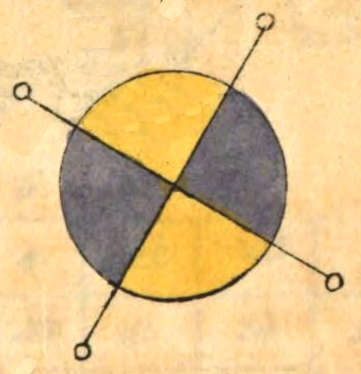
| 11 | 24 | 7 | 20 | 3 |
| 4 | 12 | 25 | 8 | 16 |
| 17 | 5 | 13 | 21 | 9 |
| 10 | 18 | 1 | 14 | 22 |
| 23 | 6 | 19 | 2 | 15 |
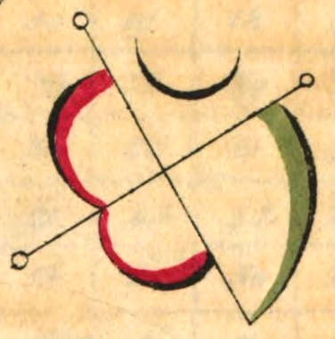
| 6 | 32 | 3 | 34 | 35 | 1 |
| 7 | 11 | 27 | 28 | 8 | 30 |
| 19 | 14 | 16 | 15 | 23 | 24 |
| 18 | 20 | 22 | 21 | 17 | 13 |
| 25 | 29 | 10 | 9 | 26 | 12 |
| 36 | 5 | 33 | 4 | 2 | 31 |
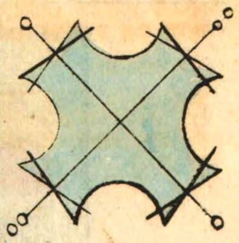
[Taf. 2]
Taf. 2.
| 22 | 47 | 16 | 41 | 10 | 35 | 4 |
| 5 | 23 | 48 | 17 | 42 | 11 | 29 |
| 30 | 6 | 24 | 49 | 18 | 36 | 12 |
| 13 | 31 | 7 | 25 | 43 | 19 | 37 |
| 38 | 14 | 32 | 1 | 26 | 44 | 20 |
| 21 | 39 | 8 | 33 | 2 | 27 | 45 |
| 46 | 15 | 40 | 9 | 34 | 3 | 28 |
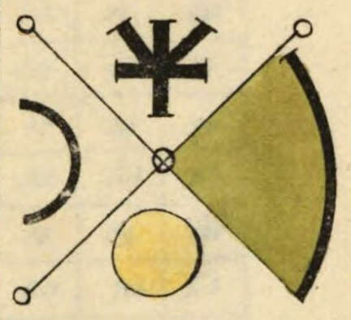
| 8 | 58 | 59 | 5 | 4 | 62 | 63 | 1 |
| 49 | 15 | 14 | 52 | 53 | 11 | 10 | 56 |
| 41 | 23 | 22 | 44 | 45 | 19 | 18 | 48 |
| 32 | 34 | 35 | 29 | 28 | 38 | 39 | 25 |
| 40 | 26 | 27 | 37 | 36 | 30 | 31 | 33 |
| 17 | 47 | 46 | 20 | 21 | 43 | 42 | 24 |
| 9 | 55 | 54 | 12 | 13 | 51 | 50 | 16 |
| 64 | 2 | 3 | 61 | 60 | 6 | 7 | 57 |
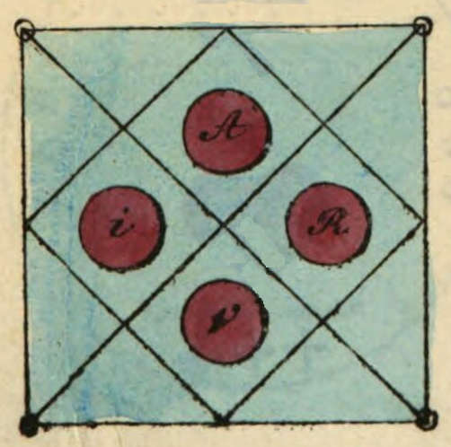
[Taf. 3]
Taf. 3.
| 37 | 78 | 29 | 70 | 21 | 62 | 13 | 54 | 5 |
| 6 | 38 | 79 | 30 | 71 | 22 | 63 | 14 | 46 |
| 47 | 7 | 39 | 80 | 31 | 72 | 23 | 55 | 15 |
| 16 | 48 | 8 | 40 | 81 | 32 | 64 | 24 | 56 |
| 57 | 17 | 49 | 9 | 41 | 73 | 33 | 65 | 25 |
| 26 | 58 | 18 | 50 | 1 | 42 | 74 | 34 | 66 |
| 67 | 27 | 59 | 10 | 51 | 2 | 43 | 75 | 35 |
| 36 | 68 | 19 | 60 | 11 | 52 | 3 | 44 | 76 |
| 77 | 28 | 69 | 20 | 61 | 12 | 53 | 4 | 45 |
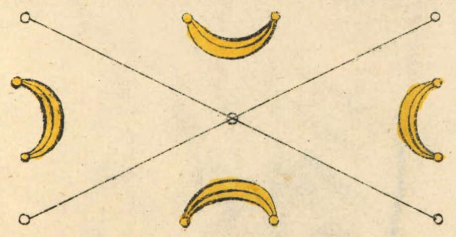
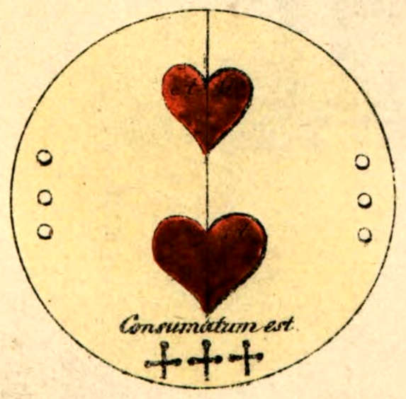
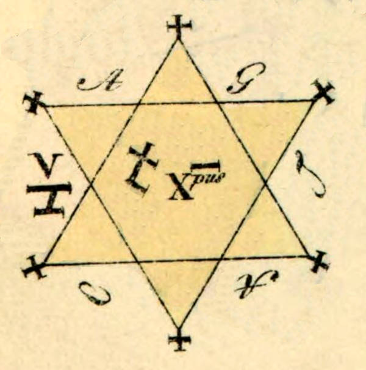
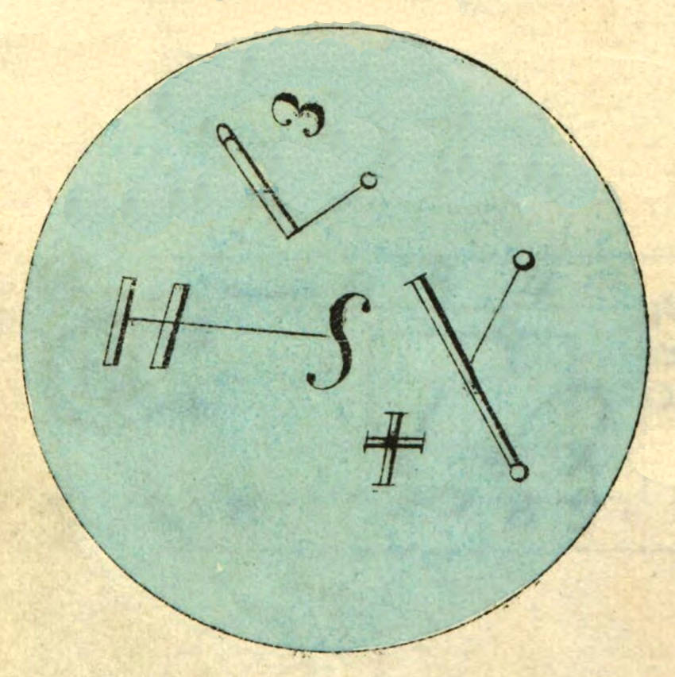
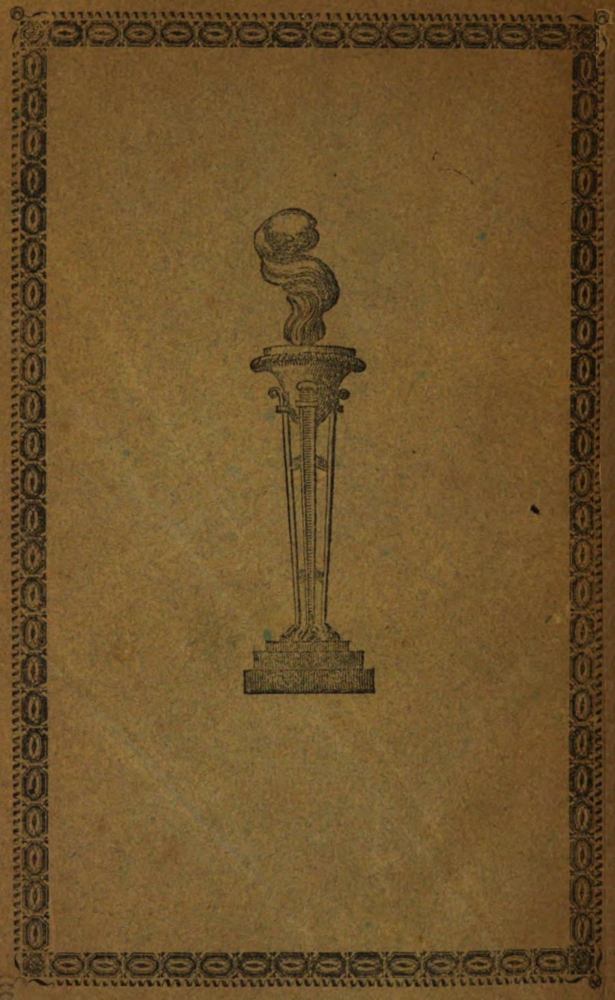
Liste korrigierter Druckfehler
Im Inhaltsverzeichnis ab Seite iii waren mehrere Seitenzahlen falsch angegeben. Sie wurden folgendermaßen geändert:
„Vom Bannen und Festmachen“: Seite 44 korrigiert zu 45.
„Schatzgräberei“: Seite 96 korrigiert zu 97.
„Das Mutisheer“: Seite 126 korrigiert zu 127.
„Christnacht, helle und finstere“: Seite 114 korrigiert zu 115.
„Gespenst, das, im Hause“: Seite 134 korrigiert zu 133.
Seite 2: „ine“ durch „eine“ ersetzt (Sie ist eine behende, reine Kunst ohne Ceremonie, ...)
Seite 25 „acculta“ durch „occulta“ ersetzt (Agrippa in seiner occulta philosophia ...)
Seite 32 „Hilfswurzbind,“ durch „Hilfswurz, bind“ ersetzt (... Mannstreu, Hilfswurz, bind dies mit Siebengezeit zusammen in Herzkraut, und ...)
Seite 64: „un“ durch „und“ ersetzt (... ihre Länge, Züge, Lage, Gestalt, Abschnitte und Vermischungen mit einander.)
Seite 66: „Spases“ durch „Spaßes“ ersetzt (Des Spaßes wegen lasse man sich ...)
Seite 170: „gewönliche“ durch „gewöhnliche“ ersetzt (Als es zwei Uhr schlug, ließ sich der gewöhnliche Klang einer großen Glocke, die geläutet wurde, vernehmen, ...)
Seite 177: „daß“ durch „das“ ersetzt (Die Besuche dieses Wesens, das sich Immanuel nennen läßt, ...)
Seite 210: „Urthel“ durch „Urtheil“ ersetzt (Das Urtheil brachte ihm das Schwert; ...)
Seite 230: „Aristrokratie“ durch „Aristokratie“ ersetzt (Alle diese hatten wahrscheinlich eine Aristokratie für die Eingeweihten ...)
Seite 258: „Exsuiten“ durch „Ex-Jesuiten“ ersetzt (... und übergab ihn einem Ex-Jesuiten, Riel, Lehrer in dem Convicte zu Schillingsfürst.)
Seite 265: „Brückenan“ durch „Brückenau“ ersetzt (Der von Brückenau zurück gekommene Wunderbeter ...)
Taf. 1, Fig. 4: Im magischen Quadrat kam die Zahl 23 doppelt vor, sie wurde in der 1. Zeile, 2. Spalte durch 32 ersetzt, so dass die Summe aller Zeilen und Spalten 111 beträgt.
Taf. 2, Fig. 5: Im magischen Quadrat kam die Zahl 28 doppelt vor, sie wurde in der 5. Zeile, 1. Spalte durch 38 ersetzt, so dass die Summe aller Zeilen und Spalten 175 beträgt.
Taf. 3, Fig. 7: Im magischen Quadrat kam die Zahl 25 doppelt vor, sie wurde in der 8. Zeile, 6. Spalte durch 52 ersetzt, so dass die Summe aller Zeilen und Spalten 369 beträgt.